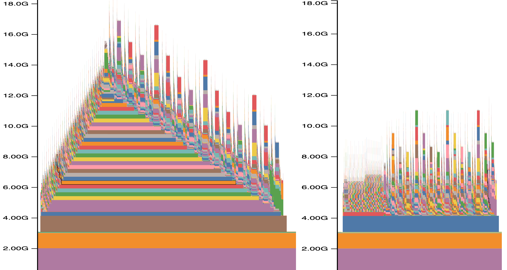
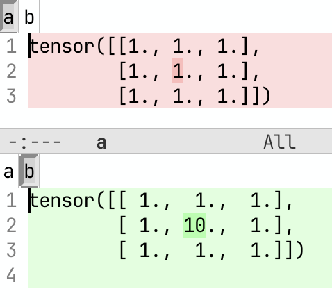

Debugging PyTorch Programs
Fast debug of PyTorch models
Faster Debug and Development with Tiny Models, Tokenizers and Datasets
If you're debugging problems and develop with full sized models and tokenizers you're likely not working in a very efficient way. Not only it's much more difficult to solve problem, the amount of waiting to get the program to restart and to get to the desirable point can be huge - and cumulatively this can be a huge drain on one's motivation and productivity, not talking about the resolution taking much longer, if at all.
The solution is simple:
Unless you're testing the quality of a model, always use a tiny random model with potentially tiny tokenizer.
Moreover, large models often require massive resources, which are typically expensive and can also can make a debugging process super complicated. For example any debugger can handle a single process, but if your model doesn't fit and require some sort of parallelization that requires multiple processes - most debuggers will either break or have issue giving you what you need. The ideal development environment is one process and a tiny model is guaranteed to fit on an even cheapest single smallest consumer GPU available. You could even use the free Google Colab to do development in a pinch if you have no GPUs around.
So the updated ML development mantra then becomes:
- the larger the model the better the final product generates
- the smaller the model the quicker the final product's training can be started
footnote: the recent research shows that larger isn't always better, but it's good enough to convey the importance of my communication.
Once your code is working, do switch to the real model to test the quality of your generation. But even in this case still try first the smallest model that produces a quality result. Only when you can see that the generation is mostly right use the largest model to validate if your work has been perfect.
Making a tiny model
Important: given their popularity and the well designed simple API I will be discussing HF transformers models. But the same principle can be applied to any other model.
TLDR: it's trivial to make a tiny HF transformers model:
- Fetch the config object of a full size model
- Shrink the hidden size and perhaps a few other parameters that contribute to the bulk of the model
- Create a model from that shrunken config
- Save this model. Done!
footnote: It's critical to remember that this will generate a random model, so don't expect any quality from its output.
footnote: These notes were written with HF Transformers models in mind. If you're using a different modeling library you may have to adapt some of these things.
Now let's go through the actual code and convert "google/mt5-small" into its tiny random counterpart.
from transformers import MT5Config, MT5ForConditionalGeneration
mname_from = "google/mt5-small"
mname_very_small = "mt5-tiny-random"
config = MT5Config.from_pretrained(mname_from)
config.update(dict(
d_model=64,
d_ff=256,
))
print("new config", config)
very_small_model = MT5ForConditionalGeneration(config)
print(f"num of params {very_small_model.num_parameters()}")
very_small_model.save_pretrained(mname_very_small)
As you can see it's trivial to do. And you can make it even smaller if you don't need the hidden size to be at least 64. For example try 8 - you just need to make sure that the number of attention heads isn't larger than hidden size.
Also please note that you don't need any GPUs to do that and you could do this even on a huge 176B parameter model like BLOOM-176B. Since you never load the actual original model, except its config object.
Before modifying the config you can dump the original parameters and choose to shrinks more dimensions. For example, using less layers makes it even smaller and easier to debug. So here is what you can do instead:
config.update(dict(
d_model=64,
d_ff=256,
d_kv=8,
num_layers=8,
num_decoder_layers=8,
num_heads=4,
relative_attention_num_buckets=32,
))
Note that this encoder-decoder model takes both layer counts. num_decoder_layers falls back to num_layers only when it isn't set, and a config loaded from a real checkpoint already has it set, so trimming num_layers alone would leave the decoder at its full depth. Other encoder-decoder architectures split it differently - BART, Marian, Pegasus and Whisper name the pair encoder_layers and decoder_layers - but the rule is the same: shrink both.
The original "google/mt5-small" model file was 1.2GB. With the above changes (and vocab shrinking as explained in the following sections) we got it down to 126MB.
If you're dealing with a multi-level nested config, you will have to update each sub-level's config object separately. For example in IDEFICS we have 1 main and 2 nested objects:
config
config.perceiver_config
config.vision_config
If you wanted to shrink this model you'd want to update config and config.vision_config with smaller values:
config.update(dict(
hidden_size=64,
intermediate_size=37,
num_hidden_layers=5,
num_attention_heads=4,
max_position_embeddings=64,
max_sequence_length=64,
))
# sub object needs to be updated directly
config.vision_config.update(dict(embed_dim=64))
See idefics-make-tiny-model.py for a fully working script (I didn't bother adding the vocab shrinking as I'm just demonstrating how to update nested config objects here).
A related trap: architectures that interleave block types spell the pattern out in a layer_types list with one entry per layer. Qwen/Qwen-AgentWorld-35B-A3B carries 40 linear_attention/full_attention entries beside its "num_hidden_layers": 40, and the two have to be trimmed together - and, as in the nested case above, both keys live under text_config.
A mismatch fails in two different ways. Save the shrunken config and load it back, and it refuses outright:
StrictDataclassClassValidationError: Class validation error for validator 'validate_layer_type':
ValueError: `num_hidden_layers` (2) must be equal to the number of `layer_types` (40)
Mutate the config object in memory only, and nothing is raised - the model quietly builds your 2 layers from the first 2 entries of the untouched list, and since this model's full attention block first appears at index 3, you get two linear-attention layers and none of the block you meant to keep. So trim the list in lockstep:
config.text_config.update(dict(
num_hidden_layers=4,
layer_types=config.text_config.layer_types[:4],
))
If you're editing config.json directly, you can instead delete the layer_types entry and let the config regenerate the pattern from full_attention_interval at the new depth. Either way, pick a depth that spans one full period of the pattern - 4 rather than 2 for this model - or the variation you were keeping disappears.
We can then further halve our tiny model size by converting the model to fp16 or bf16 (depending on the goal) before saving it:
very_small_model.half() # convert to fp16
#very_small_model.bfloat16() # convert to bf16
very_small_model.save_pretrained(mname_very_small)
this takes us to 64MB file.
So you could stop here and your program will start much much faster already.
And there is one more step you could do to make it truly tiny.
What we haven't shrunken so far is the vocabulary dimension so 64x250k (hidden*vocab) is still huge. Granted this 250k vocab model is not typical - normally models' vocab is ~30-50k, but even 30k is a lot if we want the model to be truly tiny.
So next we will look into various techniques to shrinking the tokenizer, as it defines our vocab size.
Making a tiny tokenizer
This task varies between a relatively simple procedure and a much more complex workout depending on the underlying tokenizer.
The following recipes have come from a few awesome tokenizer experts at HuggingFace, which I then adapted to my needs.
You probably don't really need to understand how these work until you actually need them, therefore if you're reading this for the first time you can safely jump over these to Making a tiny model with a tiny tokenizer.
Anthony Moi's version
Anthony Moi's tokenizer shrinker:
import json
from transformers import AutoTokenizer
from tokenizers import Tokenizer
vocab_keep_items = 5000
mname = "microsoft/deberta-base"
tokenizer = AutoTokenizer.from_pretrained(mname, use_fast=True)
assert tokenizer.is_fast, "This only works for fast tokenizers."
tokenizer_json = json.loads(tokenizer._tokenizer.to_str())
vocab = tokenizer_json["model"]["vocab"]
if tokenizer_json["model"]["type"] == "BPE":
new_vocab = { token: i for token, i in vocab.items() if i < vocab_keep_items }
merges = tokenizer_json["model"]["merges"]
new_merges = []
for i in range(len(merges)):
a, b = merges[i].split()
new_token = "".join((a, b))
if a in new_vocab and b in new_vocab and new_token in new_vocab:
new_merges.append(merges[i])
tokenizer_json["model"]["merges"] = new_merges
elif tokenizer_json["model"]["type"] == "Unigram":
new_vocab = vocab[:vocab_keep_items]
elif tokenizer_json["model"]["type"] == "WordPiece" or tokenizer_json["model"]["type"] == "WordLevel":
new_vocab = { token: i for token, i in vocab.items() if i < vocab_keep_items }
else:
raise ValueError(f"don't know how to handle {tokenizer_json['model']['type']}")
tokenizer_json["model"]["vocab"] = new_vocab
tokenizer._tokenizer = Tokenizer.from_str(json.dumps(tokenizer_json))
tokenizer.save_pretrained(".")
I later discovered that gpt2 seems to have a special token "<|endoftext|>" stashed at the very end of the vocab, so it gets dropped and code breaks. So I hacked it back in with:
if "gpt2" in mname:
new_vocab = { token: i for token, i in vocab.items() if i < vocab_keep_items-1 }
new_vocab["<|endoftext|>"] = vocab_keep_items-1
else:
new_vocab = { token: i for token, i in vocab.items() if i < vocab_keep_items }
Lysandre Debut's version
Lysandre Debut' shrinker using train_new_from_iterator:
from transformers import AutoTokenizer
mname = "microsoft/deberta-base" # or any checkpoint that has a fast tokenizer.
vocab_keep_items = 5000
tokenizer = AutoTokenizer.from_pretrained(mname)
assert tokenizer.is_fast, "This only works for fast tokenizers."
tokenizer.save_pretrained("big-tokenizer")
# Should be a generator of list of texts.
training_corpus = [
["This is the first sentence.", "This is the second one."],
["This sentence (contains #) over symbols and numbers 12 3.", "But not this one."],
]
new_tokenizer = tokenizer.train_new_from_iterator(training_corpus, vocab_size=vocab_keep_items)
new_tokenizer.save_pretrained("small-tokenizer")
but this one requires a training corpus, so I had an idea to cheat and train the new tokenizer on its own original vocab which gave me:
from transformers import AutoTokenizer
mname = "microsoft/deberta-base"
vocab_keep_items = 5000
tokenizer = AutoTokenizer.from_pretrained(mname)
assert tokenizer.is_fast, "This only works for fast tokenizers."
vocab = tokenizer.get_vocab()
training_corpus = [ vocab.keys() ] # Should be a generator of list of texts.
new_tokenizer = tokenizer.train_new_from_iterator(training_corpus, vocab_size=vocab_keep_items)
new_tokenizer.save_pretrained("small-tokenizer")
which is almost perfect, except it now doesn't have any information about the frequency for each word/char (that's how most tokenizers compute their vocab, which if you need this info you can fix by having each key appearing len(vocab) - ID times, i.e.:
training_corpus = [ (k for i in range(vocab_len-v)) for k,v in vocab.items() ]
which will make the script much much longer to complete.
But for the needs of a tiny model (testing) the frequency doesn't matter at all.
Hack the tokenizer file approach
Some tokenizers can be just manually truncated at the file level, e.g. let's shrink Llama2's tokenizer to 3k items:
# Shrink the orig vocab to keep things small (just enough to tokenize any word, so letters+symbols)
# ElectraTokenizerFast is fully defined by a tokenizer.json, which contains the vocab and the ids,
# so we just need to truncate it wisely
import subprocess
import shlex
from transformers import LlamaTokenizerFast
mname = "meta-llama/Llama-2-7b-hf"
vocab_keep_items = 3000
tokenizer_fast = LlamaTokenizerFast.from_pretrained(mname)
tmp_dir = f"/tmp/{mname}"
tokenizer_fast.save_pretrained(tmp_dir)
# resize tokenizer.json (vocab.txt will be automatically resized on save_pretrained)
# perl -0777 -pi -e 's|(2999).*|$1},"merges": []}}|msg' tokenizer.json # 0-indexed, so vocab_keep_items-1!
closing_pat = '},"merges": []}}'
cmd = (f"perl -0777 -pi -e 's|({vocab_keep_items-1}).*|$1{closing_pat}|msg' {tmp_dir}/tokenizer.json")
#print(f"Running:\n{cmd}")
result = subprocess.run(shlex.split(cmd), capture_output=True, text=True)
# reload with modified tokenizer
tokenizer_fast_tiny = LlamaTokenizerFast.from_pretrained(tmp_dir)
tokenizer_fast_tiny.save_pretrained(".")
Please remember that the outcome is only useful for functional testing - not quality work.
Here is the full version of make_tiny_model.py which includes both the model and the tokenizer shrinking.
SentencePiece vocab shrinking
First clone SentencePiece into a parent dir:
git clone https://github.com/google/sentencepiece
Now to the shrinking:
# workaround for fast tokenizer protobuf issue, and it's much faster too!
os.environ["PROTOCOL_BUFFERS_PYTHON_IMPLEMENTATION"] = "python"
from transformers import XLMRobertaTokenizerFast
mname = "xlm-roberta-base"
# Shrink the orig vocab to keep things small
vocab_keep_items = 5000
tmp_dir = f"/tmp/{mname}"
vocab_orig_path = f"{tmp_dir}/sentencepiece.bpe.model" # this name can be different
vocab_short_path = f"{tmp_dir}/spiece-short.model"
# HACK: need the sentencepiece source to get sentencepiece_model_pb2, as it doesn't get installed
sys.path.append("../sentencepiece/python/src/sentencepiece")
import sentencepiece_model_pb2 as model
tokenizer_orig = XLMRobertaTokenizerFast.from_pretrained(mname)
tokenizer_orig.save_pretrained(tmp_dir)
with open(vocab_orig_path, 'rb') as f: data = f.read()
# adapted from https://blog.ceshine.net/post/trim-down-sentencepiece-vocabulary/
m = model.ModelProto()
m.ParseFromString(data)
print(f"Shrinking vocab from original {len(m.pieces)} dict items")
for i in range(len(m.pieces) - vocab_keep_items): _ = m.pieces.pop()
print(f"new dict {len(m.pieces)}")
with open(vocab_short_path, 'wb') as f: f.write(m.SerializeToString())
m = None
tokenizer_fast_tiny = XLMRobertaTokenizerFast(vocab_file=vocab_short_path)
tokenizer_fast_tiny.save_pretrained(".")
Making a tiny model with a tiny tokenizer
So now you can shrink the vocab size to as small as the tokenizer allows, that is you need to have at least enough tokens to cover the target alphabet and special characters, and usually 3-5k tokens is more than enough. Sometimes you could make it even small, after all the original ASCII charset has only 128 characters.
If we continue the MT5 code from earlier in this chapter and add the tokenizer shrinking code from the previous section, we end up with this script mt5-make-tiny-model.py and when we run it - our end model file is truly tiny - 3.34MB in size! As you can see the script also has code to validate that the model can actually work with the modified tokenizer. The results will be garbage, but the intention is to test that the new model and the tokenizer are functional.
Here is another example fsmt-make-super-tiny-model.py - here you can see I'm creating a totally new tiny vocab from scratch.
I also recommend to always store the building scripts with the model, so that you could quickly fix things or make similar versions of the model.
Also be aware that since HF transformers needs tiny models for their testing, you are very likely to already find one for each architecture available mostly from https://huggingface.co/hf-internal-testing (except they didn't include the code of how they were made, but you can now figure it out based on these notes).
Another hint: if you need a slightly different tiny model, you can also start with an already existing tiny model and adapt it instead. Since it's random it's really only about getting the right dimensions. For example if the tiny model you found has 2 layers but you need 8, just resave it with this larger dimension and you're done.
Making a tiny dataset
Similar to models and tokenizers it helps to have a handy tiny version of a dataset you work with a lot. As usual this won't help with quality testing, but it's perfect for launching your program really fast.
footnote: the impact of using a tiny dataset won't be as massive as using a tiny model, if you're using already pre-indexed Arrow file datasets, since those are already extremely fast. But say you want the iterator to finish an epoch in 10 steps. Instead of editing your code to truncate the dataset, you could just use a tiny dataset instead.
This process of making a tiny dataset is somewhat more difficult to explain because it'd depend on the builder of the original dataset, which can be quite different from each other, but perhaps you can correlate my recipes to your datasets.
But the concept is still very simple:
- Clone the full dataset git repo
- Replace its full data tarball with a tiny one that contains just a few samples
- Publish the tiny result as data files the Hub can load without a custom script (Parquet, Arrow, JSON/JSONL, CSV, or an image/text folder) plus a dataset card - Done!
footnote: as of datasets 4.0, Hub-hosted Python loading scripts are no longer executed by load_dataset. Keep any builder/unpacker .py in the repo as documentation of how the tiny set was made and for local regeneration, but what remote users load must be the data files themselves. See Dataset repository structure.
Here are some examples:
In all of these I took the original tarball, grabbed the first 10k records, tarred it back, used this smaller tarball and that was that. The rest of the builder script remained mostly the same.
And here are some examples of synthetic datasets, where instead of just shrinking the original tarball, I untar'ed it, manually chose the representative examples and then wrote a script to build any size of desired dataset based on those few representative samples: - stas/general-pmd-synthetic-testing and the unpacker - stas/cm4-synthetic-testing - and the unpacker
These are also the complex examples where each sample is more than a text entry, but may have multiple text entries and images as well.
The unpacker is what expands each complex multi-record sample into its own sub-directory, so that now you can easily go and tweak it to your liking. You can add image, remove them, make text records smaller, etc.. You will also notice that I'm shrinking the large images into tiny 32x32 images, so again I'm applying the important principle of tiny across all dimensions that don't break the requirements of the target codebase.
And then the main script uses that structure to build a dataset of any desired length.
And here is for example the instructions of deploying these scripts for stas/general-pmd-synthetic-testing:
# prep dataset repo
https://huggingface.co/new-dataset => stas/general-pmd-synthetic-testing
git clone https://huggingface.co/datasets/stas/general-pmd-synthetic-testing
cd general-pmd-synthetic-testing
# select a few seed records so there is some longer and shorter text, records with images and without,
# a few variations of each type
rm -rf data
python general-pmd-ds-unpack.py --dataset_name_or_path \
general_pmd/image/localized_narratives__ADE20k/train/00000-00002 --ids 1-10 --target_path data
cd data
# shrink to 32x32 max, keeping ratio
mogrify -format jpg -resize 32x32\> */*jpg
# adjust one record to have no image and no text
cd 1
rm image.jpg text.txt
touch image.null text.null
cd -
cd ..
# create tarball
tar -cvzf data.tar.gz data
# complete the dataset repo
echo "This dataset is designed to be used in testing. It's derived from general-pmd/localized_narratives__ADE20k \
dataset" >> README.md
# test dataset - it must load from plain data files, with no remote loading script
cd ..
python -c 'from datasets import load_dataset; print(load_dataset("general-pmd-synthetic-testing"))'
I also recommend to always store the building scripts with the dataset, so that you could quickly fix things or make similar versions of the dataset.
Similar to tiny models, you will find many tiny datasets under https://huggingface.co/hf-internal-testing.
Conclusion
While in the domain of ML we have the dataset, the model and the tokenizer - each of which can be made tiny and enable super-speed development with low resource requirements, if you're coming from a different industry you can adapt the ideas discussed in this chapter to your particular domain's artifacts/payloads.
Backup of all scripts in this chapter
Should the original scripts this chapter is pointing to disappear or the HF hub is down while you're reading this, here is the local back up of all of them.
note-to-self: to make the latest backup of files linked to in this chapter run:
perl -lne 'while (/(https.*?.py)\)/g) { $x=$1; $x=~s/blob/raw/; print qq[wget $x] }' make-tiny-models.md
Reducing the number of layers for large models
When debugging PyTorch workflows, as explained in using small payload you'd normally try to use tiny random models (as covered above). But since some problems only appear at scale it's very likely you'd have to use the full-sized model, which may take a very long time to load and run until it gets to the point of interest, where problems appear.
Given the nature of ML model architectures, they typically use a sequence of identical layers that repeat one after another. Therefore, if a model has, say, 48 layers, you can shrink it to just 2 layers, which will dramatically speed up both the loading and running the code. Of course, the qualitative outcome will be bad, but we aren't concerned with quality if the workload hangs or breaks.
Therefore in this section we will discuss how to reduce the model's number of hidden layers from many to just 1-2. If the layers aren't identical (e.g. some MoE models alternate between 2 different block configurations) then ensure you include at least one variation of each. For the purpose of the following demonstrations we will use this MoE model Qwen/Qwen3-30B-A3B-Instruct-2507. We have 48 hidden layers there as can be seen from its config file.
This model may have 2 alternating types of Transformer blocks, so we need to keep at least 2 layers. (Qwen/Qwen3-Next-80B-A3B-Instruct uses a full attention block only once every 4 layers so there you'd need at least 4 layers.)
The config entry that we want to change is num_hidden_layers. Some architectures pair it with a companion entry that has to be trimmed in lockstep - a decoder-side layer count, or a layer_types list - see Making a tiny model.
Let's first run a quick test to demonstrate that even just the model loading time can be much faster, before seeing the huge speedup in the compute time:
git clone https://huggingface.co/Qwen/Qwen3-30B-A3B-Instruct-2507
time python -c 'import sys; from transformers import AutoModelForCausalLM; \
AutoModelForCausalLM.from_pretrained(sys.argv[1])' ./Qwen3-30B-A3B-Instruct-2507
perl -pi -e 's|"num_hidden_layers": 48|"num_hidden_layers": 2|' Qwen3-30B-A3B-Instruct-2507/config.json
time python -c 'import sys; from transformers import AutoModelForCausalLM; \
AutoModelForCausalLM.from_pretrained(sys.argv[1])' ./Qwen3-30B-A3B-Instruct-2507
so here we clone the model locally and then measured how long it took to load the base model:
real 5m59.857s
user 128m28.088s
sys 16m33.861s
then we reduced the number of layers from 48 to 2 and repeated the model loading. This time we get:
real 0m20.398s
user 2m9.101s
sys 2m29.587s
Looking at the real entry (wallclock time) we have 6 minutes loading for the full model vs 20 seconds for the shrunk 2-layer model - that's 18x times faster and ~5.5 minutes of waiting time saved! real is what matters for this kind of benchmark, since it's the waiting you actually do; the user and sys figures dwarf it because they count CPU time summed over every core that was busy, not elapsed time - time later in this chapter explains all three.
There are 3 ways to accomplish that.
In this discussion we presume you're using HF Transformers-based models, but the same methodology could be translated to other modeling frameworks.
1. local clone with config edits
After finding the desired model on https://huggingface.co/, clone its git repo to the local disk, modify the num_hidden_layers entry in config.json, and then load the model from the local clone (same as we have just shown when measuring model loading time).
git clone https://huggingface.co/Qwen/Qwen3-30B-A3B-Instruct-2507
perl -pi -e 's|"num_hidden_layers": 48|"num_hidden_layers": 2|' Qwen3-30B-A3B-Instruct-2507/config.json
python -c 'import sys; from transformers import AutoModelForCausalLM; \
AutoModelForCausalLM.from_pretrained(sys.argv[1])' ./Qwen3-30B-A3B-Instruct-2507
Please make sure that you load the locally cloned version, that is:
- ... from_pretrained("Qwen/Qwen3-30B-A3B-Instruct-2507")
+ ... from_pretrained("./Qwen3-30B-A3B-Instruct-2507")
This approach is useful since you don't need to change the user-end code.
2. editing the config object on the fly
The other even simpler approach is to hack the config object on the fly. This requires no local cloning and is probably the easiest solution, though it requires modifying the end user code:
python -c 'import sys; from transformers import AutoModelForCausalLM, AutoConfig; \
c=AutoConfig.from_pretrained(sys.argv[1]); c.num_hidden_layers=2; \
m=AutoModelForCausalLM.from_pretrained(sys.argv[1], config=c)' Qwen/Qwen3-30B-A3B-Instruct-2507
And since you will end up with an incomplete model which will generate random outputs anyway, you can also save the overhead of loading the original model weights and just create the model on the fly like so:
python -c 'import sys; from transformers import AutoModelForCausalLM, AutoConfig; \
c=AutoConfig.from_pretrained(sys.argv[1]); c.num_hidden_layers=2; \
m=AutoModelForCausalLM.from_config(c)' Qwen/Qwen3-30B-A3B-Instruct-2507
3. hacking the architecture modeling code
This approach is most useful if you need to deal with multiple models of the same architecture and you don't want to modify the end user code.
First we clone HF Transformers and install its editable version:
git clone https://github.com/huggingface/transformers/tree/main/src/transformers
cd transformers
pip install -e .[dev]
Now we can tweak the code under src/transformers and it will be immediately visible to the Python environment that is being used.
Continuing the example of working with Qwen/Qwen3-30B-A3B-Instruct-2507 model, we find the place where its architecture modeling code lives in the HF Transformers code base. For example, we can look at the architectures field in the model's config, which gives us Qwen3MoeForCausalLM. We now find the Python module where it lives in the HF Transformers code base:
$ grep -Ir "class Qwen3MoeForCausalLM" src/transformers/models
src/transformers/models/qwen3_moe/modeling_qwen3_moe.py:class Qwen3MoeForCausalLM(Qwen3MoePreTrainedModel, GenerationMixin):
src/transformers/models/qwen3_moe/modular_qwen3_moe.py:class Qwen3MoeForCausalLM(MixtralForCausalLM):
So we know it's in src/transformers/models/qwen3_moe/modeling_qwen3_moe.py (we don't care for modular_qwen3_moe.py in this situation, since it's modeling_qwen3_moe.py that gets loaded).
Now we open src/transformers/models/qwen3_moe/modeling_qwen3_moe.py in the editor and search for num_hidden_layers usages to find where the layers are initialized, which in this case is here:
class Qwen3MoeModel(Qwen3MoePreTrainedModel):
def __init__(self, config: Qwen3MoeConfig):
super().__init__(config)
[...]
self.layers = nn.ModuleList(
[Qwen3MoeDecoderLayer(config, layer_idx) for layer_idx in range(config.num_hidden_layers)]
)
So now we just hack the value of num_hidden_layers and we are done:
class Qwen3MoeModel(Qwen3MoePreTrainedModel):
def __init__(self, config: Qwen3MoeConfig):
super().__init__(config)
[...]
config.num_hidden_layers = 2
self.layers = nn.ModuleList(
[Qwen3MoeDecoderLayer(config, layer_idx) for layer_idx in range(config.num_hidden_layers)]
)
and now as long as this version of HF Transformers is devel-installed (pip install -e .) into the running Python environment Qwen3MoeForCausalLM-type of models will only use the first 2 layers as if it were the full model.
If you need to load the full model, but only run a few layers, then you can hack the loop over the layers in the model's forward. If the original code in Qwen3MoeModel.forward was:
for decoder_layer in self.layers[: self.config.num_hidden_layers]):
hidden_states = decoder_layer(...)
you can change to:
KEEP_N_LAYERS = 2
for idx, decoder_layer in enumerate(self.layers[: self.config.num_hidden_layers]):
# note: shortcut for much faster completion
if idx+1 > KEEP_N_LAYERS: continue
hidden_states = decoder_layer(...)
Additional Notes
When you load a pre-trained model while shortening its layers stack, you're going to see a flurry of warnings telling you that some weights have been ignored.
Also I'm reminding that you will end up with a model which will allow you to perform functional checks and tune ups - memory usage and performance, etc. It will produce garbage and if you measure the loss it'll be very high (though it shouldn't be NaN).
You can now measure performance with say 2 and 4 layers and tell how much overhead each layer takes from the difference and extrapolate this to what the full model will need.
Memory usage-wise, unless there is a memory leak, after the first layer finished running, subsequent layers shouldn't consume any additional CPU or GPU memory (other than peak memory) if activation checkpointing is not used and torch.cuda memory cache isn't flushed. If activation checkpointing is enabled, then expect each layer to consume the same additional amount of memory as the previous one (of the size of the checkpointed tensor).
Other shrink-the-stack use cases
You can apply a similar hack to other components that also have stacks of identical code-wise blocks. For example, you could reduce the number of attention heads and then the attention mechanism will run much faster (but of course producing garbage, which is fine most of the time when we focus on functional debugging) or skipping most attention blocks completely.
When I was debugging 15M sequence length training using ALST - I would only run self-attention in the last layer and then skip it in the previous layers - this reduced my testing time from hours to minutes, since very long sequence length using full self-attention has an O(2) quadratic nature with regards to sequence length it attends to.
Let's say we run only attention in the last layer:
In attention __init__ we set a few flags, let's use Qwen3MoeAttention:
def __init__(self, config: Qwen3MoeConfig, layer_idx: int):
super().__init__()
self.skip_all_but_last_attention_debug_mode = True
self.rotating_layer_counter = 0
and then in Qwen3MoeAttention.forward, we replace:
attn_output, attn_weights = attention_interface((self, query_states, ...)
(note the ... - most args were trimmed for this exemplification), with:
import einops
if not self.skip_all_but_last_attention_debug_mode:
attn_output, attn_weights = attention_interface(self, query_states, ...)
else:
self.rotating_layer_counter = (self.rotating_layer_counter + 1) % self.num_hidden_layers
# we detect the last layer by module counting since we know how many layers there are
if self.rotating_layer_counter % self.num_hidden_layers == 0:
attn_output, attn_weights = attention_interface(self, query_states, ...)
else:
# this feeds bogus data of the right shape connected to a graph - good enough for debug
attn_output = einops.rearrange(query_states, "bs hc sl ... -> bs sl hcl ...")
attn_weights = None
and, of course, install pip install einops for the above code to work.
Memory usage
GPU memory is probably the most invaluable resource, often more important than the compute and we always need more of it. So it's good to know how not to waste it.
The one error we all want to avoid is Out of Memory (aka CUDA OOM):
CUDA out of memory. Tried to allocate 15.41 GiB. GPU 3 has a total capacity of 79.10 GiB of which 15.40 GiB is free
Debugging CUDA OOM in forward
Let's first demo a simple CUDA OOM situation. Let's create a simple model and do a single forward/backward call on it:
import torch
class MyModel(torch.nn.Module):
def forward(self, x):
y = x.div(2)
z = y.add(10)
l = z.mul(2.0)
return l.sum()
x = torch.rand(int(15e9), device="cuda", requires_grad=True) # 15B elements
net = MyModel()
loss = net(x) # implicit forward
loss.backward()
On NVIDIA B200 w/ 180GiB of HBM memory the above script will OOM:
$ python mem-oom.py
Traceback (most recent call last):
File "/base/mem-oom.py", line 12, in <module>
loss = net(x)
^^^^^^
File "/home/stas/miniconda3/envs/dev/lib/python3.12/site-packages/torch/nn/modules/module.py", line 1775, in _wrapped_call_impl
return self._call_impl(*args, **kwargs)
^^^^^^^^^^^^^^^^^^^^^^^^^^^^^^^^
File "/home/stas/miniconda3/envs/dev/lib/python3.12/site-packages/torch/nn/modules/module.py", line 1786, in _call_impl
return forward_call(*args, **kwargs)
^^^^^^^^^^^^^^^^^^^^^^^^^^^^^
File "/base/mem-oom.py", line 6, in forward
l = z.mul(2.0)
^^^^^^^^^^
torch.OutOfMemoryError: CUDA out of memory. Tried to allocate 55.88 GiB. GPU 0 has a total capacity of 178.35 GiB of which 10.00 GiB is free. Including non-PyTorch memory, this process has 168.34 GiB memory in use. Of the allocated memory 167.64 GiB is allocated by PyTorch, and 4.62 MiB is reserved by PyTorch but unallocated. ...
The traceback tells us where exactly the problem is:
File "/base/mem-oom.py", line 6, in forward
l = z.mul(2.0)
Now we can easily act on it, e.g., reducing sequence length, batch size, choosing a smaller model or possibly improving the code to be more memory efficient.
footnote: if your GPU is of a different size you will need to tweak the x to be larger or smaller.
Debugging CUDA OOM in backward
Now what happens if the CUDA OOM happens in backward?
Unless one writes their own torch.autograd class, PyTorch will autogenerate the backward function for each corresponding forward it runs. And since it is autogenerated, whenever there is an issue in backward it becomes very difficult to find what forward call (and the exact line number) is responsible for it and thus understand the cause of the problem.
It's quite tricky to write a simple script to trigger a CUDA OOM in an auto-generated backward, because when backward starts, PyTorch immediately drops the temporary tensors from forward, freeing memory for backward memory allocations to almost always be successful.
Therefore, let's modify the script from the previous section to intentionally create a temporary memory leak, by returning the intermediate tensors from forward, so that their reference counter doesn't go to 0 and they don't get reclaimed when backward starts, thus not freeing the CUDA memory they hold.
And let's shrink x to 10B elements so that forward doesn't OOM, but consumes most of the memory leading to a CUDA OOM in backward.
import torch
class MyModel(torch.nn.Module):
def forward(self, x):
y = x.div(2)
z = y.add(10)
l = z.mul(2.0)
return l.sum(), y, z, l
x = torch.rand(int(10e9), device="cuda", requires_grad=True) # 10B elements
net = MyModel().cuda()
loss, y, z, l = net(x)
loss.backward()
Let's run it:
$ python mem-oom.py
Traceback (most recent call last):
File "/base/mem-oom.py", line 13, in <module>
loss.backward()
File "/home/stas/miniconda3/envs/dev/lib/python3.12/site-packages/torch/_tensor.py", line 625, in backward
torch.autograd.backward(
File "/home/stas/miniconda3/envs/dev/lib/python3.12/site-packages/torch/autograd/__init__.py", line 354, in backward
_engine_run_backward(
File "/home/stas/miniconda3/envs/dev/lib/python3.12/site-packages/torch/autograd/graph.py", line 841, in _engine_run_backward
return Variable._execution_engine.run_backward( # Calls into the C++ engine to run the backward pass
^^^^^^^^^^^^^^^^^^^^^^^^^^^^^^^^^^^^^^^^^^^^^^^^^^^^^^^^^^^^^^^^^^^^^^^^^^^^^^^^^^^^^^^^^^^^^^
torch.OutOfMemoryError: CUDA out of memory. Tried to allocate 37.25 GiB. GPU 0 has a total capacity of 178.35 GiB of which 28.63 GiB is free. Including non-PyTorch memory, this process has 149.71 GiB memory in use. Of the allocated memory 149.01 GiB is allocated by PyTorch, and 6.11 MiB is reserved by PyTorch but unallocated. ...
As you can see this traceback tells us absolutely nothing about where the problem is and thus in a real world, where there could be dozens of classes and layers in the model, it's quite impossible to identify the corresponding forward call other than perhaps via some smart bisection of the forward calls (short-circuiting a few at a time), which would be quite difficult and time consuming and error-prone.
Luckily, PyTorch has a special autograd mechanism that is used to detect anomalies. When enabled it'll augment the backward traceback with the forward traceback corresponding to the backward code.
Let's move the implicit forward and explicit backward calls into the torch.autograd.detect_anomaly() context manager:
with torch.autograd.detect_anomaly():
loss, y, z, l = net(x)
loss.backward()
with the complete code now becoming:
import torch
class MyModel(torch.nn.Module):
def forward(self, x):
y = x.div(2)
z = y.add(10)
l = z.mul(2.0)
return l.sum(), y, z, l
x = torch.rand(int(10e9), device="cuda", requires_grad=True) # 10B elements
net = MyModel().cuda()
with torch.autograd.detect_anomaly():
loss, y, z, l = net(x)
loss.backward()
footnote: it's crucial that both the forward and the backward calls are inside this context manager.
Let's run this updated script:
$ python mem-oom.py
/base/mem-oom.py:12: UserWarning: Anomaly Detection has been enabled. This mode will increase the runtime and should only be enabled for debugging.
with torch.autograd.detect_anomaly():
/home/stas/miniconda3/envs/dev/lib/python3.12/site-packages/torch/autograd/graph.py:841: UserWarning: Error detected in MulBackward0. Traceback of forward call that caused the error:
File "/base/mem-oom.py", line 13, in <module>
loss, y, z, l = net(x)
File "/home/stas/miniconda3/envs/dev/lib/python3.12/site-packages/torch/nn/modules/module.py", line 1775, in _wrapped_call_impl
return self._call_impl(*args, **kwargs)
File "/home/stas/miniconda3/envs/dev/lib/python3.12/site-packages/torch/nn/modules/module.py", line 1786, in _call_impl
return forward_call(*args, **kwargs)
File "/base/mem-oom.py", line 6, in forward
l = z.mul(2.0)
(Triggered internally at /pytorch/torch/csrc/autograd/python_anomaly_mode.cpp:122.)
return Variable._execution_engine.run_backward( # Calls into the C++ engine to run the backward pass
Traceback (most recent call last):
File "/base/mem-oom.py", line 14, in <module>
loss.backward()
File "/home/stas/miniconda3/envs/dev/lib/python3.12/site-packages/torch/_tensor.py", line 625, in backward
torch.autograd.backward(
File "/home/stas/miniconda3/envs/dev/lib/python3.12/site-packages/torch/autograd/__init__.py", line 354, in backward
_engine_run_backward(
File "/home/stas/miniconda3/envs/dev/lib/python3.12/site-packages/torch/autograd/graph.py", line 841, in _engine_run_backward
return Variable._execution_engine.run_backward( # Calls into the C++ engine to run the backward pass
^^^^^^^^^^^^^^^^^^^^^^^^^^^^^^^^^^^^^^^^^^^^^^^^^^^^^^^^^^^^^^^^^^^^^^^^^^^^^^^^^^^^^^^^^^^^^^
torch.OutOfMemoryError: CUDA out of memory. Tried to allocate 37.25 GiB. [...]
Now in addition to the original traceback, we also got the corresponding forward traceback:
Traceback of forward call that caused the error:
File "/base/mem-oom.py", line 13, in <module>
loss, y, z, l = net(x)
File "/home/stas/miniconda3/envs/dev/lib/python3.12/site-packages/torch/nn/modules/module.py", line 1775, in _wrapped_call_impl
return self._call_impl(*args, **kwargs)
File "/home/stas/miniconda3/envs/dev/lib/python3.12/site-packages/torch/nn/modules/module.py", line 1786, in _call_impl
return forward_call(*args, **kwargs)
File "/base/mem-oom.py", line 6, in forward
l = z.mul(2.0)
(Triggered internally at /pytorch/torch/csrc/autograd/python_anomaly_mode.cpp:122.)
and in particular we narrow it down to this section:
File "/base/mem-oom.py", line 6, in forward
l = z.mul(2.0)
So now we know exactly where in the forward code there is an issue that gets triggered in the backward and now we can start working on fixing it.
Besides using a context manager, you can also activate it globally somewhere before the training loop using torch.autograd.set_detect_anomaly(True).
Additionally you can disable the NaN checker to make things a bit faster with: torch.autograd.set_detect_anomaly(True, check_nan=False).
Important: make sure to disable the anomaly detection mode before you put your work to real use because it will slow things down.
Overcoming CUDA OOM due to memory fragmentation
When developing Arctic Long Sequence Training a lot of the work involved hard (contiguous) reshaping of tensors for Sequence Parallelism, which lead to a very poor HBM utilization, because the reshapes lead to memory fragmentation.
The solution was to use:
export PYTORCH_ALLOC_CONF=expandable_segments:True
which made a dramatic positive impact to allowing for a much longer sequence length to be used w/o incurring a CUDA OOM event.
In the particular case of this project I haven't observed any noticeable performance degradation, but if you use it do benchmark the performance w/ and w/o it to ensure it doesn't impact your workload's performance for the worse.
footnote: the original env var name was PYTORCH_CUDA_ALLOC_CONF, but it got renamed in recent PyTorch versions.
Discovering how many GBs is allocatable before OOM for CPU and GPU
Here are 2 simple one-liners that can tell you how much memory you can allocate on cpu and gpu. We will be using an H200 node with ~2TiB of CPU RAM and GPUs of 144GiB of HBM memory.
On CPU:
$ python -c 'import torch; [(torch.ones((1024*2**18)), print(c)) for c in range(2000)]'
0
1
2
[...]
1996
1997
Killed
This one liner tried to allocate 2TiB of memory, 1GiB at a time, reporting each successful incremental allocation. We can see the program incurred cpu-oom after successfully allocating around 1997GiB.
If your admin set cgroups to cpu oom individual programs when a collective amount of cpu memory used by a given user reaches a specific size, this is how you can discover what that value is. For example, on a shared 8-GPU node with 2TiB of CPU RAM, and you asked for just 1x GPU - you will likely get 1/8th of node's total resources - thus any of your processes may get killed via cpu-oom at 250GiB (2000/8), even though top shows you all of 2TiB available.
Now let's do the same test on GPU (after moving tensors to cuda device):
$ python -c 'import torch; [(torch.ones((1024*2**18)).cuda().contiguous(), print(c)) for c in range(200)]'
0
1
2
3
[...]
137
138
Traceback (most recent call last):
File "<string>", line 1, in <module>
torch.OutOfMemoryError: CUDA out of memory. Tried to allocate 1024.00 MiB.
GPU 0 has a total capacity of 139.80 GiB of which 289.25 MiB is free. [...]]
Indeed, H200 is about 140GiB, so this checks out. You might wonder what's the point of this. This discovery code is useful when you have to deal with multiple systems accessing the same GPU - e.g. VLLM and VeRL sharing the same GPUs and PyTorch memory usage counters are completely wrong, or if you want to emulate a smaller GPU memory while using a larger GPU (use case: you have to make your hparams fit into H200 but you lost access to it and you have a larger B300 GPU - just use up that many GiB and now your B300 is like H200 memory-size-wise)
Both of these one-liners will be useful in the investigation process of following section.
Overcoming the coherent memory uncertain behavior
The introduction of coherent/unified memory in recent NVIDIA products like DGX Station, Spark, GH200, GB300 makes it for a very confusing accounting, hard to understand memory usage patterns and unstable behavior.
For example, with DGX Spark, you can't even get a memory reading from the GPU side - nvidia-smi will not report memory use and will say Not Supported and pynvml.nvmlDeviceGetMemoryInfo() will assert. Here you never know if a CPU RAM using program is going to steal memory from a GPU program and OOM it (or vice versa). The same GPU workload may work at one time and OOM at another depending on what's running on the CPU side.
At least in my latest experiments with DGX Station here is what appears to be true. With the default settings Linux may borrow from the GPU HBM memory if it runs out of its LPDDR5 memory, but not the other way around - since PyTorch doesn't implement borrowing from CPU RAM as of 2026-08.
We will use the 2 one-liners from the previous section to see what's possible here. We will be using a DGX Station with 277GiB of GPU HBM memory and 496GiB of LPDDR5 CPU RAM - the total for the coherent memory reported by top is about 770GiB.
On CPU:
python -c 'import torch; [(torch.ones((1024*2**18)), print(c)) for c in range(900)]'
This program will try to allocate 900GiB of memory, one GiB at a time, reporting each successful incremental allocation. So on DGX Station when GPU is not used we get:
$ python -c 'import torch; [(torch.ones((1024*2**18)), print(c)) for c in range(900)]'
0
1
2
3
...
748
749
750
Killed
The program CPU OOMed at ~750GiB, since some 20GiB were used by system programs. So now we know if nothing else runs we can use all of the coherent memory - once the CPU RAM is fully consumed it'll start using GPU's HBM memory. (However note that nvidia-smi / NVML will not report this usage!)
Now let's check how much can we allocate on GPU:
$ python -c 'import torch; [(torch.ones((1024*2**18)).cuda().contiguous(), print(c)) for c in range(500)]'
0
1
2
3
[...]
272
273
274
Traceback (most recent call last):
File "<string>", line 1, in <module>
torch.OutOfMemoryError: CUDA out of memory. Tried to allocate 1024.00 MiB.
GPU 0 has a total capacity of 276.50 GiB of which 797.44 MiB is free. [...]]
OK, so we can see PyTorch (at least of this writing) won't reach into CPU RAM and has a hard stop at the size of HBM.
case study: As I was trying to figure out the maximum sequence length I could do post-training with on DGX Station with Qwen3-32B model, I kept getting alternating CPU-OOM and GPU-OOM events. The reason was that I was offloading optimizer states to CPU RAM since there wasn't enough HBM memory to hold the weights and optimizer states on a single GB300 GPU, but since there isn't that much CPU RAM either, Linux was reaching into the GPU "cookie jar" and stealing GPU memory. It was a very unsettling experience since I had to run dozens of experiments, most of them leading to one or the other OOM, why? because depending on what CPU-side processes were running (think various Linux daemons and user programs) there would be a different amount of CPU RAM available at different times and the behavior would become unpredictable.
The solution: to prevent CPU from stealing GPU memory switch to the CDMM mode (from the default NUMA mode), as explained in a paper linked from this post by running:
$ echo options nvidia NVreg_CoherentGPUMemoryMode=driver | sudo tee /etc/modprobe.d/nvidia-openrm.conf
and rebooting. When the system is back test it's set correctly:
$ grep Coherent /proc/driver/nvidia/params
CoherentGPUMemoryMode: "driver"
If it's not "driver" then it didn't work.
Voila, now you're back into the reliable and predictable "CPU memory is CPU memory, GPU memory is GPU memory" world. No weird surprises and various memory counters reflect reality.
If you rerun the first one-liner after switching to the CDMM mode, you will now see:
$ python -c 'import torch; [(torch.ones((1024*2**18)), print(c)) for c in range(900)]'
0
1
...
475
Killed
Since there is only 496GiB of LPDDR5 and some 20GiB are used by system processes we can now clearly see that CPU wasn't allowed to reach into GPU memory (I wasn't using GPU while running this test - its memory was fully available.) If you remember, originally the one-liner reported the process being CPU-OOMed at ~750GiB.
In the case of DGX Spark where it's only 120GiB of LPDDR5 memory, shared between CPU and GPU and 0 HBM memory, ideally the developer should be able to assign how much of the memory should go to GPU and to CPU - e.g. 80 and 40 correspondingly - that way the developer can reliably plan their workload and avoid programs crashing. I communicated this need to the NVIDIA team, let's see if they will come back with a solution to us.
PyTorch memory profiler
PyTorch memory profiler is quite easy to use. It requires 2 stages.
Stage 1. Instrument and run the code under torch.cuda.memory profiler
import torch
torch.cuda.memory._record_memory_history(max_entries=int(1e9))
# your tensor creation code goes here, e.g.:
t = torch.zeros(100,100, device="cuda")
torch.cuda.memory._dump_snapshot("/tmp/mem.pickle")
Here we just allocate a small tensor of zeros.
If you're on a multi-gpu setup you'd want to write a profile dump per rank to an individual file:
rank = torch.distributed.get_rank() # assuming torch.dist has already been initialized
torch.cuda.memory._dump_snapshot(f"/tmp/mem-{rank}.pickle")
or just save one rank instead if everything is symmetrical. The first time I missed this nuance and I was getting weird results, since I was hitting a race condition of different ranks writing to the same file, which looked non-corrupt when rendered but the outcome was a big mess.
For a largish code you would want to record as many memory allocation/free events as possible so I normally use a pretty large value like max_entries=int(1e9) for the _record_memory_history call.
Stage 2. Render the saved profile information into a visual representation
At this stage you'd typically go to https://docs.pytorch.org/memory_viz and drop the memory profile pickle file you generated in Stage 1 into the browser at that URL. The most useful feature there is the 'Active memory profile` drop-down menu.
To get a feeling for what it looks like, here is an example of a memory profile rendering for a memory leak I discovered while I was working on a tricky implementation of a TiledMLP torch.autograd.Function.

You can see those brown- and red-colored continuous horizontal bars (I pointed to those with black arrows). On the very left edge of those bars are the moments that created 2 large tensors during a single layer's forward, but you can see those 2 unlike other colored bars continue all the way into the right edge. The exact same story happen in the next spike, which is just the subsequent layer's memory allocations when it runs its forward - and you can see the yellow and orange bars that demonstrate the same leak, because it doesn't get cleared. So each layer's forward here leaks a few MBs of memory, which quickly adds up. A very small model has been used here, so that the absolute leak size was small, but once switched to a real model those MBs become GBs and we quickly run out of memory.
You can click on all those bars and the profiler will show you the traceback to the code that created the corresponding memory allocation. Since under the hood, PyTorch runs C++ CUDA code, unless you understand what happens there, it won't help you to understand the location of the leak in the code. But if you trace back up the trace into the Python land, you will actually see references to functions that you'd be familiar with. For example, calls like torch.zeros().
As long as you're in the forward function it's relatively easy to find where in the code leaks comes from. But if it's a backward it becomes much more complicated unless you're debugging a custom autograd function. Still it should give you enough information to be able to ask for help if you can't figure it out yourself. The best recourse in that situation is to try to reduce the code to the minimal size reproducible Python script that others can reproduce the problem with and then ask at some place where PyTorch developers hang out - for example I find #questions at the PyTorch Slack workspace to be an invaluable resource. If you don't have access to that Slack workspace, fear not, https://discuss.pytorch.org/ should work just as well. Even better, using the latter will help others to find answers to the same question down the road.
Besides profiling memory leaks, this functionality is also useful for showing how different implementations of the same algorithm use a different amount of gpu memory. For example, the following visualization I prepared for the Arctic Long Sequence Training paper:

This visualization depicts a PyTorch memory profile over a single forward-backward iteration. Left: normal setup. Right: with activation checkpoint offloading to CPU enabled.
The left side visualization is very telling to how gpu memory is used in the forward and backward calls, you can see how the left side, which is about 1/3 of the plot, is the layer-by-layer forward calls, and the right side, which is the remaining 2/3 of the plot, is layer-by-layer backward calls. You can also see that backward takes 2x longer than forward because it has do to compute gradients wrt weights and inputs. You can also see that typically forward allocates a lot of memory, which backward then gradually releases, while also doing small allocations of its own.
The right side visualization shows how very different memory usage pattern is, if we don't store any intermediary tensors on the gpu and offload them to cpu memory. You can see the same forward and backward calls but now the memory plot is flat, so you can add many more layers and it'll still use the same amount of gpu memory, whereas the image on left shows that if there are too many layers one will run into OOM, as the hill will continue to climb. If you're curious, the big spikes during backward in both images are gradient reductions across gpus.
This shows that even if you don't suspect a memory leak in your code it might still be a good idea to run it through memory profiler and you might get ideas to how to reduce memory usage or at the very least you will have a better feel for what your code is doing with the gpu memory.
Additional important notes: - Try to limit the profiler dump to just a few iterations, otherwise when you try to render the results in the browser it's likely to crash. You always want at least 2 iterations since the first one is always an outlier. I usually do 3 iterations.
Additional resources: - Understanding GPU Memory 1: Visualizing All Allocations over Time - HF folks made an improved rendering version.
Strategic memory allocation tracing
While external memory profilers can be very useful, often having control over when you take a sample of GPU and CPU memory usage is needed. see-mem-usage debug util has been developed by the DeepSpeed project and I made some small tweaks to it:
You want to make sure pip install nvidia-ml-py is run once, so that the report includes not only the CUDA memory report but the total gpu memory usage, since CUDA memory allocator is not always used. e.g., NCCL memory allocations aren't visible by CUDA and thus aren't accounted for, but can consume GBs of gpu memory. The total memory usage identical to what nvidia-smi reports is the NV column in the report.
A critical nuance when tracing GPU memory usage is that if you released a python variable containing a tensor it doesn't necessarily mean the tensor gets immediately freed. Python's garbage collection is run on a schedule and thus it's critical to run gc.collect() after releasing critical large environment variables (while debugging!) and only then sampling memory usage, which is what this library does for you behind the scenes.
Needless to say you will not want to use this library in production, since the overhead of frequent gc.collect calls and nvml sampling adds a non-trivial runtime overhead. So remember to flip force=True to force=False and then you can leave the debug code in your production code if desired.
So let's run a little program that allocates a tensor, copies it to cpu, frees it on gpu and then frees the cpu copy.
device = "cuda" if torch.cuda.is_available() else "cpu"
see_memory_usage("before alloc", force=True)
t1 = torch.zeros(100_000,10_000, device=device)
t2 = torch.zeros(100_000,10_000, device=device)
del t2
see_memory_usage("after alloc", force=True)
c1 = t1.cpu()
see_memory_usage("after copy to cpu", force=True)
del t1
see_memory_usage("after freeing on gpu", force=True)
del c1
see_memory_usage("after freeing on cpu", force=True)
Let's look at the output. The above program is at the bottom of the see-mem-usage.py library)
$ python see-mem-usage.py
[0] mp: before alloc
[0] mp: MA 0.00 GiB | Max_MA 0.00 GiB | CA 0.00 GiB | Max_CA 0.00 GiB | NV 0.71 GiB | CPU mem: proc 0.51 GiB / node 84.09 GiB (4.2%)
[0] mp: after alloc
[0] mp: MA 3.73 GiB | Max_MA 7.45 GiB | CA 7.45 GiB | Max_CA 7.45 GiB | NV 8.87 GiB | CPU mem: proc 0.70 GiB / node 84.26 GiB (4.2%)
[0] mp: after copy to cpu
[0] mp: MA 3.73 GiB | Max_MA 3.73 GiB | CA 7.45 GiB | Max_CA 7.45 GiB | NV 8.87 GiB | CPU mem: proc 4.42 GiB / node 88.02 GiB (4.4%)
[0] mp: after freeing on gpu
[0] mp: MA 0.00 GiB | Max_MA 3.73 GiB | CA 7.45 GiB | Max_CA 7.45 GiB | NV 8.87 GiB | CPU mem: proc 4.42 GiB / node 88.01 GiB (4.4%)
[0] mp: after freeing on cpu
[0] mp: MA 0.00 GiB | Max_MA 0.00 GiB | CA 7.45 GiB | Max_CA 7.45 GiB | NV 8.87 GiB | CPU mem: proc 0.70 GiB / node 85.41 GiB (4.3%)
Legend:
MA:torch.cuda.memory_allocated()- how much memory has been allocated at this momentMax_MA:torch.cuda.max_memory_allocated()- what was the peak memory usage so far (we also reset this counter after each run, so it will show the peak memory since the last call tosee_mem_usage)CA:torch.cuda.memory_reserved()Max_CA:torch.cuda.max_memory_reserved()NV: current total memory usage likenvidia-smireport, which is almost always more than what's reported by torch.cuda (theMAcolumn)CPU mem: two point-in-time CPU RAM readings frompsutil-procis this process's resident memory (RSS,psutil.Process().memory_info().rss), which is what you usually want when debugging your own program, andnodeis host-wide RAM in use (total - available) with itspercentof total. On a shared node thenodefigure includes everyone else's memory, so watchprocfor your process and usenodeonly to see how close the whole box is to full. Both are snapshots, not peaks - for peak CPU usage see Getting program's CPU peak memory usage
Now that we know what each column stands for let's analyze the output of the program.
[0] mp: before alloc
[0] mp: MA 0.00 GiB | Max_MA 0.00 GiB | CA 0.00 GiB | Max_CA 0.00 GiB | NV 0.71 GiB | CPU mem: proc 0.51 GiB / node 84.09 GiB (4.2%)
If you look at the NV column you can see the gpu was already using 0.71GiB of memory, even though no tensor has been allocated yet. This is because CUDA loads compute kernels the first time you call import torch - note that torch.cuda is not reporting that! all its columns are zeros. On the CPU side proc is 0.51GiB, which is just the resident memory of the Python process after import torch.
Then we execute:
t1 = torch.zeros(100_000,10_000, device=device)
t2 = torch.zeros(100_000,10_000, device=device)
del t2
and the corresponding log around it is:
[0] mp: before alloc
[0] mp: MA 0.00 GiB | Max_MA 0.00 GiB | CA 0.00 GiB | Max_CA 0.00 GiB | NV 0.71 GiB | CPU mem: proc 0.51 GiB / node 84.09 GiB (4.2%)
[0] mp: after alloc
[0] mp: MA 3.73 GiB | Max_MA 7.45 GiB | CA 7.45 GiB | Max_CA 7.45 GiB | NV 8.87 GiB | CPU mem: proc 0.70 GiB / node 84.26 GiB (4.2%)
[0] mp: after copy to cpu
So we can see that MA is half of Max_MA - because we had 2 tensors of the same size allocated and one of them freed. So the CUDA peak memory of 7.45GiB is 2x larger than the current CUDA memory usage. This is a very important moment. Often the software OOMs exactly during peak memory usage. For example, if some intermediary tensor isn't freed up fast enough it could cause OOM - and also see the earlier note about python garbage collection, there are rare situations where a well placed gc.collect call can save the day and prevent OOM.
The CA and MaxCA columns report cached memory, I often find those not very useful for memory debug purposes, I sometimes even add:
torch.cuda.empty_cache()
to prevent caching getting in the way of accounting, but this one is definitely going to slow things down. The snippet is in see_memory_usage, but commented out.
But caching will lead to nvidia-smi or the NV column in this report to reporting cached memory. In the after alloc row above you can see that while torch.cuda reports only 3.73GiB of actively allocated memory (MA), NV is 8.87GiB, because some of the memory got cached (CA 7.45GiB), but even that doesn't fully check out.
8.87-7.45=1.42 GiB, whereas the previous see_mem_usage before tensor allocation reported NV 0.71GiB, in other words some other gpu memory allocations that torch.cuda hasn't accounted for have happened and we have no idea what they are! Watch that delta between what CUDA columns and the NV column, sometimes you might find many GiBs are unaccounted for.
What happened here is most likely PyTorch torch.zeros call loaded some additional CUDA kernels which took another half GB of GPU memory (again unaccounted for). torch.distributed with NCCL is another large source of "lost" GPU memory.
Next, we copy one tensor to cpu memory:
c1 = t1.cpu()
which gives us:
[0] mp: after alloc
[0] mp: MA 3.73 GiB | Max_MA 7.45 GiB | CA 7.45 GiB | Max_CA 7.45 GiB | NV 8.87 GiB | CPU mem: proc 0.70 GiB / node 84.26 GiB (4.2%)
[0] mp: after copy to cpu
[0] mp: MA 3.73 GiB | Max_MA 3.73 GiB | CA 7.45 GiB | Max_CA 7.45 GiB | NV 8.87 GiB | CPU mem: proc 4.42 GiB / node 88.02 GiB (4.4%)
we see the torch.cuda and NV counters remain the same but the CPU proc reading jumped from 0.70GiB to 4.42GiB - a delta of ~3.73GiB, exactly the size of the tensor we just copied to CPU (100_000*10_000*4 bytes = 3.73GiB in fp32). This is the payoff of tracking process RSS rather than host-wide memory: the delta is your program's own allocation, clean of whatever else is running on the node. The node column moved too (84.26 -> 88.02GiB), but it's noisier - it drifts with every other process on the box.
One other thing to observe here is that MA 3.73 GiB | Max_MA 3.73 GiB - current and peak memory usage are the same, since there were no memory allocations or freeing on gpu at this step.
Next we delete the remaining tensor on CUDA (t1):
[0] mp: after copy to cpu
[0] mp: MA 3.73 GiB | Max_MA 3.73 GiB | CA 7.45 GiB | Max_CA 7.45 GiB | NV 8.87 GiB | CPU mem: proc 4.42 GiB / node 88.02 GiB (4.4%)
[0] mp: after freeing on gpu
[0] mp: MA 0.00 GiB | Max_MA 3.73 GiB | CA 7.45 GiB | Max_CA 7.45 GiB | NV 8.87 GiB | CPU mem: proc 4.42 GiB / node 88.01 GiB (4.4%)
and we see that MA has gone to 0, which is what we would expect, CUDA no longer has any active tensors. Note that the peak memory isn't zero, since there was exactly the size of that tensor allocation since the last time that counter was reset in see_mem_usage call. The CPU proc reading stays at 4.42GiB - we freed the GPU tensor but the CPU copy c1 is still resident.
Finally we free the tensor on cpu:
[0] mp: after freeing on gpu
[0] mp: MA 0.00 GiB | Max_MA 3.73 GiB | CA 7.45 GiB | Max_CA 7.45 GiB | NV 8.87 GiB | CPU mem: proc 4.42 GiB / node 88.01 GiB (4.4%)
[0] mp: after freeing on cpu
[0] mp: MA 0.00 GiB | Max_MA 0.00 GiB | CA 7.45 GiB | Max_CA 7.45 GiB | NV 8.87 GiB | CPU mem: proc 0.70 GiB / node 85.41 GiB (4.3%)
and now the CPU proc reading drops from 4.42GiB back to 0.70GiB - releasing c1 returned exactly the ~3.73GiB it had taken, landing back at the post-import baseline. The node column also came down, though not all the way to its starting value, since it tracks the whole host and other processes moved in the meantime.
The CUDA memory caches are still there as can be seen from CA and Max_CA columns, and NV reflects that plus some other non-CUDA allocation as discussed earlier.
If at the very end we add:
torch.cuda.empty_cache()
see_memory_usage("after empty cache", force=True)
we would see:
[0] mp: after empty cache
[0] mp: MA 0.00 GiB | Max_MA 0.00 GiB | CA 0.00 GiB | Max_CA 7.45 GiB | NV 1.42 GiB | CPU mem: proc 0.70 GiB / node 85.41 GiB (4.3%)
Note how the CA columns is now 0, Max_CA column is still non-zero because it was still reporting peak, if we call see_memory_usage yet another time, it'd go to 0 as well.
But the interesting other number here is NV 1.42 GiB which tells us that there was 1.42GiB of memory allocated outside of the purview of torch.cuda - and it matches the NV - CA delta of 8.87-7.45=1.42GiB we spotted back in the after alloc row, now that the cache is emptied and no longer hiding it. When I try to debug memory leaks that are inside PyTorch that when I enable torch.cuda.empty_cache() inside see_memory_usage because then it reports the delta for me and I don't need to do any math.
You can't imagine how often I use this debug utility in my day-to-day work. Every so often I sprinkle these calls around the strategic places I suspect and start mapping out block by block and then narrowing down to the suspect areas. Foe example, one useful use case is to run this report before forward, backward and step and observe if each training iteration leaks a bit of memory and where:
see_memory_usage("before fwd", force=True)
output = model(**inputs)
see_memory_usage("before bwd", force=True)
output.loss.backward()
see_memory_usage("before step", force=True)
optimizer.step()
see_memory_usage("after step", force=True)
For example, here is how I found a memory leak in all_gather_object, which you can see from this Issue. And there were several other similar leaks in PyTorch I discovered using this tool - all have been fixed since then. But more often, of course, the memory leaks are in my code ;)
CPU Memory
Debugging CPU memory OOM
This one is often very tricky to debug especially when a compute node is shared with others and each user gets to enjoy only a slice of the available CPU memory.
Once Resident cpu memory (RSS in top) hits the preset limit the program will get killed. There is no nice OOM message like we get with CUDA running out of memory, but you just get a single message:
Killed
which is very difficult to notice. This is typically performed by an oom-kill via cgroups. The SIGKILL is not trappable, so the program itself can't report anything - but the kernel does: see dmesg in the companion book for the entry naming the process it killed, how much memory it was holding and which limit it hit, plus the cgroup counters that record the kill without needing sudo.
note: Moreover in some situations, as in recent kubernetes implementations, the user gets kicked out from the job allocation, which makes it even more difficult to debug. Kubernetes Silent Pod Killer. This k8s "feature" makes no sense to me.
In the world of ML, you're likely to encounter this issue if you're doing massive parallel data preprocessing or you do GPU memory offloading to CPU memory. But more often when you build python wheels for massive packages like Flash Attention 2 w/o defining MAX_JOBS to be something quite small.
Getting program's CPU peak memory usage
One way was discussed in Strategic memory allocation tracing where you inject see_memory_usage during the program execution, but that's invasive and is not always easily doable, especially what if it's not a Python program that is causing the problem. Besides, its CPU proc/node columns are point-in-time snapshots, not peaks - only the GPU Max_* columns track peak usage (since the last reset), so unless a call happens to land exactly on the high-water mark it won't tell you the actual CPU peak.
So let's look at tools that report CPU peak memory usage, w/o needing to use full blown memory profiler.
/usr/bin/time
So the first program we look at is /usr/bin/time. Do not confuse it with the Bash's built-in time, which only reports runtime stats. Other shells beside Bash may have the built-in version as well.
Let's run an example:
$ /usr/bin/time -v python -c "import torch"
Command being timed: "python -c import torch"
User time (seconds): 8.12
System time (seconds): 0.24
Percent of CPU this job got: 629%
Elapsed (wall clock) time (h:mm:ss or m:ss): 0:01.33
Average shared text size (kbytes): 0
Average unshared data size (kbytes): 0
Average stack size (kbytes): 0
Average total size (kbytes): 0
Maximum resident set size (kbytes): 640688
Average resident set size (kbytes): 0
Major (requiring I/O) page faults: 3
Minor (reclaiming a frame) page faults: 75005
Voluntary context switches: 489
Involuntary context switches: 19
Swaps: 0
File system inputs: 0
File system outputs: 8
Socket messages sent: 0
Socket messages received: 0
Signals delivered: 0
Page size (bytes): 4096
Exit status: 0
While you can see that it does provide the same measurements as Bash's time:
User time (seconds): 8.12
System time (seconds): 0.24
Elapsed (wall clock) time (h:mm:ss or m:ss): 0:01.33
What we want this time is this line:
Maximum resident set size (kbytes): 640688
This gives us the peak memory used by the program, which is the highest amount of CPU memory the program used at any given point of its run. So if you measured your program needing let's say 200GiB of CPU RAM and then you try to run it elsewhere where you only have 132GiB of CPU memory, it'll not work (most likely it will get killed with cpu-oom if cgroups are configured).
Note: when it comes to running out of CPU memory regardless of which memory usage reporting tool you use - typically what you want to track is the Resident Set Size metric, which is also known as RSS (e.g., it's one of the column names in the output of top). There are many other metrics, but those are usually not useful for this particular need.
As I'm writing this I have this problem where I'm trying to fit a huge model into a given number of GPUs and I'm forced to offload some of the model parameters to CPU memory since I can't fit them all into GPU memory, but I'm also running out of CPU memory. So what I do is I scale down the setup to remove half the layers of the model I try to use to measure the memory footprint and then I should be able to extrapolate the required memory for the full model. Of course, the other way is to do math, to calculate how much memory each tensor consumes, but often it's quicker to just measure usage empirically since math is often insufficient as some components get missed in the calculations. Or potentially you could get more CPU memory ;)
Observation: recently each GPU generation has been getting a sizeable increase in their memory size, however for some reason CSPs continue giving the same amount of CPU memory per compute node as they did with older GPUS with less memory, which leads to multiple problems and limitations. If you're a CSP reading this please consider future nodes to have at least the same amount of CPU memory as the total GPU memory of the node and then some - at least double or triple would be the best. Thank you!
If all you care about is the CPU peak memory report for the program you launched, you can use the -f '%M' flag:
$ /usr/bin/time -f '%M' python -c "import torch"
640684
Now you can, for example, feed this number to some other program - say, you want to get the peak memory usage in a human readable format:
$ /usr/bin/time -f '%M' python -c "import torch" |& perl -ne 'chomp; printf "%0.2fGiB\n", $_/2**20'
0.61GiB
You can see that it about matched "Maximum resident set size" from before.
Note: the Unix memory measurements are often imprecise, because the memory management is very complex, so if you re-run this example again and again you will see slightly different results.
Now before we can use this as a reliable measurement tool let's check if the reported RSS memory usage checks out:
/usr/bin/time -f '%M' python -c "import torch"
640704
$ /usr/bin/time -f '%M' python -c "import torch; t=torch.zeros(2**14,2**14)"
1549504
$ /usr/bin/time -f '%M' python -c "import torch; t=torch.zeros(2**14,2**15)"
2588624
The first run is to measure the peak memory that was used to run import torch, which amounts to ~625MiB (640704 / 2**10).
Then the second run gives us the same plus memory that was needed to allocate a tensor of 2**14 by 2**14 in fp32 (default torch dtype) - so the expected additional memory usage is 2**14*2**14*4 = 1073741824 (fp32 dtype needs 4 bytes per element) or 1024MiB (1073741824/2**20). So let's compare the difference: (1549504 - 640704) / 2**10 => 887.5MiB, so the reported memory came quite short of what we may have expected.
The third run is expected to have used a double of the additional memory used by the 2nd run, since we now allocated a 2x larger tensor of shape 2**14 by 2**15 - following the same math, that tensor would need 2048MiB of additional CPU memory. And the difference is (2588624 - 640704) / 2**10 => 1902MiB so we are again short by about the same amount as the second run vs the first one.
However, if we compare the difference in the reported memory used between the second and the third run: (2588624- 1549504) / 2**10 => 1014MiB it now does check out very closely, since the expected memory difference was 1024MiB.
So what's going on here? What is being measured is the peak memory usage, so when we fire off import torch it allocates some memory, but also releases some, so when we add additional commands, their memory allocation will use some of the memory freed when import torch finished its run. So now you understand that comparing peak memory usage can be tricky if some memory get released, after being allocated.
Thus this tool is always useful to tell you how much memory was used at the highest point, but it can be tricky comparing memory usages of program variations.
Now the next question you're likely to ask is what if you have a launcher that spawns other sub-processes. Will it measure the peak memory usage of those sub-processes as well? Usually it does, but I think I have seen situations when it didn't. So let's spawn a sub-process which will run the same import torch:
$ /usr/bin/time -f '%M' sh -c 'python -c "import torch" & wait'
640744
$ /usr/bin/time -f '%M' python -c "import torch"
640836
We get a very similar report with and without a sub-process.
If I'm not mistaken it only follows the immediate child process, and not further, since if I use a launcher that calls another launcher which only then runs PyTorch processes I get a lot less memory reported.
cgmemtime
cgmemtime is a little gem of a C program that uses cgroups v2 to measure the peak CPU memory usage of a process and all of its descendants no matter how many generations follow it.
It's super easy to build:
git clone https://github.com/gsauthof/cgmemtime
cd cgmemtime
make
Now copy the binary to some folder that in your $PATH (hint: run echo $PATH to see the options) and you can start using it.
$ cgmemtime python -c "import torch"
user: 0.856 s
sys: 0.101 s
wall: 0.989 s
child_RSS_high: 389572 KiB
group_mem_high: 209240 KiB
$ cgmemtime sh -c 'python -c "import torch" & wait'
user: 0.875 s
sys: 0.085 s
wall: 0.961 s
child_RSS_high: 389416 KiB
group_mem_high: 206520 KiB
As you can see it reports both the time and the peak memory usage.
Let's compare with /usr/bin/time:
$ /usr/bin/time -f '%M' sh -c 'python -c "import torch" & wait'
389748
It's almost identical 389416 vs 389748 - Linux CPU memory reporting is a very fluid thing and you're very likely to get slightly different reporting running the same command.
Note: Always recalibrate your tools before making comparisons. You will see different numbers in different sections of the book for the same commands since it's likely they were run at different times with different versions on different systems.
As of 2026-08 most Unix systems have moved to cgroups v2, but it's possible to still find some older distributions that use cgroups v1. If that's the case look at older versions of cgmemtime since originally it was written for cgroups v1.
request: I'm yet to figure out how to make it work on a k8s pod, probably has something to do with the container not being configured properly to allow custom cgroups groups. If you know what needs to be done please share the solution.
Debugging Tensors
When developing software or dealing with some bugs during training or inference, or writing unit tests we often need to investigate tensors - their data, their attributes or both. In the following sections we are going to dive into the more efficient ways of doing this work.
Many ways to dump tensor's values
Sometimes it's just enough to print the contents of the tensor to do some visual comparisons. What gets dumped can be controlled via torch.set_printoptions. Here are the most useful config options with annotation:
torch.set_printoptions(
threshold=100000000, # print all data (without ... skipping) - can be huge!
sci_mode=False, # print all data on the same scale of 1 (this disables scientific notation)
precision=6, # print X decimal points for floats (default 4)
edgeitems=5, # when the data is large and skipped, control how many entries are printed on each edge
linewidth=120, # redefine linewidth for when lines are \n-wrapped in printout (default 80)
# if threshold is defined, matrix printing will ignore this setting
profile="full", # printing defaults: "default", "short", "full"
)
$ python -c "import torch; t = torch.rand(100,100); print(t)"
tensor([[0.5171, 0.5535, 0.4281, ..., 0.3363, 0.4250, 0.4631],
[0.0597, 0.0126, 0.8424, ..., 0.2475, 0.6926, 0.1892],
[0.3671, 0.1032, 0.5224, ..., 0.5822, 0.1384, 0.2008],
...,
[0.1887, 0.9825, 0.8571, ..., 0.9336, 0.5340, 0.6141],
[0.0550, 0.9550, 0.4814, ..., 0.7614, 0.0469, 0.7668],
[0.3372, 0.4856, 0.9879, ..., 0.8719, 0.7916, 0.1137]])
I often find that when the tensor values are wildly different, forcing the scientific format helps with comparing 2 tensors:
$ python -c "import torch; t = torch.rand(100,100); torch.set_printoptions(sci_mode=True); print(t)"
tensor([[5.7340e-01, 6.1205e-02, 5.5568e-01, ..., 9.7872e-01, 6.3079e-01, 1.4958e-01],
[6.5187e-01, 7.1725e-01, 7.4311e-01, ..., 1.6829e-01, 2.9124e-01, 9.6725e-01],
[2.0276e-01, 7.1093e-01, 1.5570e-01, ..., 8.5468e-01, 3.3631e-02, 7.2699e-01],
...,
[1.3556e-01, 4.1345e-02, 1.1752e-01, ..., 5.0029e-01, 9.4572e-01, 1.4204e-01],
[8.9816e-01, 1.4840e-01, 7.5320e-01, ..., 2.6070e-01, 8.3193e-01, 9.8864e-01],
[2.9861e-01, 8.4406e-01, 6.4992e-01, ..., 2.2556e-01, 7.4448e-01, 1.7672e-01]])
Sometimes the default 4 decimal places isn't enough, so we can ask for 6 with precision=6:
$ python -c "import torch; t = torch.rand(100,100); torch.set_printoptions(precision=6); print(t)"
tensor([[0.496257, 0.768222, 0.088477, ..., 0.604651, 0.109958, 0.212090],
[0.970375, 0.836909, 0.281987, ..., 0.670873, 0.202043, 0.489091],
[0.521034, 0.822312, 0.122040, ..., 0.127788, 0.704833, 0.331873],
...,
[0.871615, 0.080840, 0.672732, ..., 0.029196, 0.967139, 0.003688],
[0.296027, 0.953120, 0.260675, ..., 0.031883, 0.182623, 0.509600],
[0.273938, 0.079908, 0.413711, ..., 0.252290, 0.399835, 0.980202]])
As you can see each entry now shows 6 digits after the decimal instead of the default 4 - useful when two tensors look identical at 4 places but differ further out.
In all the examples so far most entries were removed and only the first and the last 3 rows and columns were dumped. But sometimes when the tensor is small we might want to see more data, so let's get 4 entries on each edge:
$ python -c "import torch; t = torch.rand(100,100); torch.set_printoptions(edgeitems=4); print(t)"
tensor([[0.0840, 0.9232, 0.3730, 0.9597, ..., 0.9191, 0.0434, 0.2139, 0.5933],
[0.9864, 0.9947, 0.9185, 0.4594, ..., 0.3290, 0.4087, 0.8190, 0.9482],
[0.5856, 0.2450, 0.8197, 0.0203, ..., 0.1945, 0.5485, 0.1075, 0.8870],
[0.9267, 0.1619, 0.2912, 0.3130, ..., 0.2847, 0.0935, 0.7931, 0.5177],
...,
[0.0474, 0.9387, 0.7414, 0.3986, ..., 0.8736, 0.9317, 0.3980, 0.3655],
[0.8092, 0.1236, 0.3780, 0.8210, ..., 0.8251, 0.1988, 0.8153, 0.1905],
[0.7281, 0.0439, 0.4908, 0.4739, ..., 0.7540, 0.4446, 0.8081, 0.0948],
[0.0794, 0.0217, 0.4084, 0.8729, ..., 0.9080, 0.2556, 0.8687, 0.2528]])
threshold allows you to print more data than the default, so for example if you're seeking a needle in a haystack, where most data points are identical but only a few rows or elements are off, you could dump the whole tensor into a file and then run diff -u a b between 2 dumps. To exemplify, let's pick a very small 3x3 tensor of 1s and then insert 10 as the needle into the 2nd tensor in position [1,1] (the middle):
$ python -c "import torch; t = torch.ones(3,3); torch.set_printoptions(threshold=1e10); print(t)" > a
$ python -c "import torch; t = torch.ones(3,3); t[1,1]=10; torch.set_printoptions(threshold=1e10); print(t)" > b
$ diff -u a b
--- a 2025-11-12 02:46:18.000000000 +0000
+++ b 2025-11-12 02:46:25.000000000 +0000
@@ -1,3 +1,3 @@
-tensor([[1., 1., 1.],
- [1., 1., 1.],
- [1., 1., 1.]])
+tensor([[ 1., 1., 1.],
+ [ 1., 10., 1.],
+ [ 1., 1., 1.]])
We can see the needle now. Of course, you'd use that in much larger tensors and will probably want to run the diff in some good visual editor so it's much easier to visualize the differences. Here is an example of comparing a and b in Emacs:

The differences are high-lighted and are easy to see, especially when the real tensors are float numbers with many decimals.
Granted, you don't need to set set_printoptions(threshold=1e10) for a 3x3 tensor, so try the above with 100x100. If you don't set_printoptions(threshold=1e10) and the needle entry ends up in what torch hides in ... you will not find it. You can accomplish something similar with set_printoptions(profile="full") as explained in the following paragraph.
For convenience, you also have the profiles that you can set via profile argument - for example, to get the full tensor set: set_printoptions(profile="full"). The 3 types of profile as of 2026-08 are:
- "default": what you normally get with 3 entries on each edge of the tensor, 4 decimal places for floats.
- "short": 2 entries and 2 decimal places for floats.
- "full": print all elements using scientific notation.
Let's demo the "short" profile:
$ python -c "import torch; t = torch.rand(100,100); torch.set_printoptions(profile='short'); print(t)"
tensor([[0.01, 0.29, ..., 0.02, 0.41],
[0.55, 0.34, ..., 0.42, 0.36],
...,
[0.33, 0.93, ..., 0.76, 0.25],
[0.21, 0.22, ..., 0.37, 0.43]])
Visual debuggers like VSCode or PyCharm are excellent at showing tensor's contents and are much easier to navigate and understand than pdb, where you have to manually control the visualization. I would often step through to some breakpoint copy-n-paste the contents of a tensor before and after into 2 files and then run a comparison between the 2 to see the differences.
To dump not just the tensor values and possibly a few default attributes (like device, and dtype), but all of its attributes you can use rich.inspect
$ python -c "import torch, rich; t = torch.rand(2,3); rich.inspect(t)"
╭─────────────────────────────────── <class 'torch.Tensor'> ───────────────────────────────────╮
│ ╭──────────────────────────────────────────────────────────────────────────────────────────╮ │
│ │ tensor([[0.2276, 0.8454, 0.6496], │ │
│ │ │ │ [0.9643, 0.5291, 0.8428]]) │ │
│ ╰──────────────────────────────────────────────────────────────────────────────────────────╯ │
│ │
│ data = tensor([[0.2276, 0.8454, 0.6496], │
│ [0.9643, 0.5291, 0.8428]]) │
│ device = device(type='cpu') │
│ dtype = torch.float32 │
│ grad = None │
│ grad_fn = None │
│ H = tensor([[0.2276, 0.9643], │
│ [0.8454, 0.5291], │
│ [0.6496, 0.8428]]) │
│ imag = RuntimeError('imag is not implemented for tensors with non-complex dtypes.') │
│ is_cpu = True │
│ is_cuda = False │
│ is_ipu = False │
│ is_leaf = True │
│ is_maia = False │
│ is_meta = False │
│ is_mkldnn = False │
│ is_mps = False │
│ is_mtia = False │
│ is_nested = False │
│ is_quantized = False │
│ is_sparse = False │
│ is_sparse_csr = False │
│ is_vulkan = False │
│ is_xla = False │
│ is_xpu = False │
│ itemsize = 4 │
│ layout = torch.strided │
│ mH = tensor([[0.2276, 0.9643], │
│ [0.8454, 0.5291], │
│ [0.6496, 0.8428]]) │
│ mT = tensor([[0.2276, 0.9643], │
│ [0.8454, 0.5291], │
│ [0.6496, 0.8428]]) │
│ name = None │
│ names = (None, None) │
│ nbytes = 24 │
│ ndim = 2 │
│ output_nr = 0 │
│ real = tensor([[0.2276, 0.8454, 0.6496], │
│ [0.9643, 0.5291, 0.8428]]) │
│ requires_grad = False │
│ retains_grad = False │
│ shape = torch.Size([2, 3]) │
│ T = tensor([[0.2276, 0.9643], │
│ [0.8454, 0.5291], │
│ [0.6496, 0.8428]]) │
╰──────────────────────────────────────────────────────────────────────────────────────────────╯
This allows you to quickly peek inside the tensor object. Except there might be too much information.
Getting tensor attributes
shape
Probably the most useful property attribute during debug is t.shape since the most common error one is likely to see is:
$ python -c "import torch; x=torch.ones(2,3); y=x@x"
[...]
RuntimeError: mat1 and mat2 shapes cannot be multiplied (2x3 and 2x3)
So you'd look at the shapes of the tensors using: print(x.shape) and correct your code to do the right thing - e.g. you need to transpose the 2nd tensor in the silly example above:
$ python -c "import torch; x=torch.ones(2,3); y=x@x.T"
and the error is gone.
To check the shape of the tensor, it's just t.shape:
$ python -c "import torch; x=torch.ones(2,3); print(x.shape)"
torch.Size([2, 3])
It's also super handy for getting various model dimensions, you're often likely to see code like this:
batch_size, seqlen, hidden_size = hidden_states.shape
batch_size = hidden_states.shape[0]
t.shape is the same as t.size(), except the latter is a callable and t.size()[1] is not as intuitive as t.shape[1]
device
Forgetting to move a tensor or a model to the right device results in the second most common error:
$ python -c "import torch; x=torch.ones(2,3); y=x.T.clone().cuda(); x@y"
[...]
RuntimeError: Expected all tensors to be on the same device, but got mat2 is on
cuda:0, different from other tensors on cpu
Moving both devices to save device - cuda in this case solves the problem:
$ python -c "import torch; x=torch.ones(2,3); y=x.T.clone().cuda(); x=x.cuda(); x@y"
It's a good practice to create the device you want to work with ahead of time and then create all your tensors on that device. For example, to create a device variable on the first gpu and then to directly allocate a tensor on it:
import torch
device = torch.device(f"cuda:0")
x = torch.ones(2,3, device=device)
To check the device of the tensor, it's just t.device:
$ python -c "import torch; x=torch.ones(2,3); print(x.device)"
cpu
There are various devices depending on the hardware you use, cpu is always there, meta is a special device that requires no hardware and which uses no storage, but only stores the tensor metadata, cuda is for gpus, and there are many others.
if there are multiple devices of the same type, they can be indexed in via the :index - for example, cuda:2 - typically means the 3rd gpu (though CUDA_VISIBLE_DEVICES environment variable can alter the physical order of GPUs).
Probably the most common line in ML code you have seen is:
device = torch.device("cuda" if torch.cuda.is_available() else "cpu")
which automatically picks the first gpu if it's available otherwise falls back to cpu.
dtype
The precision of the tensor is define via its dtype and the typical error involving it is:
$ python -c "import torch; x=torch.ones(2, dtype=torch.float16); \
y=torch.ones(2, dtype=torch.bfloat16); x@y"
[...]
RuntimeError: dot : expected both vectors to have same dtype, but found Half and BFloat16
Here we have the first fp16 tensor can't be matmul'ed by second bf16 tensor. However, there is no problem with normal multiplication:
$ python -c "import torch; x=torch.ones(2, dtype=torch.float16); \
y=torch.ones(2, dtype=torch.bfloat16); z=x*y; print(z.dtype)"
torch.float32
I didn't actually know what the dtype of the outcome will be - surprisingly the outcome of fp16 multiplied by bf16 is fp32! And now you know how to discover the dtype of the tensor.
To correct the first problem we need to have both tensors of the same dtype:
$ python -c "import torch; x=torch.ones(2, dtype=torch.float16); \
y=torch.ones(2, dtype=torch.float16); x@y"
No error this time.
Dumping multiple tensor attributes
When doing complex debugging often we need to dump multiple tensor attributes. Here the Python's self-declaring f"{x=} notation helps to make the code most maintainable/readable:
$ python -c "import torch; x=torch.ones(2, dtype=torch.float16); \
print(f'x: {x.dtype=} {x.device=} {x.shape}')"
x: x.dtype=torch.float16 x.device=device(type='cpu') torch.Size([2])
If you do this a lot and want a whole lot of tensor attributes using a helper debug utility can avoid a lot of typing. For example, these are the most common attributes that you might need while debugging PyTorch applications:
def get_tensor_metadata(t, tensor_name=None, formatted=False):
""" dump useful tensor attributes
Args:
- `t`: tensor
- `tensor_name`: tensor name (Optional)
- `formatted`: whether to pretty format (by default just a space separated string)
Returns: string with passed tensor attributes
"""
# a mix of callable and non-callable tensor attributes in the defined order
attrs = """
device
dtype
shape
numel
requires_grad
grad
stride
is_contiguous
data_ptr
""".split()
def get_attr_may_be_callable(t, attr):
a = getattr(t, attr)
return a() if callable(a) else a
txt = [f"{a}={get_attr_may_be_callable(t, a)}" for a in attrs]
if tensor_name is not None:
txt.insert(0, f"{tensor_name}:")
if formatted:
return "\n".join(txt)
else:
return ", ".join(txt)
Please note that some of these attributes are properties, while others are callables, therefore you'd use t.shape, but t.numel().
Now you can call it and see the many details about the tensor:
x = torch.ones(2, dtype=torch.float16)
print(get_tensor_metadata(x, "x", formatted=True))
x:
device=cpu # device type
dtype=torch.float16 # precision
shape=torch.Size([2]) # shape
numel=2 # how many elements in tensor
requires_grad=False # does it require gradients?
grad=None # the .grad field
stride=(1,) # the layout of data in the storage
is_contiguous=True # is the storage layout contiguous
data_ptr=483278528 # a unique data pointer in the memory
I annotated each attribute in the output if you're not familiar with some of those attributes.
If you do a lot of comparisons, a one liner format would be easier to work with - we just set formatted=False or remove it altogether as it's the default value:
print(get_tensor_metadata(x, "x"))
which prints:
x:, device=cpu, dtype=torch.float16, shape=torch.Size([2]), numel=2,
requires_grad=False, grad=None, stride=(1,),
is_contiguous=True, data_ptr=483278528
note: I edited the output to break the long liner into multiple lines to fit the width here.
Until recently Python couldn't tell us the name of the variable that was passed to a function, hence we need to pass the variable name as a string. Since Python 3.14 there is a way to overcome this, using template strings (t-strings). Unlike an f-string, which immediately evaluates to a str and throws away where its values came from, a t-string (written t"...") evaluates to a string.templatelib.Template object that preserves both the value of each interpolation and the original source text of the expression that produced it. That source text is exactly the variable name we were missing:
def dbg(template):
for item in template.interpolations:
print(f"{item.expression} = {item.value!r}")
x = 5
data = [1, 2, 3]
dbg(t"{x}")
dbg(t"{data}")
dbg(t"{x + 1}")
which prints:
x = 5
data = [1, 2, 3]
x + 1 = 6
Each Interpolation carries .expression (the source text, e.g. "x") and .value (the evaluated object), so a debug helper can report a variable's name automatically, without you having to pass it as a separate string, but you have to wrap it in t{}, so it's not automatic and you have to change all the callers.
Applying this to our helper, here is a variant of get_tensor_metadata that drops the tensor_name argument and recovers the name straight from the t-string:
def get_tensor_metadata_py314(template, formatted=False):
""" like get_tensor_metadata, but recovers the tensor name from a t-string
e.g. instead of `get_tensor_metadata(x, "x")` you now call `get_tensor_metadata_py314(t"{x}")`
"""
interpolation = template.interpolations[0]
return get_tensor_metadata(interpolation.value, interpolation.expression, formatted=formatted)
Note that you do have to wrap the tensor in a t-string at the call site - passing it plainly as get_tensor_metadata_py314(x) would not work, because a normal argument arrives as just a value, with no record of the x expression that produced it. What the t-string buys you is not having to repeat the name as a separate string - t"{x}" carries both the value and the name "x", which looks more like a hack but it does work.
x = torch.ones(2, dtype=torch.float16)
print(get_tensor_metadata_py314(t"{x}", formatted=True))
which prints:
x:
device=cpu
dtype=torch.float16
[...] # output truncated for brevity
Sometimes having too much data dumped can make the debugging process slower, so it's up to you how many/which attributes you want to dump while debugging.
In some very complex situations you might want to dump all possible attributes. There is a secret private util that will do it for you:
$ python -c "import torch; x=torch.ones(2, dtype=torch.float16); \
print(torch._subclasses.meta_utils.MetaTensorDescriber().describe_tensor(x))"
MetaTensorDesc(id=0, ndim=1, dtype=torch.float16, device=device(type='cpu'),
size=torch.Size([2]), dynamo_dynamic_indices=[], layout=torch.strided,
is_inference=False, is_leaf=True, requires_grad=False, is_sparse=False,
is_mkldnn=False, is_functorch_wrapped=False, is_batchedtensor=False,
is_legacy_batchedtensor=False, is_gradtrackingtensor=False, is_view=False,
is_nested=False, nested_int=None, is_traceable_wrapper_subclass=False,
is_functional=False, is_conj=False, is_neg=False, is_parameter=False, stride=(1,),
storage_offset=0, storage=MetaStorageDesc(id=0, size=4, data=None), sparse_dim=None,
dense_dim=None, is_coalesced=None, crow_indices=None, col_indices=None,
ccol_indices=None, row_indices=None, values=None, unwrapped=None, bdim=None,
base=None, attrs=None, creation_meta=None, grad=None, ctx=None, type=None,
fake_mode=None, view_func=_CustomViewFunc(func=<built-in method _view_func_unsafe of
Tensor object at 0x100c30230>), level=None, current_level=None, functorch_stack=None,
autograd_meta_from=None, data=None)
That's a lot of attributes! But it's missing attributes like t.data_ptr and probably others.
Remember torch.set_printoptions from earlier? Another secret private attribute dumping approach is this context manager:
with torch._tensor_str.printoptions(threshold=0, edgeitems=0): print(x)
prints: tensor([...], size=(2,), dtype=torch.float16), since we told it to hide the payload, and it ends up only dumping the most common shape/size and dtype attributes.
Now you know multiple ways of aiding your debug process introspecting tensor attributes.
Auto-dumping desired tensor attributes
Say, you have been using print to dump tensor's contents at strategic places in the code.
print(t)
Now you have run into the most common issue of PyTorch complaining about mismatching tensor shapes in some operation. Well, you could go and change the tensor dumps to either print the shape: print(t.shape) or add an additional print:
print(t)
print(t.shape)
but that's a lot of work.
When you do:
t = torch.rand((2,3))
print(t)
behind the scenes, torch.Tensor.__repr__ is called - which is a special method python calls on an object if it's available before printing a custom representation of the object. This prints:
tensor([[0.6220, 0.7673, 0.9156],
[0.8413, 0.4410, 0.9822]])
Why not change __repr__ to do what we want instead. On top of python module we can add:
import torch
torch.Tensor.__repr_orig__ = torch.Tensor.__repr__
torch.Tensor.__repr__ = lambda t: f"{t.shape} {torch.Tensor.__repr_orig__(t)}"
Now this code:
t = torch.rand((2,3))
print(t)
prints both the shape and the contents of the tensor:
torch.Size([2, 3]) tensor([[0.6220, 0.7673, 0.9156],
[0.8413, 0.4410, 0.9822]])
If all your care about is the shape, then this will do the trick:
import torch
torch.Tensor.__repr_orig__ = torch.Tensor.__repr__
torch.Tensor.__repr__ = lambda t: f"{t.shape}"
Now this code:
t = torch.rand((2,3))
print(t)
prints just the tensor's shape:
torch.Size([2, 3])
You can tweak it further to dump other tensor attributes of your choice.
lovely-tensors
There is also the lovely-tensors library that is designed to automate the process of making the tensor dump more useful and provide shapes, statistics, nan/inf counts, tensor memory usage, etc.
pip install lovely-tensors
import lovely_tensors as lt
lt.monkey_patch()
t = torch.rand((2,3))
print(t)
prints:
tensor[2, 3] n=6 x∈[0.295, 0.897] μ=0.512 σ=0.229 [[0.651, 0.897, 0.295], [0.446, 0.310, 0.472]]
It prints the shape, number of elements, various statistics and a short snippet of values. In this example the tensor is very small so it printed out all values.
It flags infs and nans:
import lovely_tensors as lt
lt.monkey_patch()
t = torch.rand((1024,1024))
t[100,100] = float('inf')
t[100,101] = float('nan')
print(t)
prints:
tensor[1024, 1024] n=1048576 (4MiB) x∈[2.980e-07 |██████▇███| 1.000] μ=0.500 σ=0.288 +Inf! NaN!
So the output contains +Inf! NaN!. Also here the tensor is big enough and it prints the size of the tensor 4MiB.
If you want the original tensor dump in addition to the other attributes, use t.v:
print(t.v)
gives:
tensor[1024, 1024] n=1048576 (4MiB) x∈[2.980e-07 |██████▇███| 1.000] μ=0.500 σ=0.288 +Inf! NaN!
tensor([[0.8077, 0.8768, 0.7949, ..., 0.4144, 0.2792, 0.6595],
[0.1443, 0.7482, 0.0300, ..., 0.6591, 0.1642, 0.2081],
[0.2470, 0.1187, 0.4105, ..., 0.3548, 0.8849, 0.3677],
...,
[0.8501, 0.3632, 0.5207, ..., 0.7146, 0.2554, 0.6134],
[0.3375, 0.6647, 0.5794, ..., 0.2235, 0.3606, 0.7333],
[0.3291, 0.9476, 0.3935, ..., 0.9475, 0.6077, 0.5302]])
If the tensor has t.grad is not None it'll also print useful stats about the grad in the output:
import lovely_tensors as lt
lt.monkey_patch()
t = torch.rand((2,2), requires_grad=True)
print(t)
y = t.sum().backward()
print(t)
so we get grad stats as well:
tensor[2, 2] n=4 x∈[0.184, 0.831] μ=0.500 σ=0.353 grad=None [[0.779, 0.184], [0.207, 0.831]]
tensor[2, 2] n=4 x∈[0.184, 0.831] μ=0.500 σ=0.353 grad={ x∈[1.000, 1.000] μ=1.000 σ=0. } [[0.779, 0.184], [0.207, 0.831]]
It has a lot of functionality for working with image tensors as well.
Detecting problematic tensor values
See also Numerical instabilities in the training chapter, which covers training-level causes and remedies for inf/nan values.
Inf
Infinity in the context of Machine Learning typically happens where as a result of a computation one or more elements of the tensor overflow.
Let's use fp16 floating point representation for demonstrating how we end up with Infinity numbers. 65504 is the largest normal floating point number that can be represented in the fp16 precision. This is slightly below 2**16 due to how this 16 bit number is represented. For details see this.
Thus we can observe:
$ python -c "import torch; print(torch.tensor(65504, dtype=torch.float16))"
tensor(65504., dtype=torch.float16)
$ python -c "import torch; print(torch.tensor(65504, dtype=torch.float16) + 50)"
tensor(inf, dtype=torch.float16)
The first tensor is fine, but the last one overflows when I added 50 to it and we get inf. If you remember back in the day, models were trained in fp16 mixed precision regime and this inf happened a lot, thus a special scaler was used to move the numbers into the safe numerical range. And that's the reason why bf16 superseded fp16, since while being less precise bf16's dynamic range is almost as big as that of fp32 despite it having only 16 bits vs. 32 bits for fp32.
To create an inf value on demand:
$ python -c "import torch; print(torch.tensor(float('inf')))"
tensor(inf)
To check whether a tensor contains inf values:
torch.isinf(t).any() # at least one Inf
torch.isinf(t).all() # all values are Inf
I created a special tool for helping to detect Overflow and Underflow values layer by layer, which can be found at Underflow and Overflow Detection.
NaN
NaN stands for not-a-number - you're most likely to see this in the loss during model training, typically this happens when the learning rate is too high, or the data is really bad, the optimizer fails to do its work and the loss literally breaks becoming a NaN.
In the previous section we explained that when a floating point number overflows it becomes an inf. inf and nan are very related, because inf turns into nan quite easily, e.g. multiplying 0 by inf:
$ python -c "import torch; print(0*torch.tensor(float('inf')))"
tensor(nan)
Most of the time nan happens to one or more gradient values during backward pass, and once loss becomes a NaN it's impossible to recover from it.
To check whether a tensor contains nan values:
torch.isnan(t).any() # at least one NaN
torch.isnan(t).all() # all values are NaN
So to debug one would need to find which layer and model parameters hit nan gradients. But in some situation it's the loss function that fails. Here is an example:
from transformers import AutoModelForCausalLM
model = AutoModelForCausalLM.from_pretrained("gpt2")
loss = model.loss_function(
logits=torch.rand(3, 100),
labels=torch.tensor([-100, -100, -100]),
vocab_size=100,
)
As of transformers==4.57.1 the above will give you loss=tensor(nan). The issue here is that the special -100 label masks tokens to be excluded from the loss calculation and in the above example, we have 0 tokens that aren't masked, since all labels are -100. And unfortunately the loss function fails and returns a NaN, instead of 0 - this is most likely a bug in the loss function implementation which makes an assumption that a sample has at least one unmasked token. But if you do sequence sharding and you use SFT you may have huge parts of the sample masked out and you can easily end up with a sample shard where all tokens are masked out. I have run into this problem when developing Arctic Long Sequence Training. The original solution I used was:
if all((shift_labels == -100).squeeze()):
loss = (logits.sum() * 0.0).float()
Here we prevent loss=NaN situation and instead create an artificial loss 0, which will also set all the grads to 0 in backward - the effect of this is akin to a perfect score where the model needs no adjustment since grads will be all zeros.
You can see it in context here. Though the code has evolved since then, and you can find a more elaborate version here in the loss calculation across sequence parallel ranks section.
Underflow and Overflow Detection
For this section we are going to use the underflow_overflow library.
If you start getting loss=NaN or the model inhibits some other abnormal behavior due to inf or nan in activations or weights one needs to discover where the first underflow or overflow happens and what led to it. Luckily you can accomplish that easily by activating a special module that will do the detection automatically.
Let's use a t5-large model for this demonstration.
from .underflow_overflow import DebugUnderflowOverflow
from transformers import AutoModel
model = AutoModel.from_pretrained("t5-large")
debug_overflow = DebugUnderflowOverflow(model)
[underflow_overflow.DebugUnderflowOverflow] inserts hooks into the model that immediately after each forward call will test input and output variables and also the corresponding module's weights. As soon as inf or nan is detected in at least one element of the activations or weights, the program will assert and print a report like this (this was caught with google/mt5-small under fp16 mixed precision):
Detected inf/nan during batch_number=0
Last 21 forward frames:
abs min abs max metadata
encoder.block.1.layer.1.DenseReluDense.dropout Dropout
0.00e+00 2.57e+02 input[0]
0.00e+00 2.85e+02 output
[...]
encoder.block.2.layer.0 T5LayerSelfAttention
6.78e-04 3.15e+03 input[0]
2.65e-04 3.42e+03 output[0]
None output[1]
2.25e-01 1.00e+04 output[2]
encoder.block.2.layer.1.layer_norm T5LayerNorm
8.69e-02 4.18e-01 weight
2.65e-04 3.42e+03 input[0]
1.79e-06 4.65e+00 output
encoder.block.2.layer.1.DenseReluDense.wi_0 Linear
2.17e-07 4.50e+00 weight
1.79e-06 4.65e+00 input[0]
2.68e-06 3.70e+01 output
encoder.block.2.layer.1.DenseReluDense.wi_1 Linear
8.08e-07 2.66e+01 weight
1.79e-06 4.65e+00 input[0]
1.27e-04 2.37e+02 output
encoder.block.2.layer.1.DenseReluDense.dropout Dropout
0.00e+00 8.76e+03 input[0]
0.00e+00 9.74e+03 output
encoder.block.2.layer.1.DenseReluDense.wo Linear
1.01e-06 6.44e+00 weight
0.00e+00 9.74e+03 input[0]
3.18e-04 6.27e+04 output
encoder.block.2.layer.1.DenseReluDense T5DenseGatedGeluDense
1.79e-06 4.65e+00 input[0]
3.18e-04 6.27e+04 output
encoder.block.2.layer.1.dropout Dropout
3.18e-04 6.27e+04 input[0]
0.00e+00 inf output
The example output has been trimmed in the middle for brevity.
The second column shows the value of the absolute largest element, so if you have a closer look at the last few frames, the inputs and outputs were in the range of 1e4. So when this training was done under fp16 mixed precision the very last step overflowed (since under fp16 the largest number before inf is 64e3). To avoid overflows under fp16 the activations must remain way below 1e4, because 1e4 * 1e4 = 1e8 so any matrix multiplication with large activations is going to lead to a numerical overflow condition.
At the very start of the trace you can discover at which batch number the problem occurred (here Detected inf/nan during batch_number=0 means the problem occurred on the first batch).
Each reported frame starts by declaring the fully qualified entry for the corresponding module this frame is reporting for. For example, consider this frame:
encoder.block.2.layer.1.layer_norm T5LayerNorm
8.69e-02 4.18e-01 weight
2.65e-04 3.42e+03 input[0]
1.79e-06 4.65e+00 output
Here, encoder.block.2.layer.1.layer_norm indicates that it was a layer norm in layer.1 of block.2 of the encoder (both are 0-indexed, i.e. the 2nd sub-layer of the 3rd block). And the specific calls of the forward is T5LayerNorm.
Let's look at the last few frames of that report:
Detected inf/nan during batch_number=0
Last 21 forward frames:
abs min abs max metadata
[...]
encoder.block.2.layer.1.DenseReluDense.wi_0 Linear
2.17e-07 4.50e+00 weight
1.79e-06 4.65e+00 input[0]
2.68e-06 3.70e+01 output
encoder.block.2.layer.1.DenseReluDense.wi_1 Linear
8.08e-07 2.66e+01 weight
1.79e-06 4.65e+00 input[0]
1.27e-04 2.37e+02 output
encoder.block.2.layer.1.DenseReluDense.wo Linear
1.01e-06 6.44e+00 weight
0.00e+00 9.74e+03 input[0]
3.18e-04 6.27e+04 output
encoder.block.2.layer.1.DenseReluDense T5DenseGatedGeluDense
1.79e-06 4.65e+00 input[0]
3.18e-04 6.27e+04 output
encoder.block.2.layer.1.dropout Dropout
3.18e-04 6.27e+04 input[0]
0.00e+00 inf output
The last frame reports for Dropout.forward function with the first entry for the only input and the second for the only output. You can see that it was called from an attribute dropout inside DenseReluDense class. We can see that it happened in layer.1 of block.2 (the 2nd sub-layer of the 3rd block), during the very first batch. Finally, the absolute largest input elements was 6.27e+04 and same for the output was inf.
You can see here, that T5DenseGatedGeluDense.forward resulted in output activations, whose absolute max value was around 62.7K, which is very close to fp16's top limit of 64K. In the next frame we have Dropout which renormalizes the weights, after it zeroed some of the elements, which pushes the absolute max value to more than 64K, and we get an overflow (inf).
As you can see it's the previous frames that we need to look into when the numbers start going into very large for fp16 numbers.
Let's match the report to the code from models/t5/modeling_t5.py:
class T5DenseGatedGeluDense(nn.Module):
def __init__(self, config):
super().__init__()
self.wi_0 = nn.Linear(config.d_model, config.d_ff, bias=False)
self.wi_1 = nn.Linear(config.d_model, config.d_ff, bias=False)
self.wo = nn.Linear(config.d_ff, config.d_model, bias=False)
self.dropout = nn.Dropout(config.dropout_rate)
self.gelu_act = ACT2FN["gelu_new"]
def forward(self, hidden_states):
hidden_gelu = self.gelu_act(self.wi_0(hidden_states))
hidden_linear = self.wi_1(hidden_states)
hidden_states = hidden_gelu * hidden_linear
hidden_states = self.dropout(hidden_states)
hidden_states = self.wo(hidden_states)
return hidden_states
Now it's easy to see the dropout call, and all the previous calls as well.
Since the detection is happening in a forward hook, these reports are printed immediately after each forward returns.
Going back to the full report, to act on it and to fix the problem, we need to go a few frames up where the numbers started to go up and most likely switch to the fp32 mode here, so that the numbers don't overflow when multiplied or summed up. Of course, there might be other solutions. For example, we could turn off amp temporarily if it's enabled, after moving the original forward into a helper wrapper, like so:
import torch
def _forward(self, hidden_states):
hidden_gelu = self.gelu_act(self.wi_0(hidden_states))
hidden_linear = self.wi_1(hidden_states)
hidden_states = hidden_gelu * hidden_linear
hidden_states = self.dropout(hidden_states)
hidden_states = self.wo(hidden_states)
return hidden_states
def forward(self, hidden_states):
if torch.is_autocast_enabled():
with torch.amp.autocast("cuda", enabled=False):
return self._forward(hidden_states)
else:
return self._forward(hidden_states)
Since the automatic detector only reports on inputs and outputs of full frames, once you know where to look, you may want to analyze the intermediary stages of any specific forward function as well. In such a case you can use the detect_overflow helper function to inject the detector where you want it, for example:
from underflow_overflow import detect_overflow
class T5LayerFF(nn.Module):
[...]
def forward(self, hidden_states):
forwarded_states = self.layer_norm(hidden_states)
detect_overflow(forwarded_states, "after layer_norm")
forwarded_states = self.DenseReluDense(forwarded_states)
detect_overflow(forwarded_states, "after DenseReluDense")
return hidden_states + self.dropout(forwarded_states)
You can see that we added 2 of these and now we track if inf or nan for forwarded_states was detected somewhere in between.
Actually, the detector already reports these because each of the calls in the example above is a nn.Module, but let's say if you had some local direct calculations this is how you'd do that.
Additionally, if you're instantiating the debugger in your own code, you can adjust the number of frames printed from its default, e.g.:
from .underflow_overflow import DebugUnderflowOverflow
debug_overflow = DebugUnderflowOverflow(model, max_frames_to_save=100)
Specific batch absolute min and max value tracing
The same debugging class can be used for per-batch tracing with the underflow/overflow detection feature turned off.
Let's say you want to watch the absolute min and max values for all the ingredients of each forward call of a given batch, and only do that for batches 1 and 3. Then you instantiate this class as:
debug_overflow = DebugUnderflowOverflow(model, trace_batch_nums=[1, 3])
And now full batches 1 and 3 will be traced using the same format as the underflow/overflow detector does.
Batches are 0-indexed.
This is helpful if you know that the program starts misbehaving after a certain batch number, so you can fast-forward right to that area. Here is a sample truncated output for such configuration:
*** Starting batch number=1 ***
abs min abs max metadata
shared Embedding
1.01e-06 7.92e+02 weight
0.00e+00 2.47e+04 input[0]
5.36e-05 7.92e+02 output
[...]
decoder.dropout Dropout
1.60e-07 2.27e+01 input[0]
0.00e+00 2.52e+01 output
decoder T5Stack
not a tensor output
lm_head Linear
1.01e-06 7.92e+02 weight
0.00e+00 1.11e+00 input[0]
6.06e-02 8.39e+01 output
T5ForConditionalGeneration
not a tensor output
*** Starting batch number=3 ***
abs min abs max metadata
shared Embedding
1.01e-06 7.92e+02 weight
0.00e+00 2.78e+04 input[0]
5.36e-05 7.92e+02 output
[...]
Here you will get a huge number of frames dumped - as many as there were forward calls in your model, so it may or may not be what you want, but sometimes it can be easier to use for debugging purposes than a normal debugger. For example, if a problem starts happening at batch number 150. So you can dump traces for batches 149 and 150 and compare where numbers started to diverge.
You can also specify the batch number after which to stop the training, with:
debug_overflow = DebugUnderflowOverflow(model, trace_batch_nums=[1, 3], abort_after_batch_num=3)
Floating point math discrepancies on different devices
See also Reproducibility for achieving determinism across different software and hardware setups.
It's important to understand that depending on which device the floating point math is performed on the outcomes can be different. For example doing the same floating point operation on a CPU and a GPU may lead to different outcomes, similarly when using 2 different GPU architectures, and even more so if these are 2 different types of accelerators (e.g. NVIDIA vs. AMD GPUs).
Here is an example of discrepancies I was able to get doing the same simple floating point math on an 11 Gen Intel i7 CPU and an NVIDIA A100 80GB (PCIe) GPU:
import torch
def do_math(device):
inv_freq = (10 ** (torch.arange(0, 10, device=device) / 10))
print(f"{inv_freq[9]:.20f}")
return inv_freq.cpu()
a = do_math(torch.device("cpu"))
b = do_math(torch.device("cuda"))
torch.testing.assert_close(a, b, rtol=0.0, atol=0.0)
when we run it we get 2 out of 10 elements mismatch:
7.94328212738037109375
7.94328308105468750000
[...]
AssertionError: Tensor-likes are not equal!
Mismatched elements: 2 / 10 (20.0%)
Greatest absolute difference: 9.5367431640625e-07 at index (9,)
Greatest relative difference: 1.200604771156577e-07 at index (9,)
This was a simple low-dimensional example, but in reality the tensors are much bigger and will typically end up having more mismatches.
Now you might say that the 1e-6 discrepancy can be safely ignored. And it's often so as long as this is a final result. If this tensor from the example above is now fed through a 100 layers of matmuls, this tiny discrepancy is going to compound and spread out to impact many other elements with the final outcome being quite different from the same action performed on another type of device.
For example, see this discussion - the users reported that when doing Llama-2-7b inference they were getting quite different logits depending on how the model was initialized. To clarify the initial discussion was about DeepSpeed potentially being the problem, but in later comments you can see that it was reduced to just which device the model's buffers were initialized on. The trained weights aren't an issue they are loaded from the checkpoint, but the buffers are recreated from scratch when the model is loaded, so that's where the problem emerges.
It's uncommon that small variations make much of a difference, but sometimes the difference can be clearly seen, as in this example where the same image is produced on a CPU and an MPS device.
This snapshot and the commentary come from this PyTorch Issue thread.
If you're curious where I pulled this code from - this is a simplified reduction of this original code in modeling_llama.py:
class LlamaRotaryEmbedding(nn.Module):
def __init__(self, dim, max_position_embeddings=2048, base=10_000, device=None):
super().__init__()
self.dim = dim
self.max_position_embeddings = max_position_embeddings
self.base = base
inv_freq = 1.0 / (self.base ** (torch.arange(0, self.dim, 2).float().to(device) / self.dim))
self.register_buffer("inv_freq", inv_freq, persistent=False)
Diagnosing crashes, hangs and tracing execution
If you suspect a crash is caused by faulty hardware rather than your code, see also Troubleshooting NVIDIA GPUs.
Dealing with Async CUDA bugs
When using CUDA, failing pytorch programs very often produce a python traceback that makes no sense or can't be acted upon. This is because due to CUDA's async nature - when a CUDA kernel is executed, the program has already moved on and when the error happened the context of the program isn't there. The async functionality is there to make things faster, so that while the GPU is churning some matmul the program on CPU could already start doing something else.
At other times some parts of the system will actually tell you that they couldn't generate the correct traceback, as in this error:
[E ProcessGroupNCCL.cpp:414] Some NCCL operations have failed or timed out. Due to the
asynchronous nature of CUDA kernels, subsequent GPU operations might run on corrupted/
incomplete data. To avoid this inconsistency, we are taking the entire process down.
There are a few solutions.
If the failure is instant and can be reproduced on CPU (not all programs work on CPU), simply re-rerun it after hiding your GPUs. This is how you do it:
CUDA_VISIBLE_DEVICES="" python my-pytorch-program.py
The env var CUDA_VISIBLE_DEVICES is used to manually limit the visibility of GPUs to the executed program. So for example if you have 8 gpus and you want to run program1.py with first 4 gpus and program2.py with the remaining 2 gpus you can do:
CUDA_VISIBLE_DEVICES="0,1,2,3" python my-pytorch-program1.py
CUDA_VISIBLE_DEVICES="4,5,6,7" python my-pytorch-program2.py
and the second program won't be the wiser that it's not using GPUs 0-3.
But in the case of debug we are hiding all GPUs, by setting CUDA_VISIBLE_DEVICES="".
Now the program runs on CPU and you will get a really nice traceback and will fix the problem in no time.
But, of course, if you your program requires multiple GPUs this won't work. And so here is another solution.
Rerun your program after setting this environment variable:
CUDA_LAUNCH_BLOCKING=1 python my-pytorch-program.py
This variable tells pytorch (or any other CUDA-based program) to turn its async nature off everywhere and now all operations will be synchronous. So when the program crashes you should now get a perfect traceback and you will know exactly what ails your program.
In theory enabling this variable should make everything run really slow, but in reality it really depends on your software. We did the whole of BLOOM-176B training using CUDA_LAUNCH_BLOCKING=1 with Megatron-DeepSpeed and had zero slowdown - we had to use it as pytorch was hanging without it and we had no time to figure the hanging out.
So, yes, when you switch from async to sync nature, often it can hide some subtle race conditions, so there are times that a hanging disappears as in the example I shared above. So measure your throughput with and without this flag and sometimes it might actual not only help with getting an in-context traceback but actually solve your problem altogether.
Note: NCCL==2.14.3 coming with pytorch==1.13 hangs when CUDA_LAUNCH_BLOCKING=1 is used. So don't use it with that version of pytorch. The issue has been fixed in nccl>=2.17 which should be included in pytorch==2.0.
Debugging CUDA kernel memory errors with compute-sanitizer
CUDA_VISIBLE_DEVICES="" and CUDA_LAUNCH_BLOCKING=1 from the previous section give you an in-context Python traceback that points at which operator failed - but they can't see inside a CUDA kernel. When the bug is a bad memory access, a race, or use of uninitialized device memory, NVIDIA's compute-sanitizer (ships with the CUDA toolkit; it replaced the old cuda-memcheck) instruments the kernel and reports the offending access.
It has four sub-tools, selected with --tool:
- memcheck (the default) - out-of-bounds and misaligned device memory accesses, and, with --leak-check full, device memory that was never freed.
- racecheck - shared-memory data races between threads of a block.
- initcheck - reads of uninitialized device global memory.
- synccheck - invalid __syncthreads() / barrier use.
It runs on any process that launches CUDA kernels, python included - just prefix your normal command:
compute-sanitizer --tool memcheck python my-program.py
Every kernel is instrumented, so expect a large slowdown; narrow to a single reproducing step and use --launch-count/--launch-skip to check only the suspect launches.
Leak reporting is off unless you ask for it, and its absence is indistinguishable from a clean run - without --leak-check full a program that allocates a megabyte and never frees it still finishes with ERROR SUMMARY: 0 errors. Turning it on comes with a caveat on PyTorch: the caching allocator is still holding its segments when the process exits, and each one is reported as a leak. A correct script that allocates a single small tensor reports LEAK SUMMARY: 2097156 bytes leaked in 2 allocations - a 2MiB allocator segment plus a 4-byte block. Dropping your references and calling torch.cuda.empty_cache() before exit releases the segment and leaves only the 4 bytes, which is a quick way to tell your own leak from the allocator's bookkeeping.
First, when you don't need it: modern PyTorch's own indexing / gather / scatter / take kernels bounds-check on the device and assert, so a stray index aborts with a clear message, e.g.
.../IndexKernel.cu:339: ... Assertion `idx < numel ... index out of bounds` failed.
For those, CUDA_LAUNCH_BLOCKING=1 plus the assert already name the op and (with blocking) your exact Python line - no sanitizer needed (the wording and PyTorch source location vary by version). Reach for compute-sanitizer when the kernel doesn't self-check: your own or a third-party extension that silently corrupts memory and only crashes later somewhere unrelated.
We'll use one tiny buggy kernel, built two ways. It writes with 8 threads into a 4-int buffer, so threads 4-7 run off the end (kernel_oob.cu):
#include <torch/extension.h>
#include <cuda_runtime.h>
__global__ void write_oob(int *p)
{
int i = threadIdx.x;
p[i] = i; // 8 threads, 4-int buffer -> threads 4-7 run off the end
}
void run()
{
int *d;
cudaMalloc(&d, 4 * sizeof(int)); // tight 16-byte allocation
write_oob<<<1, 8>>>(d);
cudaDeviceSynchronize();
cudaFree(d);
}
PYBIND11_MODULE(TORCH_EXTENSION_NAME, m)
{
m.def("run", &run, "launch the buggy kernel");
}
When you don't have the kernel source
The usual case: the kernel is inside a prebuilt wheel - a release build with no line info, and you don't have the .cu. To see exactly what that looks like, build our kernel the way wheels ship it - without -lineinfo (kernel_oob_prebuilt.py):
#!/usr/bin/env python
import torch
from torch.utils.cpp_extension import load
# built the way a PyPI wheel ships: release, NO -lineinfo / -G
ext = load(
name="kernel_oob_prebuilt",
sources=["kernel_oob.cu"],
verbose=False,
)
ext.run()
torch.cuda.synchronize()
compute-sanitizer --tool memcheck python kernel_oob_prebuilt.py
memcheck still catches the bad write and pins it to the kernel and to your Python call site - but with no source line inside the kernel:
========= Invalid __global__ write of size 4 bytes
========= at write_oob(int *)+0x50
========= by thread (4,0,0) in block (0,0,0)
========= Access to 0x7f...10 is out of bounds
========= and is 1 bytes after the nearest allocation at 0x7f...00 of size 16 bytes
========= Saved host backtrace up to driver entry point at kernel launch time
========= Host Frame: run() in kernel_oob_prebuilt.so
========= [ ... pybind frames ... ]
========= Host Frame: <module> in kernel_oob_prebuilt.py:11
========= ERROR SUMMARY: 8 errors
You get the kernel (write_oob(int *)+0x50), the exact overrun (1 byte past a 16-byte allocation), and your Python launch site (kernel_oob_prebuilt.py:11) - just not a line inside the kernel, which is impossible without a build you don't have. For a real third-party op that's usually enough: which kernel, which of your tensors, which call - then fix the inputs or file a bug upstream.
One PyTorch-specific gotcha: if the overrun is on a normal torch tensor, the caching allocator hands out sub-regions of a big cudaMalloc slab, so a small overrun stays inside the slab and memcheck sees nothing. Disable caching so it can:
PYTORCH_NO_CUDA_MEMORY_CACHING=1 compute-sanitizer --tool memcheck python my-program.py
(Our demo allocates its buffer with a raw cudaMalloc, so it fires without this - you'll need it for OOBs on real tensors.)
When you have the kernel source
If the kernel is yours, you control the build, so add -lineinfo and memcheck will additionally name the exact offending line (kernel_oob.py):
#!/usr/bin/env python
import torch
from torch.utils.cpp_extension import load
ext = load(
name="kernel_oob",
sources=["kernel_oob.cu"],
extra_cuda_cflags=["-lineinfo"],
verbose=True,
)
ext.run()
torch.cuda.synchronize()
compute-sanitizer --tool memcheck python kernel_oob.py
Same report, now with the source line:
========= Invalid __global__ write of size 4 bytes
========= at write_oob(int *)+0x50 in kernel_oob.cu:7
========= Access to 0x7f...10 is out of bounds
========= and is 1 bytes after the nearest allocation at 0x7f...00 of size 16 bytes
========= Host Frame: run() in kernel_oob.so
========= [ ... pybind frames ... ]
========= Host Frame: <module> in kernel_oob.py:11
========= ERROR SUMMARY: 8 errors
The only difference from the prebuilt run is in kernel_oob.cu:7 - the exact store. Use -lineinfo (keeps optimizations) or -G for a full debug build (disables optimizations, much slower). Triton kernels work too and emit line info by default.
Shared-memory races with racecheck
memcheck asks whether a kernel touched memory it shouldn't. racecheck asks whether two threads of a block touched the same __shared__ location with nothing ordering them - the bug behind a kernel that returns slightly different numbers on every run instead of crashing. It sees shared memory only, so it is a tool for hand-written kernels; a program that just calls PyTorch ops has no shared memory of its own to check.
kernel_race.cu makes the classic mistake - each thread publishes a value and reads its neighbor's with no __syncthreads() in between (built with -lineinfo by kernel_race.py, so the report can name lines):
__global__ void race(int *out)
{
__shared__ int s[64];
int i = threadIdx.x;
s[i] = i; // written by thread i ...
out[i] = s[(i + 1) % 64]; // ... read by thread i-1, no barrier between
}
compute-sanitizer --tool racecheck python kernel_race.py
========= Error: Race reported between Write access at race(int *)+0xc0 in kernel_race.cu:8
========= and Read access at race(int *)+0xf0 in kernel_race.cu:9 [256 hazards]
========= RACECHECK SUMMARY: 1 hazard displayed (1 error, 0 warnings)
That is the default analysis mode - one record per racing pair, with the hazard count behind it. --racecheck-report hazard prints those 256 hazards individually instead, each naming the two threads, the shared address and the value seen, plus a host backtrace - so pair it with --print-limit to cap the output and --print-level error to keep only the hazards crossing a warp boundary (8 of the 256 here); the rest are warnings tagged (Warp Level Programming), since warp-synchronous code sometimes relies on them deliberately. To re-read findings without re-running an instrumented program, --save race.log records them and --read race.log prints them back; the file name takes %p for the pid, so torchrun ranks don't overwrite each other.
Primary reference: NVIDIA Compute Sanitizer.
Stepping inside a kernel with cuda-gdb
compute-sanitizer tells you that a kernel did something wrong and where. cuda-gdb, from the same toolkit, lets you stop inside it and look around - it is gdb with device support: breakpoints in __global__ functions, per-thread inspection, and reads of device memory.
Build the kernel with -G instead of -lineinfo - full device debug info with optimizations off (kernel_oob_gdb.py) - and put your normal command after --args. The wait on the first run is the compile rather than the debugger: this example took 102s the first time and 17s on later runs, once the built extension was cached. One PyTorch-specific wrinkle: cpp_extension.load compiles the kernel while the program is already running, so the symbol doesn't exist when the debugger starts and the breakpoint has to be allowed to stay pending:
$ cuda-gdb -ex 'set breakpoint pending on' -ex 'break write_oob' -ex run --args python kernel_oob_gdb.py
Function "write_oob" not defined.
Breakpoint 1 (write_oob) pending.
[Switching focus to CUDA kernel 0, grid 1, block (0,0,0), thread (0,0,0), device 0, sm 124, warp 0, lane 0]
CUDA thread hit Breakpoint 1.1, write_oob<<<(1,1,1),(8,1,1)>>> (p=0x7ffc6fe00000) at kernel_oob.cu:6
6 int i = threadIdx.x;
From there the usual gdb vocabulary works, with device additions: print p[0] reads device memory, info args shows the kernel's arguments, and cuda thread (4,0,0) moves the focus to a specific thread - which is what you want in this kernel, where threads 0-3 are fine and only 4-7 run off the end.
Reference: NVIDIA cuda-gdb.
segfaults and getting a backtrace from a core file
It's not uncommon for a complex pytorch program to segfault and drop a core file. Especially if you're using complex extensions like NCCL.
The corefile is what the program generates when it crashes on a low-level - e.g. when using a python extension - such as a CUDA kernel or really any library that is coded directly in some variant of C or another language and made accessible in python through some binding API. The most common cause of a segfault is when such software accesses memory it has not allocated. For example, a program may try to free memory it hasn't allocated. But there could be many other reasons.
When a segfault event happens Python can't do anything, as the proverbial carpet is pulled out from under its feet, so it can't generate an exception or even write anything to the output.
In these situation one must go and analyze the libC-level calls that lead to the segfault, which is luckily saved in the core file.
The general mechanics - enabling core dumps (ulimit -c unlimited and kernel.core_pattern), loading a core file into gdb, and the bt / bt full / thread apply all bt commands - are covered in Segmentation fault, core files and gdb. Here we focus on the PyTorch-specific nuances.
If your program crashed, you will often find a file that will look something like: core-python-3097667-6
A PyTorch-specific gotcha: you must load the core file with the exact python executable that ran the crashed program. If you have multiple python environments you have to activate the right one first, or gdb may fail to unpack the core file. So typically I'd go:
conda activate my-env
gdb python core-python-3097667-6
- adjust
my-envto whatever env you use, or instead of conda use whatever way you use to activate your python environment - and perhaps you're using the system-wise python and then you don't need to activate anything. - adjust the name of the core file to the file you have gotten - it's possible that there are many - pick the latest then.
Now gdb will churn for a bit and will give you a prompt where you type: bt. We will use an actual core file here:
(gdb) bt
#0 0x0000147539887a9f in raise () from /lib64/libc.so.6
#1 0x000014753985ae05 in abort () from /lib64/libc.so.6
#2 0x000014751b85a09b in __gnu_cxx::__verbose_terminate_handler() [clone .cold.1] () from /lib64/libstdc++.so.6
#3 0x000014751b86053c in __cxxabiv1::__terminate(void (*)()) () from /lib64/libstdc++.so.6
#4 0x000014751b860597 in std::terminate() () from /lib64/libstdc++.so.6
#5 0x000014751b86052e in std::rethrow_exception(std::__exception_ptr::exception_ptr) () from /lib64/libstdc++.so.6
#6 0x000014750bb007ef in c10d::ProcessGroupNCCL::WorkNCCL::handleNCCLGuard() ()
from .../python3.8/site-packages/torch/lib/libtorch_cuda_cpp.so
#7 0x000014750bb04c69 in c10d::ProcessGroupNCCL::workCleanupLoop() ()
from.../python3.8/site-packages/torch/lib/libtorch_cuda_cpp.so
#8 0x000014751b88cba3 in execute_native_thread_routine () from /lib64/libstdc++.so.6
#9 0x000014753a3901cf in start_thread () from /lib64/libpthread.so.0
#10 0x0000147539872dd3 in clone () from /lib64/libc.so.6
and there you go. How do you make sense of it?
Well, you go from the bottom of the stack to the top. You can tell that a clone call was made in libc which then called start_thread in libpthread and then if you keep going there are a bunch of calls in the torch libraries and finally we can see that the program terminated itself, completing with raise from libc which told the Linux kernel to kill the program and create the core file.
This wasn't an easy to understand backtrace.
footnote: Yes, python calls it a traceback and elsewhere it's called a backtrace - it's confusing, but it's more or less the same thing.
Actually I had to ask pytorch devs for help and received:
- PyTorch
ProcessGroupwatchdog thread caught an asynchronous error from NCCL - This error is an
“unhandled system error”which in this particular case turned out to be an IB-OPA error - The
ProcessGroup’sWorkCleanUpthread rethrew the error so that the main process would crash and the user would get notified (otherwise this async error would not surface)
Trust me there are times when even if you're inexperienced the backtrace can give you enough of a hint to where you should look for troubleshooting.
But fear not - most of the time you won't need to understand the traceback. Ideally you'd just attach the core file to your filed Issue. But it can easily be 5GB large. So the developers that will be trying to help you will ask you to generate a gdb backtrace and now you know how to do that.
Since most modern programs run multiple threads and bt only shows the main thread, use thread apply all bt at the (gdb) prompt to get a backtrace for every thread (see the link above for details).
I didn't promise it'll be easy, I just showed you where to start.
strace
Similar to py-spy, strace is a super-useful tool which traces any running application at the low-level system calls - e.g. libC and alike.
For example, run:
strace python -c "print('strace')"
and you will see everything that is done at the system call level as the above program runs.
But usually it's more useful when you have a stuck program that spins all CPU cores at 100% but nothing happens and you want to see what's it doing. In this situation you simply attached to the running program like so:
strace --pid PID
where you get the PID for example from the output of top or ps. Typically I just copy-n-paste the PID of the program that consumes the most CPU - top usually shows it at the very top of its listing.
Same as py-spy you may need sudo perms to attached to an already running process - it all depends on your system setup. But you can always start a program with strace as I have shown in the original example.
Let's look at a small sub-snippet of the output of strace python -c "print('strace')"
write(1, "strace\n", 7strace
) = 7
Here we can see that a write call was executed on filedescriptor 1, which almost always is stdout (stdin being 0, and stderr being 2).
If you're not sure what a filedescriptor is pointing to, normally you can tell from strace's output itself. But you can also do:
ls -l /proc/PID/fd
where PID is the pid of the currently running program you're trying to investigate.
For example, when I run the above while running a pytest test with gpus, I got (partial output):
l-wx------ 1 stas stas 64 Mar 1 17:22 5 -> /dev/null
lr-x------ 1 stas stas 64 Mar 1 17:22 6 -> /dev/urandom
lrwx------ 1 stas stas 64 Mar 1 17:22 7 -> /dev/nvidiactl
lrwx------ 1 stas stas 64 Mar 1 17:22 8 -> /dev/nvidia0
lr-x------ 1 stas stas 64 Mar 1 17:22 9 -> /dev/nvidia-caps/nvidia-cap2
so you can see that a device /dev/null is open as FD (file descriptor) 5, /dev/urandom as FD 6, etc.
lsof gives you the same mapping without going through /proc, and adds the file type and the access mode:
$ lsof -p PID
COMMAND PID USER FD TYPE DEVICE SIZE/OFF NODE NAME
python 1876037 stas cwd DIR 9,127 143 22548711123 /tmp/enospc
python 1876037 stas rtd DIR 0,285 4096 12884906136 /
python 1876037 stas txt REG 0,285 30598912 19864359926 /home/stas/envs/dev/bin/python3.12
python 1876037 stas 0r CHR 1,3 0t0 6 /dev/null
python 1876037 stas 1w FIFO 0,15 0t0 2216140539 pipe
python 1876037 stas 2w FIFO 0,15 0t0 2216140540 pipe
python 1876037 stas 3w REG 9,127 1 22548711151 /tmp/enospc/holdme.txt
python 1876037 stas 4r CHR 1,9 0t0 11 /dev/urandom
...
The FD column carries the mode - 3w is FD 3 open for writing, 4r is FD 4 open for reading - and the special entries cwd, rtd and txt are the working directory, the root directory and the executable itself. Add -n to skip hostname lookups and -P to skip port-name lookups, both of which make it noticeably faster on a busy machine.
It also answers the question /proc can't - who has this file open:
$ lsof /tmp/enospc/holdme.txt
COMMAND PID USER FD TYPE DEVICE SIZE/OFF NODE NAME
python 1876037 stas 3w REG 9,127 1 22548711151 /tmp/enospc/holdme.txt
which is how you find the process still holding a deleted-but-not-freed file, or the one keeping a mount busy.
Now let's go look at another snippet from our strace run.
access("/etc/ld.so.preload", R_OK) = -1 ENOENT (No such file or directory)
Here it tried to see if file /etc/ld.so.preload exists, but as we can see it doesn't - this can be useful if some shared library is missing - you can see where it's trying to load it from.
Let's try another one:
openat(AT_FDCWD, "/lib/x86_64-linux-gnu/libpthread.so.0", O_RDONLY|O_CLOEXEC) = 3
read(3, "\177ELF\2\1\1\0\0\0\0\0\0\0\0\0\3\0>\0\1\0\0\0\0\0\0\0\0\0\0\0"..., 832) = 832
newfstatat(3, "", {st_mode=S_IFREG|0644, st_size=21448, ...}, AT_EMPTY_PATH) = 0
mmap(NULL, 16424, PROT_READ, MAP_PRIVATE|MAP_DENYWRITE, 3, 0) = 0x7f8028807000
mmap(0x7f8028808000, 4096, PROT_READ|PROT_EXEC, MAP_PRIVATE|MAP_FIXED|MAP_DENYWRITE, 3, 0x1000) = 0x7f8028808000
mmap(0x7f8028809000, 4096, PROT_READ, MAP_PRIVATE|MAP_FIXED|MAP_DENYWRITE, 3, 0x2000) = 0x7f8028809000
mmap(0x7f802880a000, 8192, PROT_READ|PROT_WRITE, MAP_PRIVATE|MAP_FIXED|MAP_DENYWRITE, 3, 0x2000) = 0x7f802880a000
close(3)
here we can see that it opens /lib/x86_64-linux-gnu/libpthread.so.0 and assigns it FD 3, it then reads 832 chars from FD 3, (we can also see that the first chars are ELF - which stands for a shared library format), then memory maps it and closes that file.
In this following example, we see a python cached file is opened, its filepointer is moved to 0, and then it's read and closed.
openat(AT_FDCWD, "/home/stas/anaconda3/envs/py38-pt113/lib/python3.8/__pycache__/abc.cpython-38.pyc", O_RDONLY|O_CLOEXEC) = 3
fstat(3, {st_mode=S_IFREG|0664, st_size=5329, ...}) = 0
lseek(3, 0, SEEK_CUR) = 0
lseek(3, 0, SEEK_CUR) = 0
fstat(3, {st_mode=S_IFREG|0664, st_size=5329, ...}) = 0
brk(0x23bf000) = 0x23bf000
read(3, "U\r\r\n\0\0\0\0\24\216\177c\211\21\0\0\343\0\0\0\0\0\0\0\0\0\0\0\0\0\0\0"..., 5330) = 5329
read(3, "", 1) = 0
close(3)
It's important to notice that file descriptors are re-used, so we have seen the same FD 3 twice, but each time it was open to a different file.
If your program is for example trying to reach to the Internet, you can also tell these calls from strace as the program would be reading from a socket file descriptor.
So let's run an example on a program that downloads files from the HF hub:
strace python -c 'import sys; from transformers import AutoConfig; AutoConfig.from_pretrained(sys.argv[1])' t5-small
here is some relevant to this discussion snippet:
socket(AF_INET6, SOCK_STREAM|SOCK_CLOEXEC, IPPROTO_TCP) = 3
setsockopt(3, SOL_TCP, TCP_NODELAY, [1], 4) = 0
ioctl(3, FIONBIO, [1]) = 0
connect(3, {sa_family=AF_INET6, sin6_port=htons(443), sin6_flowinfo=htonl(0), inet_pton(AF_INET6, "2600:1f18:147f:e850:e203:c458:10cd:fc3c
", &sin6_addr), sin6_scope_id=0}, 28) = -1 EINPROGRESS (Operation now in progress)
poll([{fd=3, events=POLLOUT|POLLERR}], 1, 10000) = 1 ([{fd=3, revents=POLLOUT}])
getsockopt(3, SOL_SOCKET, SO_ERROR, [0], [4]) = 0
[...]
write(3, "\26\3\3\0F\20\0\0BA\4\373m\244\16\354/\334\205\361j\225\356\202m*\305\332\275\251\17J"..., 126) = 126
read(3, 0x2f05c13, 5) = -1 EAGAIN (Resource temporarily unavailable)
poll([{fd=3, events=POLLIN}], 1, 9903) = 1 ([{fd=3, revents=POLLIN}])
read(3, "\24\3\3\0\1", 5) = 5
read(3, "\1", 1) = 1
read(3, "\26\3\3\0(", 5) = 5
read(3, "\0\0\0\0\0\0\0\0\344\v\273\225`\4\24m\234~\371\332%l\364\254\34\3472<\0356s\313"..., 40) = 40
ioctl(3, FIONBIO, [1]) = 0
poll([{fd=3, events=POLLOUT}], 1, 10000) = 1 ([{fd=3, revents=POLLOUT}])
write(3, "\27\3\3\1.\0\374$\361\217\337\377\264g\215\364\345\256\260\211$\326pkR\345\276,\321\221`-"..., 307) = 307
ioctl(3, FIONBIO, [1]) = 0
read(3, 0x2ef7283, 5) = -1 EAGAIN (Resource temporarily unavailable)
poll([{fd=3, events=POLLIN}], 1, 10000) = 1 ([{fd=3, revents=POLLIN}])
You can see where that again it uses FD 3 but this time it opens a INET6 socket instead of a file. You can see that it then connects to that socket, polls, reads and writes from it.
A failing syscall also answers "which file?" when the exception won't. A "No space left on device" traceback names the line that wrote, but not what it was writing to:
Traceback (most recent call last):
File "save.py", line 10, in <module>
save("x" * 100000)
File "save.py", line 8, in save
f.write(data)
OSError: [Errno 28] No space left on device
The path was computed at run time, so it appears nowhere in the traceback. Re-run under strace with -y, which annotates every file descriptor with the file it points at, and filter down to the calls that matter:
strace -y -e trace=openat,write -o strace.txt python save.py
grep ENOSPC strace.txt
write(3</dev/full>, "xxxxxxxxxxxxxxxxxxxxxxxxxxxxxxxx"..., 100000) = -1 ENOSPC (No space left on device)
and there is the culprit. (This example writes to /dev/full, a device that always reports ENOSPC, so you can reproduce the failure without actually filling a disk.)
-y needs a reasonably recent strace. Without it you get a bare write(3, ...) and have to scan backwards for the openat that returned FD 3 - the same FD-to-path exercise as above.
If you want to reproduce a disk-full failure on demand rather than wait for one, see emulating an almost full disk partition.
There are many other super useful understandings one can derive from using this tool.
BTW, if you don't want to scroll up-down, you can also save the output to a file:
strace -o strace.txt python -c "print('strace')"
Now, since you're might want to strace the program from the very beginning, for example to sort out some race condition on a distributed filesystem, you will want to tell it to follow any forked processes. This what the -f flag is for:
strace -o log.txt -f torchrun --nproc_per_node=4 --nnodes=1 --tee 3 test.py
So here we launch 4 processes and will end up running strace on at least 5 of them - the launcher plus 4 processes (each of which may spawn further child processes).
It will conveniently prefix each line with the pid of the program so it should be easy to tell which system was made by which process.
But if you want separate logs per process, then use -ff instead of -f.
The strace manpage has a ton of other useful options.
While the methodologies found in this article were developed while working with multi-node multi-gpu pytorch-based training, they, of course, can help with any multi-process multi-node Python programs.
Helper tools
Try to use the following script torch-distributed-gpu-test.py to diagnose the situation.
This will help primarily with discovering network-related issues. And also to quickly understand how multi-gpu communications work.
For code-related issues read the rest of this document.
Approaches to diagnosing multi-gpu hanging / deadlocks
py-spy
First do pip install py-spy.
Now you can attach to each process with:
py-spy dump -n -p PID
and it will tell you where the process hangs (very often it's a nccl collective function or a barrier).
PIDis the process id of the hanging python process.-nis useful if you want to see stack traces from python extensions written in C, C++, etc., as the program may hang in one of the extensions- you may need to add
sudobefore the command - for more details see this note.
If you have no sudo access your sysadmin might be able to perform this for you:
sudo echo 0 > /proc/sys/kernel/yama/ptrace_scope
which will allow you running py-spy (and strace) without needing sudo. Beware of the possible security implications - but typically if your compute node is inaccessible from the Internet it's less likely to be a risk.
If the above fails with "Permission denied" error, either of the following 2 ways should do the trick:
sudo sysctl -w kernel.yama.ptrace_scope=0
sudo bash -c "echo 0 > /proc/sys/kernel/yama/ptrace_scope"
To make this change permanent edit /etc/sysctl.d/10-ptrace.conf and set:
kernel.yama.ptrace_scope = 0
Here is an example of py-spy dump python stack trace:
Thread 835995 (active): "MainThread"
broadcast (torch/distributed/distributed_c10d.py:1191)
_aggregate_total_loss (deepspeed/runtime/pipe/engine.py:540)
train_batch (deepspeed/runtime/pipe/engine.py:330)
train_step (megatron/training.py:436)
train (megatron/training.py:851)
pretrain (megatron/training.py:187)
<module> (pretrain_gpt.py:239)
The very first line is where the program is stuck.
If the hanging happens inside a CPP extension, add --native py-spy and it'll show the non-python code if any.
If the process has multiple threads it'll show a stack trace of each thread. For example:
Thread 0x7F6D3C29D740 (idle): "MainThread"
wait (threading.py:312)
result (concurrent/futures/_base.py:435)
main (slurmeventd.py:208)
<module> (slurmeventd.py:217)
Thread 0x7F6CF5FFB700 (idle): "Thread-CallbackRequestDispatcher"
wait (threading.py:312)
get (queue.py:171)
_get_many (pubsub_v1/subscriber/_protocol/helper_threads.py:56)
__call__ (pubsub_v1/subscriber/_protocol/helper_threads.py:103)
run (threading.py:892)
_bootstrap_inner (threading.py:954)
_bootstrap (threading.py:912)
MainThread is the main process.
multi-process py-spy
Now, how do you do it for multiple processes. Doing it one-by-one is too slow. So let's do it at once.
If the launch command was python, what you do is:
pgrep -P $(pgrep -o python) | xargs -I {} py-spy dump --pid {}
if deepspeed:
pgrep -P $(pgrep -o deepspeed) | xargs -I {} py-spy dump --pid {}
for accelerate:
pgrep -P $(pgrep -o accelerate) | xargs -I {} py-spy dump --pid {}
you get the idea.
This particular approach will only analyze the main processes and not various other sub-processes/threads spawned by these processes. So if you have 8 gpus and 8 processes, the above will generate 8 stack traces.
Then you can pipe the output into this additional useful filter:
pgrep -P $(pgrep -o deepspeed) | xargs -I {} py-spy dump --pid {} | grep -A5 MainThread
so it'll show the first 5 entries of each traceback of the MainThread.
If you have zombies from previously run processes and they are defunct and can't be killed you most likely need to switch to pgrep -n to grep the newest, rather than the oldest processes (pgrep -o).
pgrep -P $(pgrep -n deepspeed) | xargs -I {} py-spy dump --pid {}
In some situations when an additional launcher wrapper is added that let's say calls a deepspeed launcher, I will see that you end up with an additional Python parent process, so then you need to add one more level of pgrep -P:
pgrep -P $(pgrep -P $(pgrep -n deepspeed)) | xargs -I {} py-spy dump --pid {}
If you want all processes and their subprocesses, then you'd just run:
pgrep -f python | xargs -I {} py-spy dump --pid {}
(and as before replace python with the name of the launcher program if it's not python)
multi-node py-spy via srun
What if you have multiple nodes?
You can of course ssh to each node interactively and dump the stack traces.
If you're using the SLURM environment you can use srun to do it on all nodes for you.
Now in another console get the SLURM_JOBID (or get it from salloc log):
squeue -u `whoami` -o "%.16i %9P %26j %.8T %.10M %.8l %.6D %.20S %R"
Now use the following srun command after adjusting jobid with SLURM_JOBID from the outcome of the command above this sentence:
srun --jobid=2180718 --gres=gpu:0 --nodes=40 --tasks-per-node=1 --output=trace-%N.out sh -c 'ps aux | grep python | egrep -v "grep|srun" | grep `whoami` | awk "{print \$2}" | xargs -I {} py-spy dump --native --pid {}' || echo "failed"
Notes:
- One must use --gres=gpu:0 for the monitor srun or otherwise it will block until the main srun (the one running the training) exits.
- Each node will generate its unique log file named trace-nodename.out - so this would help to identify which node(s) are problematic. You can remove --output=trace-%N.out if you want it all being dumped to stdout
- In some SLURM versions you may also need to add --overlap
- In some SLURM versions the jobid might not match that of reported in squeue, so you have to get the correct SLURM_JOB_ID from the logs of the job you're trying to "attach" to - i.e. your srun job that allocated the GPUs.
- Sometimes bash doesn't work, but sh does. I think it has to do with what dot files get sourced
- You might need to also activate a custom python environment, which you can do like so:
srun --jobid=2180718 --gres=gpu:0 --nodes=40 --tasks-per-node=1 --output=trace-%N.out sh -c 'conda activate myenvname; ps auxc | ... ' || echo "failed"
or you can do it inside ~/.bashrc or whatever shell's rc file you decide to use.
As mentioned before if you want just the main processes you'd use this instead:
srun --jobid=2180718 --gres=gpu:0 --nodes=40 --tasks-per-node=1 --output=trace-%N.out sh -c 'pgrep -P $(pgrep -o python) | xargs -I {} py-spy dump --pid {}' || echo "failed"
Adjust python if need be as explained in the multi-process py-spy section.
The previous longer command will deliver traces for all python processes.
If you're not getting anything, start with the basic debug like:
srun --jobid=2180718 --gres=gpu:0 --nodes=40 --tasks-per-node=1 --output=trace-%N.out sh -c 'date'
once you know you're talking to all the nodes, then you can progressively unravel the depth of calls, as in:
srun --jobid=2180718 --gres=gpu:0 --nodes=40 --tasks-per-node=1 sh -c 'date'
srun --jobid=2180718 --gres=gpu:0 --nodes=40 --tasks-per-node=1 sh -c 'pgrep -o python'
srun --jobid=2180718 --gres=gpu:0 --nodes=40 --tasks-per-node=1 sh -c 'pgrep -P $(pgrep -o python) '
srun --jobid=2180718 --gres=gpu:0 --nodes=40 --tasks-per-node=1 sh -c 'pgrep -P $(pgrep -o python) | xargs -I {} py-spy dump --pid {}'
and at each stage check that the output makes sense - e.g. the 2nd and 3rd call you should be getting the PIDs of the processes.
multi-node py-spy via pdsh
pdsh seems to be a good easy tool to use to accomplish remote work on multiple nodes. Say, you're running on 2 nodes with hostnames nodename-5 and nodename-8, then you can quickly test that remote execution is working by getting the date on all of these hosts with just:
$ PDSH_RCMD_TYPE=ssh pdsh -w nodename-[5,8] "date"
nodename-5: Wed Oct 25 04:32:43 UTC 2023
nodename-8: Wed Oct 25 04:32:45 UTC 2023
footnote: pdsh should be available via a normal OS package installer
Once you tested that date works it's time to move to py-spy.
To do py-spy on all python processes that are sub-processes, it'd be:
PDSH_RCMD_TYPE=ssh pdsh -w nodename-[5,8] 'pgrep -P $(pgrep -o python) | xargs -I {} py-spy dump --pid {}'
but as you're likely to need to have the ~/.bashrc run, you will need to clone it into ~/.pdshrc, reduce that clone to what is needed to be run (e.g. modify PATH, activate conda) and then source it, like:
PDSH_RCMD_TYPE=ssh pdsh -w nodename-[5,8] 'source ~/.pdshrc; pgrep -P $(pgrep -o python) | xargs -I {} py-spy dump --pid {}'
The reason you need a startup script is because usually ~/.bashrc starts with:
# If not running interactively, don't do anything
case $- in
*i*) ;;
*) return;;
esac
so when you run such non-interactive workflows Bash won't process its ~/.bashrc normally (exit early) and thus anything relying on this startup script won't work. So you can either remove the non-interactive exiting code above or fork ~/.bashrc into a startup file that only contains what's needed for the remote command to succeed.
footnote: there is nothing special about ~/.pdshrc - any other name would do, since you're manually sourceing it.
And if your system isn't setup to run py-spy w/o sudo as explained a few sections up, you'd need something like this:
PDSH_RCMD_TYPE=ssh pdsh -w nodename-[5,8] 'sudo bash -c "source ~/.pdshrc; pgrep -P $(pgrep -o python) | xargs -I {} py-spy dump --pid {}"'
Of course, you may need to edit the pgrep section to narrow down which processes you want to watch.
Additionally, to avoid being prompted with:
Are you sure you want to continue connecting (yes/no/[fingerprint])?
for every new node you haven't logged into yet, you can disable this check with:
echo "Host *" >> ~/.ssh/config
echo " StrictHostKeyChecking no" >> ~/.ssh/config
Here I assume you're on an isolated cluster where replaced nodes routinely change their host keys, so you don't need to worry about security issues and thus bypassing such check is most likely OK.
multi-node py-spy via ds_ssh
This is yet another way, but please make sure to read the pdsh section first.
The following notes require pip install deepspeed.
In one SLURM environment I also attempted using pdsh via ds_ssh, but somehow I wasn't able to run py-spy remotely - the main issue was that remote ssh command wasn't giving the same env as when I was logged in interactively via ssh. But if you have sudo access on the compute nodes then you could do:
First prepare hostfile:
function makehostfile() {
perl -e '$slots=split /,/, $ENV{"SLURM_STEP_GPUS"};
$slots=8 if $slots==0; # workaround 8 gpu machines
@nodes = split /\n/, qx[scontrol show hostnames $ENV{"SLURM_JOB_NODELIST"}];
print map { "$_ slots=$slots\n" } @nodes'
}
makehostfile > hostfile
Adapt $slots to the number of gpus per node. You may have to adapt this script if your scontrol produces a different output.
Now run the py-spy extraction command over all participating nodes:
ds_ssh -f hostfile "source ~/.pdshrc; ps aux | grep python | grep -v grep | grep `whoami` | awk '{print \$2}' | xargs -I {} sudo py-spy dump --pid {} "
Notes:
- Put inside ~/.pdshrc whatever init code that you may need to run. If you don't need any you can remove source ~/.pdshrc; from the command line.
- If you don't have it already ds_ssh is installed when you do pip install deepspeed.
- you might need to export PDSH_RCMD_TYPE=ssh if you get rcmd: socket: Permission denied error
Diagnosing NCCL collective hangs
When a multi-GPU run hangs, py-spy shows where each rank's Python is parked - but that's usually every rank blocked inside the same NCCL wait, which doesn't reveal what went wrong. The useful questions are which collective failed to match across ranks and where in your code it was issued. PyTorch's ProcessGroupNCCL watchdog answers both, in two escalating steps: a desync report that names the rank and collective that fell out of step, and a flight recorder that dumps the full per-rank history of recent collectives, each with the Python call stack that issued it. Start with the first; reach for the second only when you need more.
This section is about the nccl backend's watchdog, which is what produces both reports. Measured on PyTorch 2.14.0: if the process group uses the nccl2 implementation instead - selected with backend="nccl2", or with TORCH_DIST_USE_NCCL2=1 which redirects plain "nccl" to it - none of the TORCH_NCCL_* and TORCH_FR_* variables below do anything. The same hang then reports a single Operation timed out line and a Python traceback pointing at the collective the rank was blocked in rather than the one that diverged, with no desync report and no dump file. Reproduce the hang under nccl to diagnose it.
footnote: the 2.14 release notes describe a flight recorder that records through process-group hooks rather than only under NCCL. That is not what a stock 2.14.0 wheel does for nccl2, which is why the advice above is to switch back rather than to expect a dump.
The desync report
For most hangs the desync report is enough. Enable it before launching the program with:
export TORCH_NCCL_DESYNC_DEBUG=1
export TORCH_FR_BUFFER_SIZE=2000
TORCH_NCCL_DESYNC_DEBUG=1 makes the watchdog, at timeout, name which collective and which rank fell out of step, and TORCH_FR_BUFFER_SIZE (any non-zero value turns the flight recorder on) is what adds the source stack trace of the stuck call to that report.
Let's write a buggy script collective_mismatch.py where rank 0 issues one extra all_reduce that the other rank never joins, so every rank blocks until the watchdog fires. Run it with:
torchrun --standalone --nproc_per_node=2 collective_mismatch.py
after setting the environment variables above.
The repro deliberately passes a short timeout=timedelta(seconds=8) to init_process_group, which is why the watchdog fires after 8s. If default_pg_nccl_timeout is not overridden the default for NCCL is 10 minutes, so the watchdog won't fire until then. When you're actively chasing a hang, lower it to seconds or a few minutes so the report lands promptly but remember to then undo it before going into production. Starting from PyTorch 2.14 you don't have to edit the init_process_group call to change it: dist.set_timeout(timedelta(seconds=8)) applies to the group afterwards, and the same call stretches it back out around something slow like a checkpoint load.
On timeout the watchdog names the culprit and prints the call stack of the stuck collective:
[Rank 0] Watchdog caught collective operation timeout: WorkNCCL(SeqNum=2, OpType=ALLREDUCE, NumelIn=4, NumelOut=4, Timeout(ms)=8000) ran for 8097 milliseconds before timing out.
- [0] Timeout at collective: ALLREDUCE, #3
- To our best knowledge, the lagging/dead/mismatched ranks that caused the desync are:
[1] finished collective #2, but didn't join collective #3 (count from 1)
Stack trace of the failed collective:
#2 buggy from collective_mismatch.py:8
#3 main from collective_mismatch.py:15
#4 <module> from collective_mismatch.py:18
That already points at collective_mismatch.py:8 - the stray all_reduce - and, crucially, at main:15 that called buggy, so you learn how the bad call was reached, not just that it happened. This is usually enough to locate and fix the bug.
The flight recorder trace
If you need a more detailed picture, the flight recorder keeps the full per-rank history - enable the recorder environment variables:
export TORCH_FR_BUFFER_SIZE=2000
export TORCH_NCCL_DUMP_ON_TIMEOUT=1
export TORCH_FR_DUMP_TEMP_FILE=/tmp/fr
TORCH_NCCL_DUMP_ON_TIMEOUT=1- dump the buffer to disk automatically when the watchdog fires; without it the recorder still runs but nothing is written out.TORCH_FR_DUMP_TEMP_FILE=/tmp/fr- path prefix for the dump; each rank appends its own rank number, so you get/tmp/fr0,/tmp/fr1, and so on.TORCH_FR_BUFFER_SIZEis explained in the previous section.
and now re-run:
torchrun --standalone --nproc_per_node=2 collective_mismatch.py
footnote: TORCH_FR_BUFFER_SIZE and TORCH_FR_DUMP_TEMP_FILE were named TORCH_NCCL_TRACE_BUFFER_SIZE and TORCH_NCCL_DEBUG_INFO_TEMP_FILE before PyTorch 2.9; the old names still work but warn. These TORCH_NCCL_*/TORCH_FR_* variables are PyTorch-level controls, distinct from NCCL's own NCCL_* variables such as NCCL_DEBUG.
On timeout each rank writes /tmp/fr<rank>. The helper script collective_mismatch_analyze.py loads the pickle file and, for each collective that did not complete, prints its call site and callers with torch's own frames stripped out:
#!/usr/bin/env python
import pickle, glob, os, torch
SHOW_ALL = False # False: only collectives that hung; True: every collective
NUM_FRAMES = 2 # user frames to show: the actual call site + who called it
TORCH_DIR = os.path.dirname(torch.__file__) # wherever torch actually lives
def is_user(frame): # skip torch's own collective plumbing
return not frame["filename"].startswith(TORCH_DIR)
d = pickle.load(open(sorted(glob.glob("/tmp/fr*"))[0], "rb"))
for e in d["entries"]:
if SHOW_ALL or e["state"] != "completed":
print(e["state"], e["profiling_name"])
user = [f for f in e["frames"] if is_user(f)] # innermost first
for f in user[:NUM_FRAMES]: # call site, then its caller
print(" ", f["name"], os.path.basename(f["filename"]) + ":" + str(f["line"]))
started nccl:all_reduce
buggy collective_mismatch.py:8
main collective_mismatch.py:15
scheduled nccl:all_reduce_barrier
main collective_mismatch.py:16
<module> collective_mismatch.py:18
The entry left in started (or scheduled) rather than completed is the hang, and its first non-torch frame is the offending call - here collective_mismatch.py:8. If you need you can raise NUM_FRAMES to a higher number. Set SHOW_ALL = True to print the whole timeline, including the collectives that completed before the divergence:
completed nccl:all_reduce
buggy collective_mismatch.py:6
main collective_mismatch.py:15
started nccl:all_reduce
buggy collective_mismatch.py:8
main collective_mismatch.py:15
scheduled nccl:all_reduce_barrier
main collective_mismatch.py:16
<module> collective_mismatch.py:18
This is usually faster than reading raw stacks because it surfaces the ordering mismatch between ranks - mismatched sizes, a different collective order, or a collective one rank skipped - that causes most NCCL hangs.
Primary reference: ProcessGroupNCCL environment variables.
Network-level hanging
The hanging could be happening at the network level. NCCL_DEBUG=INFO can help here.
Run the script with NCCL_DEBUG=INFO env var and try to study the outcome for obvious errors. It will tell you which device it's using, e.g.:
DeepWhite:21288:21288 [0] NCCL INFO NET/Socket : Using [0]enp67s0:192.168.50.21<0>
So it's using interface enp67s0 over 192.168.50.21
Is your 192.168.50.21 firewalled? or is it somehow a misconfigured network device?
Does it work if you use a loopback device 127.0.0.1?
NCCL_DEBUG=INFO NCCL_SOCKET_IFNAME=lo torchrun --nproc_per_node 4 --nnodes 1 torch-distributed-gpu-test.py
if not, see what other local network devices you have via ifconfig - try that instead of lo if any.
It's currently using enp67s0 in the above example.
Isolate problematic GPUs
You can also try to see if only some GPUs fail
For example, does it work if you use the first 2 or the last 2 gpus:
CUDA_VISIBLE_DEVICES=0,1 torchrun --nproc_per_node 2 --nnodes 1 torch-distributed-gpu-test.py
then the 2nd pair:
CUDA_VISIBLE_DEVICES=2,3 torchrun --nproc_per_node 2 --nnodes 1 torch-distributed-gpu-test.py
python trace
Now what happens when the training doesn't just hang, but the hanging process stops responding? e.g. this happens when there is a serious hardware issue. But what if it is recurrent and py-spy won't help here, since it won't be able to attach to a process that is not responding.
So next came the idea of tracing all calls like one does with strace(1), I researched python calls tracing facilities and have discovered that python has a trace sub-system.
The following code will trace all python calls and log them to the console and into a dedicated per process log file, via a custom Tee module I added.
This then can help to understand where some processes stopped responding, since we will have the log of the last call and all the previous calls before it went unresponsive.
$ cat train.py
[...]
def main():
# [...]
train()
import re
class Tee:
"""
A helper class to tee print's output into a file.
Usage:
sys.stdout = Tee(filename)
"""
def __init__(self, filename):
self.stdout = sys.stdout
self.file = open(filename, "a")
def __getattr__(self, attr):
return getattr(self.stdout, attr)
def write(self, msg):
self.stdout.write(msg)
self.file.write(msg)
self.file.flush()
def flush(self):
self.stdout.flush()
self.file.flush()
if __name__ == "__main__":
import sys
import trace
import socket
import os
# enable the trace
if 0:
cwd = os.path.realpath('.')
pid = os.getpid()
hostname = socket.gethostname()
local_rank = int(os.environ["LOCAL_RANK"])
trace_output_file = f"{cwd}/trace-{hostname}-{local_rank}-{pid}.txt"
# create a Trace object, telling it what to ignore, and whether to
# do tracing or line-counting or both.
tracer = trace.Trace(
ignoredirs=[sys.prefix, sys.exec_prefix],
trace=1,
count=1,
timing=True,
)
# run the new command using the given tracer
sys.stdout = Tee(trace_output_file)
tracer.run('main()')
else:
main()
This code doesn't require any special handing other than enabling the trace by changing if 0 to if 1.
If you don't set ignoredirs, this will now dump all python calls. Which means expect a lot of GBs of data logged, especially if you have hundreds of GPUs.
Of course, you don't have to start tracing from main - if you suspect a specific are you can start tracing there instead and it'll be much faster and less data to save.
I wish I could tell trace which packages to follow, but alas it only supports dirs to ignore, which is much more difficult to set, and thus you end up with a lot more data than needrf. But still this is a super useful tool for debugging hanging processes.
Also, your code will now run much much slower and the more packages you trace the slower it will become.
NicerTrace
As Trace proved to provide very limited usability when debugging a complex multi-node multi-hour run crash, I have started on working on a better version of the trace python module.
You can find it here: NicerTrace
I added multiple additional flags to the constructor and made the output much more useful. You fill find a full working example in that same file, just run:
python NicerTrace.py
and you should see:
NicerTrace.py:1 <module>
0:00:00 <string>: 1: NicerTrace.py:185 main
0:00:00 NicerTrace.py: 186: img = Image.new("RGB", (4, 4))
PIL.Image:2896 new
0:00:00 Image.py: 2912: _check_size(size)
PIL.Image:2875 _check_size
0:00:00 Image.py: 2883: if not isinstance(size, (list, tuple)):
0:00:00 Image.py: 2886: if len(size) != 2:
0:00:00 Image.py: 2889: if size[0] < 0 or size[1] < 0:
as you will see in the example I set:
packages_to_include=["PIL"],
so it'll trace PIL plus anything that is not under site-packages. If you need to trace another package, just add it to that list.
This is a very fresh work-in-progress package, so it's evolving as we are trying to make it help us resolve a very complex crashing situation.
Working with generated trace files
When the per-node-rank trace files has been generated the following might be helpful to quickly analyze the situation:
- grep for a specific match and also print the file and line number where it was found:
grep -n "backward" trace*
- show
tail -1of all trace files followed by the name of each file:
find . -name "trace*" -exec sh -c 'echo "$1: $(tail -3 "$1")"' _ {} \;
- or similar to the above, but print 5 last lines with the leading filename and some vertical white space for an easier reading:
find . -name "trace*" -exec sh -c 'echo; echo $1; echo "$(tail -5 "$1")"' _ {} \;
- count how many times grep matched a given pattern in each ifle and print the matched file (in this example matching the pattern
backward):
find . -name "trace*" -exec sh -c 'echo "$1: $(grep "backward" $1 | wc -l)"' _ {} \;
good old print
Now once you discovered where the hanging happens to further understand why this is happening, a debugger would ideally be used, but more often than not debugging multi-process (multi-node) issues can be very difficult.
In such situations a good old print works. You just need to add some debug prints before the calls where things hang, things that would help understand what lead to the deadlock. For example, some barrier was missing and one or a few processes skipped some code and while the rest of processes are still blocking waiting for everybody to send some data (for example in NCCL collective functions like gather or reduce).
You of course, want to prefix each print with the rank of the process so that you could tell which is which. For example:
import torch.distributed as dist
print(f"{dist.get_rank()}: passed stage 0")
What you will quickly discover is that if you have multiple GPUs these prints will be badly interleaved and you will have a hard time making sense of the debug data. So let's fix this. We are going to override print with a custom version of the same, but which uses flock to ensure that only one process can write to stdout at the same time.
The helper module printflock.py is included here. To activate it just run this at the top of the module you're debugging:
from printflock import printflock as print
and now all your print calls in that module will magically be non-iterleaved. You can of course, just use printflock directly:
from printflock import printflock
import torch.distributed as dist
printflock(f"{dist.get_rank()}: passed stage 0")
core files
If the hanging happens inside non-python code, and py-spy --native isn't enough for some reason you can make the hanging program dump a core file, which is done with one of these approaches:
gcore <pid>
kill -ABRT <pid>
and then you can introspect the core file as explained here.
If you don't get the core file dumped you need to configure your system to allow so and also specify where the core files should be saved to.
To ensure the file is dumped in bash run (other shells may use a different command):
ulimit -c unlimited
To make this persistent run:
echo '* soft core unlimited' >> /etc/security/limits.conf
On some systems like Ubuntu the core files are hijacked by apport, check the contents of /proc/sys/kernel/core_pattern to see where they are sent. You can override where they are sent with:
sudo sysctl -w kernel.core_pattern=/tmp/core-%e.%p.%h.%t
Change the directory if you want to, but make sure that the user the program is running under can write to that directory. To make this change permanent edit /etc/sysctl.conf and add kernel.core_pattern=/tmp/core-%e.%p.%h.%t (or modify if it's already there).
footnote: see man core for all the different templates available
If on Ubuntu by default it sends core files to apport, which may save the core to /var/lib/apport/coredump or /var/crash. But you can change this as explained above.
A quick way to test if your setup can generate a core file is:
sleep 10 &
kill -SEGV $!
Normally SIGSEGV isn't recommended for a real situation of diagnosing a hanging program, because SIGSEGV is likely to launch a sighandler, but for this test it's good enough. ($! is the PID of the sleep we just backgrounded, so only that process is signalled.)
Code loops
Code loops can be tricky to debug in hanging scenarios. If you have code like the following:
for i, d in enumerate(data):
some_hanging_call(d)
it's possible that one process hangs in the first iteration, and another process in the second iteration, which makes things very confusing. But the stack trace won't give such indication, as the line numbers would be the same, even though the processes aren't in the same place code progression-wise.
In such situations unroll the loop to be:
d_iter = iter(data)
some_hanging_call(next(d_iter))
some_hanging_call(next(d_iter))
and now when you run py-spy the line numbers will be correct. The processes hanging in the first iteration will report the first some_hanging_call and those in the second iteration in the second call - as each now has its own line.
Hardware-specific issues
AMD/ROCm hangs or slow with IOMMU
Debugging multi-node training
For diagnosing NCCL connectivity problems between GPUs and nodes (the layer below PyTorch), see also How to diagnose NCCL multi-gpu and multi-node connectivity issues.
Getting nodes to talk to each other
Once you need to use more than one node to scale your training, e.g., if you want to use DDP to train faster, you have to get the nodes to talk to each other, so that communication collectives could send data to each other. This is typically done via a comms library like NCCL. And in our DDP example, at the end of training step all GPUs have to perform an all_reduce call to synchronize the gradients across all ranks.
In this section we will discuss a very simple case of just 2 nodes (with 8 GPUs each) talking to each other and which can then be easily extended to as many nodes as needed. Let's say that these nodes have the IP addresses 10.0.0.1 and 10.0.0.2.
Once we have the IP addresses we then need to choose a port for communications.
In Unix there are 64k ports. The first 1k are reserved for common services so that any computer on the Internet could connect to any other computer knowing ahead of time which port to connect to. For example, port 22 is reserved for SSH. So that whenever you do ssh example.com in fact the program open a connection to example.com:22.
As there are thousands of services out there, the reserved 1k ports is not enough, and so various services could use pretty much any port. But fear not, when you get your Linux box on the cloud or an HPC, you're unlikely to have many preinstalled services that could use a high number port, so most ports should be available.
Therefore let's choose port 6000.
Now we have: 10.0.0.1:6000 and 10.0.0.2:6000 that we want to be able to communicate with each other.
The first thing to do is to open port 6000 for incoming and outgoing connections on both nodes. It might be open already or you might have to read up the instructions of your particular setup on how to open a given port.
Here are multiple ways that you could use to test whether port 6000 is already open.
telnet localhost:6000
nmap -p 6000 localhost
nc -zv localhost 6000
curl -v telnet://localhost:6000
Most of these should be available via apt install or whatever your package manager uses.
Let's use nmap in this example. If I run:
$ nmap -p 22 localhost
[...]
PORT STATE SERVICE
22/tcp open ssh
We can see the port is open and it tells us which protocol and service is allocated as a bonus.
Now let's run:
$ nmap -p 6000 localhost
[...]
PORT STATE SERVICE
6000/tcp closed X11
Here you can see port 6000 is closed.
Now that you understand how to test, you can proceed to test the 10.0.0.1:6000 and 10.0.0.2:6000.
First ssh to the first node in terminal A and test if port 6000 is opened on the second node:
ssh 10.0.0.1
nmap -p 6000 10.0.0.2
if all is good, then in terminal B ssh to the second node and do the same check in reverse:
ssh 10.0.0.2
nmap -p 6000 10.0.0.1
If both ports are open you can now use this port. If either or both are closed you have to open these ports. Since most clouds use a proprietary solution, simply search the Internet for "open port" and the name of your cloud provider.
The next important thing to understand is that compute nodes will typically have multiple network interface cards (NICs). You discover those interfaces by running:
$ sudo ifconfig
One interface is typically used by users to connecting to nodes via ssh or for various other non-compute related services - e.g., sending an email or download some data. Often this interface is called eth0, with eth standing for Ethernet, but it can be called by other names.
Then there is the inter-node interface which can be InfiniBand, EFA, OPA, HPE Slingshot, etc. (more information). There could be one or dozens of those interfaces.
Here are some examples of ifconfig's output:
$ sudo ifconfig
enp5s0: flags=4163<UP,BROADCAST,RUNNING,MULTICAST> mtu 1500
inet 10.0.0.23 netmask 255.255.255.0 broadcast 10.0.0.255
[...]
I removed most of the output showing only some of the info. Here the key information is the IP address that is listed after inet. In the example above it's 10.0.0.23. This is the IP address of interface enp5s0.
If there is another node, it'll probably be 10.0.0.24 or 10.0.0.21 or something of sorts - the last segment will be the one with a different number.
Let's look at another example:
$ sudo ifconfig
ib0 Link encap:UNSPEC HWaddr 00-00-00-00-00-00-00-00-00-00-00-00-00-00-00-00
inet addr:172.0.0.50 Bcast: 172.0.0.255 Mask:255.255.255.0
[...]
Here ib typically tells us it's an InfiniBand card, but really it can be any other vendor. I have seen OmniPath using ib for example. Again inet tells us the IP of this interface is 172.0.0.50.
If you lost me, we want the IP addresses so that we could test if ip:port is open on each node in question.
Finally, going back to our pair of 10.0.0.1:6000 and 10.0.0.2:6000 let's do an all_reduce test using 2 terminals, where we choose 10.0.0.1 as the master host which will coordinate other nodes. For testing we will use this helper debug program torch-distributed-gpu-test.py.
In terminal A:
$ ssh 10.0.0.1
$ torchrun --role $(hostname -s): --tee 3 --nnodes 2 --nproc_per_node 8 \
--rdzv_backend c10d --rdzv_endpoint 10.0.0.1:6000 torch-distributed-gpu-test.py
In terminal B:
$ ssh 10.0.0.2
$ torchrun --role $(hostname -s): --tee 3 --nnodes 2 --nproc_per_node 8 \
--rdzv_backend c10d --rdzv_endpoint 10.0.0.1:6000 torch-distributed-gpu-test.py
Note that both sides use the same --rdzv_endpoint 10.0.0.1:6000 because we checked port 6000 is open and we use 10.0.0.1 as the coordinating host. With c10d rendezvous, ranks are assigned automatically, so there is no need for --node_rank / --master_addr / --master_port.
This approach of running things manually from each node is painful and so there are tools that automatically launch the same command on multiple nodes
pdsh
pdsh is one such solution - which is like ssh but will automatically run the same command on multiple nodes:
PDSH_RCMD_TYPE=ssh pdsh -w 10.0.0.1,10.0.0.2 \
'torchrun --role $(hostname -s): --tee 3 --nnodes 2 --nproc_per_node 8 \
--rdzv_backend c10d --rdzv_endpoint 10.0.0.1:6000 torch-distributed-gpu-test.py'
You can see how I folded the 2 sets of commands into 1. If you have more nodes, just add more nodes as -w argument. (Single quotes matter here so that $(hostname -s) expands on each remote host rather than on the launcher.)
SLURM
If you use SLURM, it's almost certain that whoever set things up already have all the ports opened for you, so it should just work. But if it doesn't the information in this section should help debug things.
Here is how you'd use this with SLURM.
#!/bin/bash
#SBATCH --job-name=test-nodes # name
#SBATCH --nodes=2 # nodes
#SBATCH --ntasks-per-node=1 # crucial - only 1 task per dist per node!
#SBATCH --cpus-per-task=10 # number of cores per tasks
#SBATCH --gres=gpu:8 # number of gpus
#SBATCH --time 0:05:00 # maximum execution time (HH:MM:SS)
#SBATCH --output=%x-%j.out # output file name
#
export GPUS_PER_NODE=8
export MASTER_ADDR=$(scontrol show hostnames $SLURM_JOB_NODELIST | head -n 1)
export MASTER_PORT=6000
#
srun --jobid $SLURM_JOBID bash -c 'torchrun \
--nproc_per_node $GPUS_PER_NODE --nnodes $SLURM_NNODES --node_rank $SLURM_PROCID \
--master_addr $MASTER_ADDR --master_port $MASTER_PORT \
torch-distributed-gpu-test.py'
If you have more than 2 nodes you just need to change the number of nodes and the above script will automatically work for any number of them.
MPI:
Another popular way is to use Message Passing Interface (MPI). There are a few open source implementations of it available.
To use this tool you first create a hostfile that contains your target nodes and the number of processes that should be run on each host. In the example of this section, with 2 nodes and 8 gpus each it'd be:
$ cat hostfile
10.0.0.1:8
10.0.0.2:8
This host:N hostfile syntax is the MPICH/Hydra (and Intel MPI / MVAPICH) form. Hostfiles are not standardized across MPI implementations - pick the matching line for your mpirun:
| Implementation | Per-host count syntax |
|---|---|
| Open MPI | 10.0.0.1 slots=8 |
| MPICH / Hydra, Intel MPI, MVAPICH | 10.0.0.1:8 |
| MS-MPI | 10.0.0.1 8 |
and to run, it's just:
$ mpirun --hostfile hostfile -np 16 -map-by ppr:8:node python my-program.py
Note that I used my-program.py here because torch-distributed-gpu-test.py was written to work with torch.distributed.run (also known as torchrun). With mpirun you will have to check your specific implementation to see which environment variable it uses to pass the rank of the program and replace LOCAL_RANK with it, the rest should be mostly the same.
Nuances:
- You might have to explicitly tell it which interface to use by adding --mca btl_tcp_if_include 10.0.0.0/24 to match our example. If you have many network interfaces it might use one that isn't open or just the wrong interface.
- You can also do the reverse and exclude some interfaces. e.g. say you have docker0 and lo interfaces - to exclude those add --mca btl_tcp_if_exclude docker0,lo.
mpirun has a gazillion of flags and I will recommend reading its manpage for more information. My intention was only to show you how you could use it. Also different mpirun implementations may use different CLI options.
Solving the InfiniBand connection between multiple nodes
In one situation on Azure I got 2 nodes on a shared subnet and when I tried to run the 2 node NCCL test:
NCCL_DEBUG=INFO python -u -m torch.distributed.run --nproc_per_node=1 --nnodes 2 --rdzv_endpoint 10.2.0.4:6000 --rdzv_backend c10d torch-distributed-gpu-test.py
I saw in the debug messages that InfiniBand interfaces got detected:
node-2:5776:5898 [0] NCCL INFO NET/IB : Using [0]ibP111p0s0:1/IB [1]rdmaP1111p0s2:1/RoCE [RO]; OOB eth0:10.2.0.4<0>
But the connection would then time out with the message:
node-2:5776:5902 [0] transport/net_ib.cc:1296 NCCL WARN NET/IB : Got completion from peer 10.2.0.5<33092> with error 12, opcode 0, len
0, vendor err 129 (Recv)
node-2:5776:5902 [0] NCCL INFO transport/net.cc:1134 -> 6
node-2:5776:5902 [0] NCCL INFO proxy.cc:679 -> 6
node-2:5776:5902 [0] NCCL INFO proxy.cc:858 -> 6 [Proxy Thread]
and nothing works. So here the Ethernet connectivity between 2 nodes works but not the IB interface.
There could be a variety of reason for this failing, but of the most likely one is when you're on the cloud and the 2 nodes weren't provisioned so that their IB is connected. So your Ethernet inter-node connectivity works, but it's too slow. Chances are that you need to re-provision the nodes so that they are allocated together. For example, on Azure this means you have to allocate nodes within a special availability set
Going back to our case study, once the nodes were deleted and recreated within an availability set the test worked out of the box.
The individual nodes are often not meant for inter-node communication and often the clouds have the concept of clusters, which are designed for allocating multiple nodes as a group and are already preconfigured to work together.
Prefixing logs with node:rank, interleaved asserts
In this section we will use torchrun (torch.distributed.run) during the demonstration and at the end of this section similar solutions for other launchers will be listed.
When you have warnings and tracebacks (or debug prints), it helps a lot to prefix each log line with its hostname:rank prefix, which is done by adding --role $(hostname -s): --tee 3 to torchrun:
torchrun --role $(hostname -s): --tee 3 --nnodes 1 --nproc_per_node 2 \
torch-distributed-gpu-test.py
Now each log line will be prefixed with [hostname:rank]
Note that the colon is important.
If you're in a SLURM environment the above command line becomes:
srun --jobid $SLURM_JOBID bash -c 'torchrun \
--nproc_per_node $GPUS_PER_NODE --nnodes $SLURM_NNODES --node_rank $SLURM_PROCID \
--master_addr $MASTER_ADDR --master_port $MASTER_PORT \
--role $(hostname -s): --tee 3 \
torch-distributed-gpu-test.py'
Of course adjust your environment variables to match, this was just an example.
Important! Note, that I'm using a single quoted string of commands passed to bash -c. This way hostname -s command is delayed until it's run on each of the nodes. If you'd use double quotes above, hostname -s will get executed on the starting node and then all nodes will get the same hostname as the prefix, which defeats the purpose of using these flags. So if you use double quotes you need to rewrite the above like so:
srun --jobid $SLURM_JOBID bash -c "torchrun \
--nproc_per_node $GPUS_PER_NODE --nnodes $SLURM_NNODES --node_rank \$SLURM_PROCID \
--master_addr $MASTER_ADDR --master_port $MASTER_PORT \
--role \$(hostname -s): --tee 3 \
torch-distributed-gpu-test.py"
$SLURM_PROCID is escaped too as it needs to be specific to each node and it's unknown during the launch of the slurm job on the main node. So there are 2 \$ escapes in this version of the command.
This prefixing functionality is also super-helpful when one gets the distributed program fail and which often results in interleaved tracebacks that are very difficult to interpret. So by greping for one node:rank string of choice, it's now possible to reconstruct the real error message.
For example, if you get a traceback that looks like:
File "/path/to/training/dataset.py", line 785, in __init__
File "/path/to/training/dataset.py", line 785, in __init__
if self.dataset_proba.sum() != 1:
AttributeError: 'list' object has no attribute 'sum'
if self.dataset_proba.sum() != 1:
File "/path/to/training/dataset.py", line 785, in __init__
File "/path/to/training/dataset.py", line 785, in __init__
if self.dataset_proba.sum() != 1:
if self.dataset_proba.sum() != 1:
AttributeError: 'list' object has no attribute 'sum'
AttributeError: 'list' object has no attribute 'sum'
AttributeError: 'list' object has no attribute 'sum'
and when it's dozens of frames over 8 nodes it can't be made sense of, but the above -tee + --role addition will generate:
[host1:0] File "/path/to/training/dataset.py", line 785, in __init__
[host1:1] File "/path/to/training/dataset.py", line 785, in __init__
[host1:0] if self.dataset_proba.sum() != 1:
[host1:0]AttributeError: 'list' object has no attribute 'sum'
[host1:1] if self.dataset_proba.sum() != 1:
[host1:2] File "/path/to/training/dataset.py", line 785, in __init__
[host1:3] File "/path/to/training/dataset.py", line 785, in __init__
[host1:3] if self.dataset_proba.sum() != 1:
[host1:2] if self.dataset_proba.sum() != 1:
[host1:1]AttributeError: 'list' object has no attribute 'sum'
[host1:2]AttributeError: 'list' object has no attribute 'sum'
[host1:3]AttributeError: 'list' object has no attribute 'sum'
and you can grep this output for just one host:rank prefix, which gives us:
$ grep -F '[host1:0]' log.txt
[host1:0] File "/path/to/training/dataset.py", line 785, in __init__
[host1:0] if self.dataset_proba.sum() != 1:
[host1:0]AttributeError: 'list' object has no attribute 'sum'
and voila, you can now tell what really happened. And as I mentioned earlier there can be easily a hundred to thousands of interleaved traceback lines there.
Also, if you have just one node, you can just pass -tee 3 and there is no need to pass --role.
If hostname -s is too long, but you have each host with its own sequence number like:
[really-really-really-long-hostname-5:0]
[really-really-really-long-hostname-5:1]
[really-really-really-long-hostname-5:2]
you can of course make it shorter by replacing hostname -s with hostname -s | tr -dc '0-9', which would lead to much shorter prefixes:
[5:0]
[5:1]
[5:2]
And, of course, if you're doing debug prints, then to solve this exact issue you can use printflock.
Here is how you accomplish the same feat with other launchers:
srunin SLURM: add--labelopenmpi: add--tag-outputaccelerate: you can just pass the same-tee+--roleflags as intorchrun
Invoke pdb on a specific rank in multi-node training
Since PyTorch 2.2 you have a handy debug feature:
import torch.distributed as dist
[...]
def mycode(...):
dist.breakpoint(0)
This is the same as ForkedPdb (below) but will automatically break for you on the rank of your choice - rank0 in the example above. Just make sure to call up;;n right away when the breakpoint hits to get into your normal code.
Here is what it does underneath:
import sys
import pdb
class ForkedPdb(pdb.Pdb):
"""
PDB Subclass for debugging multi-processed code
Suggested in: https://stackoverflow.com/questions/4716533/how-to-attach-debugger-to-a-python-subproccess
"""
def interaction(self, *args, **kwargs):
_stdin = sys.stdin
try:
sys.stdin = open('/dev/stdin')
pdb.Pdb.interaction(self, *args, **kwargs)
finally:
sys.stdin = _stdin
def mycode():
if dist.get_rank() == 0:
ForkedPdb().set_trace()
dist.barrier()
so you can code it yourself as well.
And you can use that ForkedPdb code for normal forked applications, minus the dist calls.
Attaching pdb to an already-running process
dist.breakpoint() and ForkedPdb above both require you to plant the breakpoint in the source before the run. Python 3.14 adds the missing case: attaching to a process that is already running and that you did not prepare in advance, given nothing but its PID (PEP 768):
python -m pdb -p PID
Both the target and the interpreter you attach with must be Python 3.14+, since it relies on the new safe remote-debugging hook. It drops you at a (Pdb) prompt controlling the target wherever it happens to be:
$ python -m pdb -p 2916
> /tmp/target.py(6)<module>()
-> time.sleep(0.2)
(Pdb) p counter
8
(Pdb) c
From there the usual commands work - p/pp to inspect, bt for the stack, w for the current frame. c resumes the process; closing the session detaches without killing it (in the run above the target continued and finished normally afterwards). There is no detach command - use c or quit the debugger.
This is the standard-library counterpart to py-spy dump: py-spy samples a stack read-only and never stops the target, whereas python -m pdb -p PID actually stops the process and lets you evaluate expressions inside it. For a wedged rank in a multi-GPU job that means you can inspect live state even though you never planted a dist.breakpoint(). Keep dist.breakpoint(rank) as the rank-coordinated path when you can edit the source and want a clean, all-ranks-aware stop.
A few caveats: you can normally only attach to your own processes; some systems restrict ptrace (the same kernel.yama.ptrace_scope consideration as in the py-spy section applies); the target can opt out entirely with -X disable-remote-debug or PYTHON_DISABLE_REMOTE_DEBUG=1; and a rank blocked inside a C call will not break until that call returns.
Primary reference: Python 3.14 pdb.
Performance and profiling
Measuring durations
One of the key things we care about is in ML software is its speed. This is because when the program runs faster: - we need to spend less money on the hardware (even if you own the hardware, you still need to pay electricity to run it). - the program finishes faster - have you heard of the AI race? You can have the best idea for a new model but if the competitor's framework trains the model faster that yours your idea could become irrelevant by the time your software completes the training.
Well, may be add bragging rights to the list above ;)
The first need of making software faster is measuring various runtime durations, then optimizing, measuring again and hopefully getting some of those runtime durations shorter.
time
So obviously the first tool to reach out is time.
$ python -c 'import time; start=time.time(); time.sleep(1); print(f"duration: {time.time()-start} secs")'
duration: 1.0000815391540527 secs
The little one-liner took a snapshot of start time, then slept for 1 seconds and then took another time snapshot and reported the difference. That's all.
As you may have noticed in the earlier sections of this chapter that there are different types of time.
$ time python -c 'import torch'
real 0m1.399s
user 0m8.222s
sys 0m0.209s
Here:
- real signifies the wall clock time - that is if you were to use a stop-watch - this the amount of elapsed time since you launched the program and it has finished its run
- user is the amount of time the program spent performing calls in the user-space - that is your program
- sys is the amount of time performing system calls (operating system / kernel level) - things like IO, networking, memory
Here user+sys (8.222+0.209=8.431) is six times bigger than real (1.399). That's not a contradiction: real is what a stop-watch would show, while user and sys count cpu-time summed over every thread that ran. This compute node has 192 cpu-cores and importing torch spins up a thread pool across them, so cpu-seconds pile up much faster than wall clock seconds. Restrict it to a single thread and the cpu-time collapses while the wall clock time stays where it was:
$ time OMP_NUM_THREADS=1 python -c 'import torch'
real 0m1.377s
user 0m1.099s
sys 0m0.258s
Now user+sys (1.099+0.258=1.357) does add up to real (1.377) - and note that the 7 extra cpu-seconds of the first run bought no wall clock time at all. real time can also be bigger than user+sys, and that happens when the program waits instead of computing. If, for example, you're doing some very demanding compilation like building PyTorch using make -j to use all the cpu-cores, and at the same time you decide to run another program on the same system - the latter is likely to report a bigger real time and a smaller user plus sys time, because your program will be fighting with dozens of copies of gcc to get its share of a cpu time, spending a lot of time waiting. Slow or blocking IO (e.g. shared nfs filesystem) is another example of the same discrepancy. Usually if your software isn't competing with another software, then real is all you should care about. Analyzing sys + user is important for those who optimize the low level systems.
hyperfine
hyperfine runs a given command multiple times and reports how long it took to run: the mean, the standard deviation, and the fastest and slowest run. It can also compare two or more commands and report which one is faster and by how much.
If you don't already have it installed do:
sudo apt-get install -y hyperfine
Here it is on the same import that was measured with time:
$ hyperfine 'python -c "import torch"'
Benchmark 1: python -c "import torch"
Time (mean ± σ): 1.412 s ± 0.024 s [User: 8.160 s, System: 0.290 s]
Range (min … max): 1.378 s … 1.454 s 10 runs
It ran the command 10 times, which is the default - use -r N to set the number of runs. The ± 0.024 s is the part time can't tell you: repeated runs of the same command differ from each other by about 24ms, so a change that saves 10ms hasn't been shown to save anything.
To compare two commands, pass both of them:
$ hyperfine -w 2 'python -c "import torch"' 'python -c "import transformers"'
Benchmark 1: python -c "import torch"
Time (mean ± σ): 1.415 s ± 0.026 s [User: 8.226 s, System: 0.224 s]
Range (min … max): 1.379 s … 1.455 s 10 runs
Benchmark 2: python -c "import transformers"
Time (mean ± σ): 1.211 s ± 0.017 s [User: 8.024 s, System: 0.245 s]
Range (min … max): 1.186 s … 1.233 s 10 runs
Summary
python -c "import transformers" ran
1.17 ± 0.03 times faster than python -c "import torch"
-w 2 performs a warmup by running each command twice before it starts measuring. Importing transformers is faster than importing torch, even though transformers needs torch, because it doesn't import it:
$ python -c 'import transformers, sys; print("torch" in sys.modules)'
False
Every measurement above most likely came from the cache - the files being imported were already in the kernel's page cache, put there by earlier runs. When they aren't cached they get read off the disk instead, which can happen for any number of reasons - a new node, a fresh install, the first run of the day, someone flushing the cache or the kernel reclaiming that memory for something else. Use --prepare or -p to run a command before each timed run, and drop the caches there:
$ hyperfine -p 'sync; echo 3 | sudo tee /proc/sys/vm/drop_caches' 'python -c "import torch"'
Benchmark 1: python -c "import torch"
Time (mean ± σ): 2.103 s ± 0.054 s [User: 8.319 s, System: 0.348 s]
Range (min … max): 2.018 s … 2.191 s 10 runs
The same import takes 1.5x longer with no cache to read from.
It is likely to take much longer than that if the files are on a networked filesystem. Here is the torch package copied onto a local NVMe drive and onto a shared Lustre mount, then imported from each:
| package on | from cache | from the filesystem |
|---|---|---|
| local NVMe | 1.491s ± 0.178 | 2.134s ± 0.035 |
| Lustre | 1.681s ± 0.494 | 10.589s ± 0.104 |
With nothing cached, Lustre takes 5.0x as long as the local drive, and 7.1x as long as the local drive reading from cache. This is why installing packages on a shared filesystem and then importing them is so much slower than doing the same thing on a local disk. Writing the package is punished even harder than reading it - copying these same files took 2.026s onto the local drive and 2m35.880s onto Lustre. The cached Lustre figure is unreliable as well - those runs ranged from 1.441s to 2.912s, because the Lustre client doesn't keep a package that size cached for long.
User time stays at about 8.3s in all of these runs, so the extra wall clock time is time spent waiting for IO.
What an import actually reads, and how to build a file system benchmark out of timings like these, is covered in Usability perception IO benchmarks.
So when you compare two timings, make sure both were taken the same way - both from cache or both not, and both from the same filesystem. Otherwise what you're measuring is the cache and the filesystem, not the change you made.
Event-based durations
When measuring code execution on GPUs (and another non-CPU devices), which always involves launching CUDA and similar kernels, using wall clock time won't give you the correct measurement, which means you won't be able to reliably optimize your kernels or code using those kernels. The correct way to do it precisely is to use events. In the following example we use CUDA events:
import torch
start_event = torch.cuda.Event(enable_timing=True)
end_event = torch.cuda.Event(enable_timing=True)
x = torch.ones(2**10,2**10, device="cuda")
start_event.record()
x@x.T
end_event.record()
torch.cuda.synchronize()
duration = start_event.elapsed_time(end_event) / 1000
print(f"It took {duration} seconds to run this")
It will report:
It took 0.07701897430419923 seconds to run this
The code creates 2 CUDA event objects, then it creates a large tensor, starts recording on the first event, runs a huge matmul of that tensor with the transposed version of itself, records the end of the event, waits till any asyncronious events complete and then measures the duration of time between the two events. start_event.elapsed_time(end_event) can be called any time later. The important exact sequence/order is just these lines:
start_event.record()
<the code execution of which you want to time goes here>
end_event.record()
torch.cuda.synchronize()
If you're working with other devices, most of them have similar or identical API:
torch.cuda.Event- NVIDIA CUDA + AMD ROCmht.hpu.Event(enable_timing)- Intel Gauditorch.xpu.Event(enable_timing)- Intel dGPUs- Apple MPS has a different API, but we can emulate the same API as can seen in mamf-finder.py.
Here are good practical examples of measuring time durations with the help of device events: - mamf-finder - torch-dist-bench
Here are some excellent articles going into deeper explanations and examples: - How to Accurately Time CUDA Kernels in Pytorch
Profilers
In Python Profilers we have seen how to use general Python profilers to detect where the program is slow. For PyTorch there are specially designed profilers that give you a better view on the PyTorch APIs and enables you to work not only with CPUs but with GPUs, TPUs, and other hardware. These are designed to give a very small overheads and provide access to fine grained APIs not visible from Python profilers.
Since PyTorch operations are usually performed asynchronously the regular profilers like cProfile will not be able to provide correct measurements since it doesn't know how long the actual kernel operation has taken and it'll instead report something that it can see that happens on CPU.
torch.profiler
torch.profiler allows one to profile PyTorch API, correctly measuring the actual execution time which often is done asynchronously - that is a Python dispatchers pushes the kernel execution command into a queue and then when the scheduler sees an opportunity the kernel gets executed. This functionality cannot be performed with Python profilers like cProfile.
Let's look at a simple example:
# torch-profile-linear-example.py
import torch
from torch.profiler import profile, ProfilerActivity
linear = torch.nn.Linear(1024, 1024).to("cuda")
x = torch.randn(256, 512, 1024, device="cuda")
# warmup
out = linear(x)
torch.cuda.synchronize()
with profile(activities=[ProfilerActivity.CUDA], with_stack=True) as prof:
out = linear(x)
torch.cuda.synchronize()
print(prof.key_averages().table(sort_by="cuda_time_total", row_limit=10, max_name_column_width=27))
It creates a Linear layer, creates a random input tensor and feeds it to the Linear layer. This is done twice, the first time is the warmup which we ignore and the second time we run the linear layer with torch.profiler and then print the profiler report:
$ python torch-profile-linear-example.py
--------------------------- ---------- --------- ----------- --------- ------------ --------- ----------- ---------- ------------- ----------
Name Self CPU % Self CPU CPU total % CPU total CPU time avg Self CUDA Self CUDA % CUDA total CUDA time avg # of Calls
--------------------------- ---------- --------- ----------- --------- ------------ --------- ----------- ---------- ------------- ----------
sm90_xmma_gemm_f32f32_tf... 0.00% 0.000us 0.00% 0.000us 0.000us 687.139us 99.80% 687.139us 687.139us 1
Memset (Device) 0.00% 0.000us 0.00% 0.000us 0.000us 1.344us 0.20% 1.344us 1.344us 1
Activity Buffer Request 69.98% 2.193ms 69.98% 2.193ms 2.193ms 0.000us 0.00% 0.000us 0.000us 1
cudaStreamIsCapturing 0.26% 8.203us 0.26% 8.203us 8.203us 0.000us 0.00% 0.000us 0.000us 1
cudaMalloc 10.75% 337.029us 10.75% 337.029us 337.029us 0.000us 0.00% 0.000us 0.000us 1
cudaMemsetAsync 0.61% 19.135us 0.61% 19.135us 19.135us 0.000us 0.00% 0.000us 0.000us 1
cudaFuncGetAttributes 0.28% 8.769us 0.28% 8.769us 4.385us 0.000us 0.00% 0.000us 0.000us 2
cudaLaunchKernelExC 1.23% 38.672us 1.23% 38.672us 38.672us 0.000us 0.00% 0.000us 0.000us 1
cudaDeviceSynchronize 16.88% 529.079us 16.88% 529.079us 264.540us 0.000us 0.00% 0.000us 0.000us 2
--------------------------- ---------- --------- ----------- --------- ------------ --------- ----------- ---------- ------------- ----------
Self CPU time total: 3.134ms
Self CUDA time total: 688.483us
From the report it's easy to see that the code spends most of its time performing a GEMM operation, since that's what a linear layer does. You can see that it took 687.139us, which accounted for 99.80% of CUDA operations of this run. The rest of the calls are various CUDA functions that were used while launching the GEMM operation sm90_xmma_gemm_f32f32_tf....
Since kernel names tend to include dtype and shapes they can be pretty long, so if you'd like to see the full name, you can make max_name_column_width longer, for example:
- print(prof.key_averages().table(sort_by="cuda_time_total", row_limit=10, max_name_column_width=27))
+ print(prof.key_averages().table(sort_by="cuda_time_total", row_limit=10, max_name_column_width=450))
The other interesting parts of the report are the end-to-end timings:
Self CPU time total: 3.134ms
Self CUDA time total: 688.483us
thus you can see that in total about 3.1 msec were spent on CPU and 0.7 msec on CUDA.
Of course, once you profile a whole model, rather than a single Linear layer you will see a lot more kernels in the profiler output and that's where things become interesting.
For more options please refer to the torch.profiler doc.
Additionally, here is an excellent introduction to torch.profiler from the HuggingFace team.
When torch.profiler isn't enough
In the introduction it was stated that cProfile is the wrong profiler for PyTorch code, however there are situations where you want to use cProfile with PyTorch code.
Recently I have been diagnosing a strange ~1 sec overhead in forward and backward calls, the torch.profiler forward measurement would take about 100 msec but the total wallclock timer would be around 1 sec. I was getting no help from torch.profiler and decided to run cProfile instead. I immediately saw the issue - it was a triton kernel recompilation that was taking about 1 sec. As I was working with a flattened 2D padded input into 1D unpadded input, the final unpadded tensors was different on many steps and was triggering a kernel recompilation which was written to work with specific input length.
Let's reproduce this use case and work with different debug tools to understand the situation.
I assume you already have the correct version of torch installed, if not head here.
We just need liger-kernel installed then:
pip install liger-kernel
Let's first write a flexible profiler context manager that allows us to quickly switch between cProfile, torch.profiler and no profiler at all.
# profilers.py
from contextlib import nullcontext
from pstats import Stats
from torch.profiler import profile, record_function, ProfilerActivity
import cProfile
import pstats
import torch
# customize the precision of cProfile to give 6 decimals
pstats.f8 = lambda x: f"{x:3.6f}"
class ProfilerContext:
"""
A proxy Profiler context manager class that can quickly choose between cProfile, torch.profiler and no-profiler w/o changing the end user code (other than changing the profiler type flag)
Example:
prof_fwd = ProfilerContext(type="c", name="some context")
with prof_fwd():
x = 1
prof_fwd.report()
"""
def __init__(self, type="none", name=None):
"""
Args:
- type: "torch": torch.profiler, "c": cProfile, "none": none
- name: some context string for the reports
"""
self.torch = False
self.c = False
if type == "torch":
self.torch = True
elif type == "c":
self.c = True
elif type == "none":
pass
else:
raise ValueError(f"the `type` can be one of torch|c|none but got {type}")
self.name = name if name is not None else "unknown"
if self.torch:
self.ctx = profile(activities=[ProfilerActivity.CUDA], record_shapes=False, with_stack=True)
elif self.c:
self.ctx = cProfile.Profile()
else:
self.ctx = nullcontext()
def __call__(self):
if self.torch and torch.cuda.is_available():
torch.cuda.synchronize()
return self.ctx
def report(self):
if self.torch:
print(f"*** torch.profiler {self.name} ***")
print(self.ctx.key_averages().table(sort_by="cuda_time_total", row_limit=20))
elif self.c:
print(f"*** cProfile {self.name} ***")
stats = Stats(self.ctx)
stats.sort_stats("tottime").print_stats(20)
# cumulative report is useful to understand where some of the large internal time overheads
# come from - because it shows you the stack of calls leading to the slow call. So
# `tottime` shows candidates to study and `cumulative` for finding context for those calls
stats.sort_stats('cumulative').print_stats(50)
else:
pass # report nothing
Now let's use it to profile 2 forward calls using Liger Kernel:
# liger-kernel-varlen-recompile.py
import torch
import time
from liger_kernel.transformers import AutoLigerKernelForCausalLM
from profilers import ProfilerContext
#PROFILER_TYPE = "c"
PROFILER_TYPE = "torch"
#PROFILER_TYPE = "none"
model = AutoLigerKernelForCausalLM.from_pretrained("Qwen/Qwen3-0.6B").to("cuda")
batch_size = 5
seq_len = 512
vocab_size = model.config.vocab_size
input_ids = torch.randint(0, vocab_size, (batch_size, seq_len), device=model.device)
attention_mask = torch.ones_like(input_ids)
for i in range(2):
prof = ProfilerContext(type=PROFILER_TYPE, name=f"FWD {i}")
start = time.perf_counter()
with prof(): outputs = model(input_ids=input_ids, attention_mask=attention_mask)
prof.report()
print(f"wallclock duration: {(time.perf_counter()-start)*1000:0.3f} msecs")
When we run it we get this discrepancy I mentioned earlier:
$ python liger-kernel-varlen-recompile.py
*** torch.profiler FWD 0 ***
[...]
Self CPU time total: 119.385ms
Self CUDA time total: 25.041ms
wallclock duration: 1003.727 msecs
You can see that the difference between CPU/CUDA time reports and the measured wallclock duration is huge, but on the second step the difference is much smaller:
*** torch.profiler FWD 1 ***
[...]
Self CPU time total: 59.184ms
Self CUDA time total: 25.011ms
wallclock duration: 228.978 msecs
I trimmed out most of the profiling report to show just the relevant for this discussion parts.
Now why does the first forward call takes much longer than PyTorch's forward call? Is it because something happens that is not PyTorch related? So let's use the same script but switch from torch.profiler to cProfile, but just editing the script to:
PROFILER_TYPE = "c"
#PROFILER_TYPE = "torch"
Now when we rerun the script, we quickly see the issue on the first forward call:
*** cProfile FWD 0 ***
113616 function calls (109641 primitive calls) in 3.290 seconds
Ordered by: internal time
List reduced from 947 to 20 due to restriction <20>
ncalls tottime percall cumtime percall filename:lineno(function)
28 1.991778 0.071135 1.991778 0.071135 {built-in method torch._C._nn.scaled_dot_product_attention}
57 0.427335 0.007497 0.427335 0.007497 {built-in method torch.cat}
398 0.268139 0.000674 0.268139 0.000674 {method 'update' of '_hashlib.HASH' objects}
197 0.134879 0.000685 0.134879 0.000685 {built-in method torch._C._nn.linear}
28 0.107747 0.003848 0.107747 0.003848 {built-in method torch.empty_like}
475 0.091337 0.000192 0.091337 0.000192 {method 'read' of '_io.BufferedReader' objects}
1 0.050481 0.050481 0.055220 0.055220 python3.12/site-packages/transformers/models/qwen3/modeling_qwen3.py:319(forward)
80 0.035789 0.000447 0.036184 0.000452 {built-in method _io.open}
115 0.025036 0.000218 0.025036 0.000218 {method '__exit__' of '_io._IOBase' objects}
144/7 0.008807 0.000061 0.037330 0.005333 {built-in method builtins.exec}
6 0.005818 0.000970 0.005818 0.000970 {built-in method _imp.create_dynamic}
1 0.005175 0.005175 0.005175 0.005175 {method 'all' of 'torch._C.TensorBase' objects}
376 0.004812 0.000013 0.004812 0.000013 {built-in method posix.stat}
One can instantly see that there are quite a few calls that are clearly from the libc library and which interface with the system, e.g., the exec, posix.stat and io.open calls. This is definitely something we don't want to happen during the super fast forward/backward calls using PyTorch.
The cProfile wrapper I wrote dumps the profiler data twice, first sorted by internal time which helps us quickly see which methods are slow in general - but that doesn't help us understand where these calls came from, so the second dump sorts by accumulation time and helps us discover the caller stack trace. So if we look at the second dump:
113616 function calls (109641 primitive calls) in 3.290 seconds
Ordered by: cumulative time
List reduced from 947 to 50 due to restriction <50>
ncalls tottime percall cumtime percall filename:lineno(function)
[...]]
141 0.000894 0.000006 0.620426 0.004400 /home/yak/miniconda3/envs/dev/lib/python3.12/site-packages/liger_kernel/ops/utils.py:33(wrapper)
169 0.000906 0.000005 0.524757 0.003105 /home/yak/miniconda3/envs/dev/lib/python3.12/site-packages/triton/runtime/jit.py:370(<lambda>)
169 0.004586 0.000027 0.523851 0.003100 /home/yak/miniconda3/envs/dev/lib/python3.12/site-packages/triton/runtime/jit.py:695(run)
113 0.000454 0.000004 0.498234 0.004409 /home/yak/miniconda3/envs/dev/lib/python3.12/site-packages/liger_kernel/transformers/rms_norm.py:37(forward)
113 0.000670 0.000006 0.490840 0.004344 /home/yak/miniconda3/envs/dev/lib/python3.12/site-packages/liger_kernel/ops/rms_norm.py:605(forward)
113 0.002546 0.000023 0.490049 0.004337 /home/yak/miniconda3/envs/dev/lib/python3.12/site-packages/liger_kernel/ops/rms_norm.py:409(rms_norm_forward)
5 0.000087 0.000017 0.435603 0.087121 /home/yak/miniconda3/envs/dev/lib/python3.12/site-packages/triton/runtime/jit.py:826(_do_compile)
5 0.000169 0.000034 0.435442 0.087088 /home/yak/miniconda3/envs/dev/lib/python3.12/site-packages/triton/compiler/compiler.py:226(compile)
57 0.427335 0.007497 0.427335 0.007497 {built-in method torch.cat}
28 0.000101 0.000004 0.426423 0.015229 /home/yak/miniconda3/envs/dev/lib/python3.12/site-packages/transformers/cache_utils.py:742(update)
28 0.000226 0.000008 0.426321 0.015226 /home/yak/miniconda3/envs/dev/lib/python3.12/site-packages/transformers/cache_utils.py:98(update)
5 0.000105 0.000021 0.368456 0.073691 /home/yak/miniconda3/envs/dev/lib/python3.12/site-packages/triton/runtime/cache.py:307(get_cache_key)
1 0.000693 0.000693 0.349386 0.349386 /home/yak/miniconda3/envs/dev/lib/python3.12/site-packages/triton/runtime/cache.py:271(triton_key)
398 0.268139 0.000674 0.268139 0.000674 {method 'update' of '_hashlib.HASH' objects}
We can quickly understand that the weird libc calls came from Liger Kernel using Triton, which in turn compiles the kernel and caches it. Hopefully it's obvious from the stack trace above.
Now, normally it's perfectly fine that the first call is likely to run some optimizations (e.g. torch.compile) which could take longer than the subsequent calls, but in case of the older versions of liger-kernel there was a bug that recompiled and cached the RMSNorm kernel for every new sequence length, which massively impacted the end-to-end performance (moreover it'd do it twice for forward and backward since those are 2 different kernels).
So if you install pip install liger-kernel==0.6.1 you will see this problem if your sequence length changes from step to step. I found that installing liger-kernel>=0.8.0 fixes the problem.
In general when you benchmark code you need a warmup phase where the code is exercised first and you start benchmarking things after step 2 or even later at times, but in this case I wanted to demonstrate how cProfile can still be useful when you profile seemingly pure PyTorch code and you observe that it's underperforming, and it was enough to do it in the very first step. But it'd work just as fine in step 2 and onwards.
footnote: since the culprit here was torch.compile, you could also have spotted the recompilation directly with TORCH_LOGS=recompiles (and TORCH_LOGS=graph_breaks for eager fallbacks); see PyTorch compiler troubleshooting.